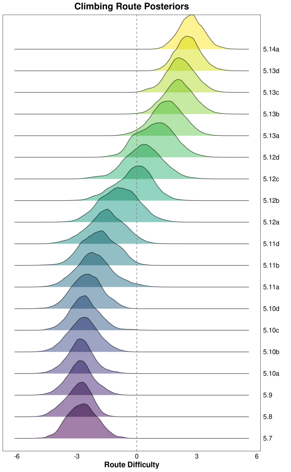
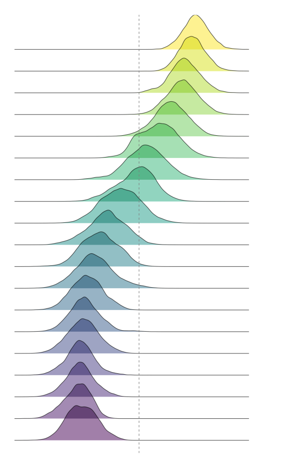

library(here) # File path management
library(pipebind) # Piping goodies
library(fs) # File & path manipulation
library(dplyr) # Data wrangling
library(tidyr) # Data wrangling (extras)
library(purrr) # Manipulating lists
library(stringr) # Manipulating strings
library(lubridate) # Manipulating dates
library(data.table) # Data wrangling (fast)
library(DBI) # Database management
library(duckdb) # DuckDB R interface
library(dbplyr) # SQL backend for dplyr
library(cmdstanr) # R interface with Stan
library(posterior) # Wrangling Stan model ouputs
library(ggplot2) # Plots
library(ggridges) # Ridgeline plots
library(bayesplot) # Plots for Stan models
library(patchwork) # Combining plots
options(
mc.cores = max(1L, parallel::detectCores(logical = TRUE)),
scipen = 999L,
digits = 4L,
ggplot2.discrete.colour = \() scale_color_viridis_d(),
ggplot2.discrete.fill = \() scale_fill_viridis_d()
)
nrows_print <- 10
data.table::setDTthreads(getOption("mc.cores"))
Tip
You can check the page’s source code by clicking on the </> Code button at the top-right.
Setup
Stan setup
Installing CmdStan
cmdstanr::check_cmdstan_toolchain(fix = TRUE, quiet = TRUE)
cpp_opts <- list(
stan_threads = TRUE
, STAN_CPP_OPTIMS = TRUE
, STAN_NO_RANGE_CHECKS = TRUE # WARN: remove this if you haven't tested the model
, PRECOMPILED_HEADERS = TRUE
, CXXFLAGS_OPTIM = "-march=native -mtune=native"
, CXXFLAGS_OPTIM_TBB = "-mtune=native -march=native"
, CXXFLAGS_OPTIM_SUNDIALS = "-mtune=native -march=native"
)
cmdstanr::install_cmdstan(cpp_options = cpp_opts, quiet = TRUE)Loading CmdStan (if already installed)
highest_cmdstan_version <- dir_ls(config$cmdstan_path) |>
path_file() |>
keep(\(e) str_detect(e, "cmdstan-")) |>
bind(x, str_split(x, '-', simplify = TRUE)[,2]) |>
reduce(\(x, y) ifelse(utils::compareVersion(x, y) == 1, x, y))
set_cmdstan_path(glue::glue("{config$cmdstan_path}cmdstan-{highest_cmdstan_version}"))Setting up knitr’s engine for CmdStan
## Inspired by: https://mpopov.com/blog/2020/07/30/replacing-the-knitr-engine-for-stan/
## Note: We could haved use cmdstanr::register_knitr_engine(),
## but it wouldn't include compiler optimizations & multi-threading by default
knitr::knit_engines$set(
cmdstan = function(options) {
output_var <- options$output.var
if (!is.character(output_var) || length(output_var) != 1L) {
stop(
"The chunk option output.var must be a character string ",
"providing a name for the returned `CmdStanModel` object."
)
}
if (options$eval) {
if (options$cache) {
cache_path <- options$cache.path
if (length(cache_path) == 0L || is.na(cache_path) || cache_path == "NA") {
cache_path <- ""
}
dir <- paste0(cache_path, options$label)
} else {
dir <- tempdir()
}
file <- cmdstanr::write_stan_file(options$code, dir = dir, force_overwrite = TRUE)
mod <- cmdstanr::cmdstan_model(
stan_file = file,
cpp_options = list(
stan_threads = TRUE
, STAN_CPP_OPTIMS = TRUE
, STAN_NO_RANGE_CHECKS = TRUE # The model was already tested
, PRECOMPILED_HEADERS = TRUE
# , CXXFLAGS_OPTIM = "-march=native -mtune=native"
, CXXFLAGS_OPTIM_TBB = "-mtune=native -march=native"
, CXXFLAGS_OPTIM_SUNDIALS = "-mtune=native -march=native"
),
stanc_options = list("O1"),
force_recompile = TRUE
)
assign(output_var, mod, envir = knitr::knit_global())
}
options$engine <- "stan"
code <- paste(options$code, collapse = "\n")
knitr::engine_output(options, code, '')
}
)
💻 Expand for Session Info
─ Session info ───────────────────────────────────────────────────────────────
setting value
version R version 4.3.1 (2023-06-16)
os Ubuntu 22.04.3 LTS
system x86_64, linux-gnu
ui X11
language (EN)
collate C.UTF-8
ctype C.UTF-8
tz Europe/Paris
date 2023-09-26
pandoc 3.1.8
Quarto 1.4.376
Stan (CmdStan) 2.33.1
─ Packages ───────────────────────────────────────────────────────────────────
! package * version date (UTC) lib source
P bayesplot * 1.10.0 2022-11-16 [?] CRAN (R 4.3.0)
P cmdstanr * 0.6.1.9000 2023-09-21 [?] Github (stan-dev/cmdstanr@17678d5)
P crayon * 1.5.2 2022-09-29 [?] CRAN (R 4.3.0)
P data.table * 1.14.9 2023-05-05 [?] Github (Rdatatable/data.table@8803918)
P DBI * 1.1.3 2022-06-18 [?] CRAN (R 4.3.0)
P dbplyr * 2.3.3.9000 2023-09-21 [?] Github (Tidyverse/dbplyr@ac59da3)
P dplyr * 1.1.3 2023-09-03 [?] RSPM (R 4.3.0)
P duckdb * 0.8.1-3 2023-09-01 [?] RSPM (R 4.3.0)
P fs * 1.6.3 2023-07-20 [?] CRAN (R 4.3.0)
P ggplot2 * 3.4.3 2023-08-14 [?] CRAN (R 4.3.0)
P ggridges * 0.5.4 2022-09-26 [?] CRAN (R 4.3.0)
P gt * 0.9.0 2023-03-31 [?] CRAN (R 4.3.0)
P here * 1.0.1 2020-12-13 [?] CRAN (R 4.3.0)
P lubridate * 1.9.2 2023-02-10 [?] CRAN (R 4.3.0)
P patchwork * 1.1.3 2023-08-14 [?] CRAN (R 4.3.0)
P pipebind * 0.1.2 2023-08-30 [?] CRAN (R 4.3.0)
P posterior * 1.4.1 2023-03-14 [?] CRAN (R 4.3.0)
P purrr * 1.0.2 2023-08-10 [?] CRAN (R 4.3.0)
P stringr * 1.5.0 2022-12-02 [?] CRAN (R 4.3.0)
P tidyr * 1.3.0 2023-01-24 [?] CRAN (R 4.3.0)
[1] /home/mar/Dev/Projects/R/ma-riviere.com/renv/library/R-4.3/x86_64-pc-linux-gnu
[2] /home/mar/.cache/R/renv/sandbox/R-4.3/x86_64-pc-linux-gnu/9a444a72
P ── Loaded and on-disk path mismatch.
──────────────────────────────────────────────────────────────────────────────1 Data
1.1 Extracting the data
Connecting to the .sqlite DB (using DuckDB instead of SQLite):
dbplyr automatically translates dplyr code into SQL
(list(
## Table 1: ascent
tbl(con_duck, "ascent") |>
filter(country %like% "USA") |>
mutate(
route_id = str_c(
str_replace_all(crag, ' ', '_'), "__",
str_replace_all(name, ' ', '_'), "__",
if_else(climb_type == 1, 'boulder', 'rope')
),
ascent_date = as.integer(date)
) |>
select(user_id, route_id, climb_type, grade_id, method_id, ascent_date)
,
## Table 2: grade
tbl(con_duck, "grade") |>
select(grade_id = id, usa_routes, usa_boulders),
## Table 3: method
tbl(con_duck, "method") |>
select(method_id = id, method_name = name)
)
|> reduce(left_join)
|> select(-grade_id, -method_id)
|> compute("climb_dbp")
)Time difference of 0.4575 secs
SELECT
ascent.user_id
, REPLACE(ascent.crag, ' ', '_')
|| '__' || REPLACE(ascent.name, ' ', '_')
|| '__' || CASE WHEN ascent.climb_type = 1 THEN 'boulder' ELSE 'rope' END
AS route_id
, ascent.climb_type as climb_type
, ascent.date AS ascent_date
, grade.usa_routes
, grade.usa_boulders
, method.name AS method_name
FROM ascent
JOIN grade ON grade.id = ascent.grade_id
JOIN method ON method.id = ascent.method_id
WHERE ascent.country = 'USA'Time difference of 0.5061 secs
data.frame [658,822 x 7]
| user_id | route_id | climb_type | ascent_date | usa_routes | usa_boulders | method_name |
|---|---|---|---|---|---|---|
| 13 049 | Stoney_Point__Mickey_Mouse__boulder | 1 | 1 187 733 600 | 5.12a | V7 | Redpoint |
| 16 891 | RMNP__Tommy’s_Arete__boulder | 1 | 1 187 560 800 | 5.12a | V7 | Redpoint |
| 14 390 | Little_Si__chronic__rope | 0 | 1 187 820 000 | 5.13b | V11 | Redpoint |
| 16 440 | Enchanted_Tower__rumplestiltskin__rope | 0 | 1 187 820 000 | 5.12a | V7 | Onsight |
| 16 440 | Enchanted_Tower__Technowitch__rope | 0 | 1 187 820 000 | 5.12a | V7 | Onsight |
| 16 440 | Enchanted_Tower__Humpty_Dumpty__rope | 0 | 1 187 820 000 | 5.12a | V7 | Onsight |
| 16 440 | Enchanted_Tower__Jabberwocky__rope | 0 | 1 187 820 000 | 5.12b | V8 | Redpoint |
| 16 440 | Enchanted_Tower__Zee_Wicked_Witch__rope | 0 | 1 187 820 000 | 5.12c | V8/9 | Redpoint |
| 11 703 | Little_Rock_City__out_of_the_box__boulder | 1 | 1 035 846 000 | 5.11b | V5/V6 | Onsight |
| 11 910 | New_River_Gorge__the_raging_tiger__rope | 0 | 1 187 820 000 | 5.10d | V4/V5 | Onsight |
| 11 703 | Little_Rock_City_le_gant(aka_the_glove)__boulder | 1 | 1 063 231 200 | 5.11d | V6 | Redpoint |
| 13 500 | Mortar_rock__Nat’s_Lieback__boulder | 1 | 1 187 820 000 | 5.11d | V6 | Redpoint |
| 7 653 | Maple_Canyon__mutton_bustin’__rope | 0 | 1 187 733 600 | 5.14a | V14 | Redpoint |
| 7 653 | Maple_Canyon__WY_sheep_shagger__rope | 0 | 1 187 733 600 | 5.13d | V13 | Redpoint |
| 1 266 | High_Altitude,_CO__Centuries_Before__boulder | 1 | 1 183 413 600 | 5.12b | V8 | Redpoint |
| [ omitted 658,807 entries ] | ||||||
1.2 Processing the data
Comparing data.table and dbplyr:
dt_clean <- (
climb_dt[
climb_dt[, .I[which.min(ascent_date)], by = .(user_id, route_id)]$V1
][
, let(
ascent_date = as_datetime(ascent_date),
usa_boulders = factor(usa_boulders, levels = bouldering_grades),
usa_routes = factor(usa_routes, levels = route_ratings),
label = as.integer(method_name %chin% c("Onsight", "Flash"))
)
][
, let(route_rating = mode(usa_routes), bouldering_grade = mode(usa_boulders))
, by = route_id
][, threshold_ascents_dt(.SD)
][
, let(
route_idx = frank(route_id, ties.method = "dense"),
user_idx = frank(user_id, ties.method = "dense")
)
][order(user_idx), -c("usa_routes", "usa_boulders", "method_name")]
)Time difference of 5.191 secsthreshold_ascents_dbp
db_create_index(con_duck, "climb_dbp", "route_id")
db_create_index(con_duck, "climb_dbp", "user_id")
threshold_ascents_dbp <- function(old, lim = 20, collect = TRUE) {
if(collect) old <- collect(old)
new <- old |> filter(n() >= lim, .by = user_id) |>
filter(n() >= lim, .by = route_id)
if (nrow(collect(old)) != nrow(collect(new))) threshold_ascents_dbp(new, lim)
else if (collect) {
copy_to(con_duck, new, name = "dbp_temp")
return(tbl(con_duck, "dbp_temp"))
}
else return(new)
}Since DuckDB doesn’t have a mode function, we need to find another way to obtain the most common route_rating and bouldering_grade for each route_id. I do this by creating a reference table for each unique route_id for each of the two ratings, and then update the original data’s rows based on them.
(tbl(con_duck, "climb_dbp")
|> select(route_id, route_rating = usa_routes)
|> filter(route_rating %in% route_ratings)
|> count(route_id, route_rating)
|> slice_max(n, with_ties = FALSE, na_rm = TRUE, by = route_id)
|> select(-n)
|> compute("dbp_rr")
)
(tbl(con_duck, "climb_dbp")
|> select(route_id, bouldering_grade = usa_boulders)
|> filter(bouldering_grade %in% bouldering_grades)
|> count(route_id, bouldering_grade)
|> slice_max(n, with_ties = FALSE, na_rm = TRUE, by = route_id)
|> select(-n)
|> compute("dbp_bg")
)(tbl(con_duck, "climb_dbp")
|> rename(route_rating = usa_routes, bouldering_grade = usa_boulders)
|> mutate(label = as.integer(method_name %in% c("Onsight", "Flash")))
|> select(-method_name)
|> slice_min(ascent_date, with_ties = FALSE, by = c(user_id, route_id))
|> mutate(route_rating = NA, bouldering_grade = NA)
|> rows_patch(tbl(con_duck, "dbp_rr"), by = "route_id", unmatched = "ignore")
|> rows_patch(tbl(con_duck, "dbp_bg"), by = "route_id", unmatched = "ignore")
|> threshold_ascents_dbp()
|> mutate(
route_idx = dense_rank(route_id),
user_idx = dense_rank(user_id),
ascent_date = to_timestamp(ascent_date)
)
|> compute("dbp_clean")
)Time difference of 3.316 secsdata.table [232,887 x 9]
| route_id | user_id | climb_type | ascent_date | label | route_rating | bouldering_grade | route_idx | user_idx |
|---|---|---|---|---|---|---|---|---|
| Obed__Jungle_Jane__rope | 4 | 0 | 2006-11-18 23:00:00 | 1 | 5.12a | V7 | 2 459 | 1 |
| Red_River_Gorge__Chainsaw_Massacre__rope | 4 | 0 | 2006-11-23 23:00:00 | 1 | 5.12a | V7 | 2 787 | 1 |
| Red_River_Gorge__Gung_Ho__rope | 4 | 0 | 2006-11-20 23:00:00 | 1 | 5.12b | V8 | 2 870 | 1 |
| Red_River_Gorge__Kick_Me_In_The_Jimmie__rope | 4 | 0 | 2006-11-23 23:00:00 | 1 | 5.12a | V7 | 2 910 | 1 |
| Red_River_Gorge__Reliquary__rope | 4 | 0 | 2006-11-20 23:00:00 | 1 | 5.12b | V8 | 3 007 | 1 |
| Red_River_Gorge__Tuna_Town__rope | 4 | 0 | 2006-11-23 23:00:00 | 0 | 5.12d | V9 | 3 128 | 1 |
| Red_River_Gorge__Wild_Gift__rope | 4 | 0 | 2006-11-21 23:00:00 | 0 | 5.12c | V9 | 3 150 | 1 |
| Red_Rocks__Yaak_Crack__rope | 4 | 0 | 2006-12-09 23:00:00 | 1 | 5.11d | V6 | 3 359 | 1 |
| Obed__Solstice__rope | 4 | 0 | 2006-02-28 23:00:00 | 1 | 5.12a | V7 | 2 482 | 1 |
| Obed__Rage__rope | 4 | 0 | 2006-02-28 23:00:00 | 0 | 5.12c | V9 | 2 475 | 1 |
| Obed__Tierrany__rope | 4 | 0 | 2006-11-18 23:00:00 | 1 | 5.12a | V7 | 2 495 | 1 |
| Red_River_Gorge__Tuskan_Raider__rope | 4 | 0 | 2006-11-24 23:00:00 | 0 | 5.12d | V9 | 3 129 | 1 |
| Red_River_Gorge__Blue_Eyed_Honkey_Jesus__rope | 4 | 0 | 2006-11-28 23:00:00 | 0 | 5.12c | V8 | 2 759 | 1 |
| Red_Rocks__Keep_your_Powder_dry__rope | 4 | 0 | 2006-12-13 23:00:00 | 1 | 5.12b | V8 | 3 243 | 1 |
| Mt_Potasi__Moment_of_Clarity__rope | 4 | 0 | 2006-12-19 23:00:00 | 1 | 5.12a | V7 | 2 258 | 1 |
| [ omitted 232,872 entries ] | ||||||||
2 Model
2.1 Stan code
Updated Stan code using within-chain parallelization
functions {
array[] int sequence(int start, int end) {
array[end - start + 1] int seq;
for (n in 1 : num_elements(seq)) {
seq[n] = n + start - 1;
}
return seq;
}
// Compute partial sums of the log-likelihood
real partial_log_lik_lpmf(array[] int seq, int start, int end,
data array[] int labels, real mean_ability,
data array[] int users, vector user_ability,
data array[] int routes, vector route_difficulty) {
real ptarget = 0;
int N = end - start + 1;
vector[N] mu = mean_ability + rep_vector(0.0, N);
for (n in 1 : N) {
int nn = n + start - 1;
mu[n] += user_ability[users[nn]] - route_difficulty[routes[nn]];
}
ptarget += bernoulli_logit_lpmf(labels[start : end] | mu);
return ptarget;
}
}
data {
int<lower=1> num_ascents;
int<lower=1> num_users;
int<lower=1> num_routes;
array[num_ascents] int<lower=1, upper=num_users> users;
array[num_ascents] int<lower=1, upper=num_routes> routes;
array[num_ascents] int<lower=0, upper=1> labels;
int grainsize;
}
transformed data {
array[num_ascents] int seq = sequence(1, num_ascents);
}
parameters {
real mean_ability;
vector[num_users] user_ability;
vector[num_routes] route_difficulty;
}
model {
user_ability ~ std_normal();
route_difficulty ~ std_normal();
mean_ability ~ std_normal();
target += reduce_sum(
partial_log_lik_lpmf, seq, grainsize,
labels, mean_ability, users, user_ability, routes, route_difficulty
);
}2.2 Stan data
stan_data <- list(
num_ascents = nrow(dt_clean),
num_users = n_distinct(dt_clean$user_id),
num_routes = n_distinct(dt_clean$route_id),
routes = pull(dt_clean, route_idx),
users = pull(dt_clean, user_idx),
labels = pull(dt_clean, label) |> as.integer(),
grainsize = max(100, nrow(dt_clean) / 50)
)List of 7
$ num_ascents: int 232887
$ num_users : int 2977
$ num_routes : int 4288
$ routes : int [1:232887] 2459 2787 2870 2910 3007 3128 3150 3359 2482 2475 ...
$ users : int [1:232887] 1 1 1 1 1 1 1 1 1 1 ...
$ labels : int [1:232887] 1 1 1 1 1 0 0 1 1 0 ...
$ grainsize : num 46582.3 Model fit
mod_stan <- mod_stan_exe$sample(
data = stan_data, seed = 666,
iter_warmup = 500, iter_sampling = 1000, refresh = 0,
chains = 6, parallel_chains = 6, threads_per_chain = 5
)
Note
Sampling takes ~4.89 minutes on my CPU (Ryzen 5950X, 16 Cores/32 Threads), on WSL2 (Ubuntu 22)
data.table [6 x 2]
| Chain | Time |
|---|---|
| 1 | 284.245s (~4.74 minutes) |
| 2 | 297.297s (~4.95 minutes) |
| 3 | 294.22s (~4.9 minutes) |
| 4 | 289.123s (~4.82 minutes) |
| 5 | 295.178s (~4.92 minutes) |
| 6 | 299.366s (~4.99 minutes) |
3 Model diagnostics


Plotting random subsets of the traces
hist_trace_plot <- function(mod, vars) {
draws <- mod$draws(variables = vars, format = "draws_list")
wrap_plots(
mcmc_hist(draws, facet_args = list(nrow = length(vars))),
mcmc_trace(draws, facet_args = list(nrow = length(vars))),
widths = c(1, 1.5)
)
}


4 Posterior Predictions
4.1 Posterior data
Getting our Posterior Predictions (subset of 500 draws per route) into long format:
Comparing data.table, dbplyr, and dplyr (which uses the rvar format from posterior):
draws_dt <- (
## For each player, take a subsample of 500 draws from their posterior
mod_stan$draws(variables = "route_difficulty")
|> bind(x, subset_draws(x, "route_difficulty", regex = TRUE, draw = sample.int(ndraws(x), size = 500)))
|> as.data.table()
|> _[, .(route_difficulty = list(value)), by = variable
][, let(route_idx = as.integer(str_extract(variable, "\\d{1,4}")), variable = NULL)]
)
pp_dt <- (
dt_clean[, .(route_idx, bouldering_grade, route_rating, climb_type)]
|> unique(by = "route_idx")
|> _[draws_dt, on = "route_idx", nomatch = NULL
][, let(
bouldering_grade = factor(bouldering_grade, levels = bouldering_grades),
route_rating = factor(route_rating, levels = route_ratings)
)
][order(route_idx)]
)data.table [4,288 x 5]
| route_idx | bouldering_grade | route_rating | climb_type | route_difficulty |
|---|---|---|---|---|
| 1 | V7 | 5.12a | 1 | -2.4036, -1.6627, -1.7071, -2.0084, -2.1500, -2.0160, -2.7649, -2.0974, -2.5122, -2.1145, -1.5768, -2.0782, -1.9076, -2.8740, -2.1511, -1.5642, -2.1448, -2.7109, -2.2756, -1.7359, -1.8895, -2.3371, -2.5047, -1.9120, -1.8958, -2.2075, -1.3745, -2.1700, -2.6224, -1.8106, -1.5084, -1.8948, -1.6688, -1.6100, -2.2294, -2.2386, -2.1561, -0.8138, -2.2748, -1.6861, -2.4240, -1.9268, -1.5954, -2.3792, -2.2914, -1.5657, -1.5764, -2.1133, -2.0491, -1.8530, -1.4808, -1.3816, -1.8894, -2.7337, -1.9839, -1.9201, -2.1654, -2.1552, -1.4920, -1.9869, -2.8291, -2.0487, -2.7836, -2.2338, -3.2882, -1.6372, -2.4036, -1.6736, -1.2998, -2.4355, -2.2683, -2.7506, -2.2286, -1.8803, -1.8695, -2.0431, -1.2866, -1.5490, -1.5678, -1.9319, -1.8256, -1.3986, -2.3038, -1.1248, -1.7219, -2.1707, -2.4581, -2.6961, -2.1056, -1.9376, -1.8047, -1.8548, -2.3417, -1.5335, -2.2131, -1.6951, -1.7248, -1.3004, -1.5305, -1.2769, -2.3445, -2.3872, -1.5317, -2.1479, -1.9564, -2.1496, -2.1540, -2.0219, -1.7456, -1.6958, -2.3422, -1.7737, -2.1448, -1.9089, -2.4595, -1.6010, -2.2074, -1.3774, -1.0899, -1.9180, -1.7839, -2.0029, -1.9899, -2.6756, -1.7154, -1.9613, -2.4063, -2.2259, -1.9855, -1.7946, -1.9104, -1.8247, -2.2892, -1.8619, -2.1509, -1.8026, -1.8367, -1.2937, -1.7476, -2.1524, -1.7560, -1.6902, -1.1975, -0.8713, -2.0856, -1.9453, -1.5425, -1.9733, -1.4536, -2.0817, -2.1273, -1.7945, -1.1993, -1.2696, -1.8322, -1.6750, -1.4624, -2.2401, -2.5046, -1.3196, -3.0899, -1.8130, -1.7106, -1.7252, -2.0197, -2.3997, -1.5270, -1.5512, -1.9813, -1.7832, -2.7288, -1.2202, -2.5904, -1.9626, -1.9630, -2.6694, -2.0191, -2.1098, -0.9509, -2.0298, -1.6713, -1.7673, -1.8187, -1.7031, -2.0475, -2.6649, -2.1571, -1.5508, -1.8456, -1.4301, -2.3418, -1.6556, -2.8812, -2.7297, -2.5970, -2.4026, -2.5029, -1.2439, -2.0999, -1.8628, -1.6767, -2.8547, -2.5298, -2.2700, -2.0867, -1.5326, -2.3940, -1.9205, -1.5806, -1.5678, -1.6355, -2.6736, -2.1480, -2.1584, -1.7367, -1.8448, -1.7881, -1.9778, -1.7665, -2.0368, -2.1074, -1.6483, -2.0190, -2.5962, -2.0691, -1.9989, -1.6923, -1.7679, -1.6531, -1.7728, -1.8411, -1.6364, -2.5309, -2.6119, -1.8890, -2.0284, -1.9857, -2.0132, -2.9051, -1.4833, -2.6082, -1.6702, -2.6873, -2.1534, -1.6084, -2.1700, -1.5910, -1.8888, -2.0397, -1.5846, -2.1545, -1.3957, -1.8196, -2.0956, -1.8242, -2.6523, -1.6978, -1.8199, -2.1488, -2.2191, -2.3781, -2.1128, -2.5999, -0.9898, -1.1852, -1.2112, -2.0551, -2.0855, -1.9100, -1.5743, -1.4999, -2.1648, -2.6663, -1.1793, -1.7390, -2.3078, -1.9137, -1.6040, -1.3443, -1.5019, -1.5744, -1.7781, -1.9923, -1.7527, -0.9498, -2.3498, -2.5124, -1.5129, -2.3111, -1.8711, -1.5239, -1.8466, -1.7001, -2.0318, -1.6523, -2.7747, -1.4278, -1.3013, -3.3963, -1.6165, -2.3357, -2.1250, -1.7493, -2.4189, -1.8969, -2.2238, -1.7080, -1.6245, -1.5817, -2.2776, -1.8242, -1.5961, -2.3595, -2.0981, -1.7757, -2.0220, -1.0633, -2.2156, -1.3532, -2.1235, -2.4741, -2.8265, -1.5841, -1.8161, -2.6482, -1.5874, -1.1728, -2.5631, -1.9149, -1.2145, -2.5805, -2.4928, -2.0863, -1.6420, -2.4349, -1.8661, -2.4006, -2.2443, -2.2372, -2.0419, -2.6466, -2.6686, -1.0891, -2.3505, -2.1645, -2.0960, -1.6548, -1.9422, -2.3665, -1.7083, -1.8054, -2.3108, -2.7689, -0.8365, -1.9341, -2.2092, -1.8467, -1.2069, -1.4519, -2.3300, -1.3244, -1.6430, -1.9981, -2.3200, -1.5468, -2.2296, -1.5712, -2.0766, -1.6605, -1.8415, -2.2913, -1.9798, -1.9423, -2.1812, -1.2330, -1.2704, -2.0194, -1.5390, -1.5712, -1.8309, -2.7719, -2.1740, -2.2469, -1.8678, -2.0681, -1.8252, -1.4175, -2.5117, -2.1680, -2.0409, -1.9951, -1.5851, -1.6925, -1.8987, -1.9901, -2.2134, -1.8392, -2.1184, -1.6212, -2.0476, -2.1989, -2.2876, -2.1413, -1.6068, -2.2339, -2.7417, -2.6863, -2.0662, -1.6823, -1.7501, -1.9048, -1.9219, -1.9440, -1.7214, -1.3974, -2.2496, -1.9895, -1.8579, -1.9795, -2.3705, -1.7874, -2.2575, -2.1223, -2.4449, -1.5184, -2.6771, -1.3817, -1.3172, -1.3652, -1.6821, -1.8284, -1.8005, -2.3459, -1.2113, -2.1080, -2.1399, -1.9495, -1.6671, -1.8152, -1.9569, -1.9852, -2.2054, -1.6021, -2.5167, -2.8927, -1.6087, -2.5859, -1.9329, -1.5973, -2.0620, -1.0532, -2.7522, -2.7128, -1.7621, -2.1225, -2.2387, -1.7931, -2.2091, -2.0838, -2.8822, -1.7357, -1.8448, -1.8784, -2.2617, -2.0086, -1.1237, -1.1211, -1.5748, -1.7469, -2.2311, -2.3181, -2.6092, -2.1190, -1.6410, -2.4515, -2.2026, -1.2369, -2.0016, -3.1225, -1.1705, -1.7545, -1.9722, -1.4158, -1.9540, -2.1066, -2.1862, -2.2251, -1.5510, -2.7753, -2.0195, -1.1101, -1.8066, -1.0286, -1.6031, -2.7115, -2.6074, -1.9126, -1.8094, -2.3838, -1.7580 |
| 2 | V7 | 5.12a | 1 | 1.3095400, 1.4146000, 0.6461360, 0.7765020, 0.4821310, 0.5758440, 1.4187500, 0.3212130, 0.0854642, 0.8591100, 1.7446700, 0.5482910, 1.0936500, 1.4469500, 1.0566400, 0.7636670, 0.8599480, 0.8094490, 0.9343690, 1.0559700, 1.3971600, 0.6116170, 0.6585350, 1.1046400, 0.9982730, 0.5991780, 1.2122900, 1.1546200, 1.3666400, 1.2703200, 1.5783900, 0.4265050, 0.5406790, 1.0641400, 0.8588430, 0.9268220, 0.8483740, 0.6014500, 0.6872680, 1.0057800, 1.1904200, 0.8280390, 0.5987420, 1.4922500, 0.8788930, 1.1105500, 1.3018600, 0.9323380, 0.9553090, 0.6645630, 0.4948790, 0.3947020, 0.7107660, 0.7122000, 0.7989770, 0.8768510, 0.8481900, 0.6074470, 0.8205390, 1.0411700, 0.5510100, 0.5650970, 0.6519690, 0.8357740, 1.0302800, 1.1293600, 0.9423480, 1.5381400, 1.5889300, 0.7412090, 0.9929600, 0.2964670, 0.5664230, 1.1399200, 1.3400300, 1.5696800, 0.7828190, 0.3988520, 1.3230300, 1.1262100, 1.5091600, 1.1071000, 0.9707890, 0.1362990, 0.5739980, 1.2308100, 0.6820660, 1.2248700, 2.0995700, 1.3532200, 0.8631160, 0.9332830, 1.6608600, 0.5586050, 1.1027000, 0.9152430, 1.2458600, 1.1840400, 1.8945700, 1.3527600, 1.3477600, 0.6090590, 1.3374100, 1.0422100, 1.0562000, 0.8252870, -0.4529610, 1.1354600, 0.8546030, 0.9079990, 0.7869970, 0.5880290, 1.2828500, 1.8265100, 1.7886600, 0.9123010, 0.9684610, 0.8693540, 1.7830400, 0.4914490, 0.5526610, 0.9476370, 0.6134790, 1.0948000, 0.4113550, 1.1158600, 1.1778000, 1.4143200, 1.1338300, 0.8944920, 0.7025020, 0.4026610, 1.0686200, 0.7777930, 1.7884500, 1.4105300, 0.5688750, 0.7225050, 0.9103370, 1.6472700, 0.6557560, 0.9189250, 0.8016130, 1.3241300, 1.6059000, 0.8023870, 0.6933950, 0.0009183, 0.7747700, 0.4955710, 1.3615600, 0.8880490, 0.8354060, 0.4945020, 0.8152920, 1.1700800, 0.0786897, 1.4544600, 0.7970910, 0.5915760, 0.4731790, 1.3375600, 1.3123000, 1.3506300, 0.5130720, 1.0495100, 1.7019000, 1.5412400, 0.6021190, 0.8194690, 0.9032360, 0.9429240, 1.0624500, 1.4749200, 0.6768510, 0.4010710, 1.2306100, 0.6810630, 0.7685730, 1.1773400, 0.5789400, 1.0595900, 0.8191750, 1.0724700, 0.6973020, 0.4617780, 0.9541930, 0.4990060, 0.8171680, 0.6432790, 1.1864700, 1.0476500, 1.3061600, 0.1001890, 1.2553000, 1.7696800, 0.8338160, 0.2663690, 0.9209160, 0.2967540, 1.3223200, 1.1946600, 0.2945530, 1.4094700, 1.1108100, 0.8297200, 0.9242950, 1.0391400, 0.7447560, 0.4257820, 0.6220230, 0.9538460, 0.9427190, 0.7339220, 0.9766430, 0.3852590, 0.7722970, 1.3735400, 1.1683800, 1.0558300, 1.5132100, 0.6770330, 1.4014100, 0.7202360, 0.9725820, 0.5955850, 1.0841200, 0.9317120, 2.2310900, 0.8687860, 0.9205640, 0.9615780, 0.6715710, 0.2701720, 0.9991180, -0.1308210, 1.0630900, 0.8584480, 0.6910970, 0.7446030, 1.2516900, 0.3958800, 1.0496900, 0.9838160, 1.1456200, 1.6777400, 0.7648190, 0.4254450, 1.0686900, 1.0751200, 1.2434400, 0.9015590, 0.5176300, 1.0390600, 1.2598300, 0.8769470, 0.4278760, 0.7527450, 0.6145430, 1.1375900, 1.0376200, 1.9742600, -0.0061963, 1.5362000, 0.9721110, 0.9289560, 0.9403670, 0.9637600, 0.6820240, 1.0262000, 0.9607130, 0.9622670, 1.4181400, 1.5367000, 1.0563200, 1.0835200, 1.0749100, 1.3471500, 0.9294070, 1.1991300, 1.0894200, 0.8725140, 1.0530700, 0.8214330, 0.9617940, 0.5429180, 0.6377980, 0.3363760, 0.4264260, 1.2277500, 1.7837500, 0.3399170, 1.2104800, 0.5309050, 0.0639551, 1.2788500, 0.8566320, 1.3136800, 0.6392620, 0.8080330, 1.5866700, 0.5943890, 0.7288670, 1.1173200, 1.3632100, 1.1295600, 0.3718080, 1.9055600, 1.2689100, 1.0065500, -0.2545470, 0.6556840, 1.4018100, 0.6393670, 2.3593800, 0.6862720, 0.4743520, 0.3462080, 0.4171230, 1.5969500, 0.9798460, 1.2722100, 1.9116500, 1.7105000, 1.0975600, 0.7104320, 1.4639000, 1.0752900, 0.5814010, 0.8909800, 1.3516100, 0.6080300, 0.7959420, 1.3891200, 0.0895441, 0.9216870, 0.9522320, 1.1344800, 1.0956000, 1.4225300, 0.9813000, 0.9950870, -0.2048060, 0.7708060, 0.1641290, 1.1399600, 1.3787400, 0.6533230, 1.0405100, 0.6980650, 0.3296630, 0.8625330, 1.2419300, 0.7886200, 0.9603410, 0.7246160, 0.6638360, 0.5385240, 1.3774100, 0.9370180, 0.8491130, 0.2266400, 0.6744340, 0.5102980, 1.4177200, 0.1975930, 1.7952400, 1.1879500, 1.7394900, 1.0644400, 1.0766300, 1.0244600, 1.1301000, 1.1542300, 1.0872300, 0.5312310, 1.2994000, 1.1204100, 0.2242490, 0.4599360, 0.5255800, -0.0905633, 1.5511100, 1.0706600, 0.9678620, 1.1131100, 1.1032200, 0.9730480, 0.7883030, 1.8019900, 1.0380400, 0.5310100, 1.2687200, 1.2002200, 1.4401600, 1.1513900, 0.7607360, 0.7408550, 1.0722500, 0.7245760, 0.9864540, 0.6469690, 1.4442800, 0.7391360, 1.1742000, 1.0978000, 0.8492320, 1.6453800, 1.3881400, 1.0840700, 0.3603720, 0.4897430, 0.6460430, 0.1575790, 1.6614900, 0.6569830, 0.5255650, 0.8379190, 1.3927000, 0.7566350, 1.0115400, 0.6785080, 0.5351340, 1.1224700, 1.2019000, 0.7050870, 1.1208200, 1.9370200, 2.0920900, 0.5538430, 0.9038160, 0.4460110, 0.8129760, 0.4602180, 1.4131600, 0.9342860, 0.5486950, 0.9357530, 1.3088400, 0.1777590, 0.7776330, 0.7425330, 0.8621520, 0.8860970, 1.0397800, 1.0685800, 1.0369300, 0.8545740, 0.8077960, 2.3256300, 0.8292130, 0.9676000, 0.5344560, 0.9804810, 1.1456200, 1.1217500, 1.0067900, 0.7462280, 0.4748410, 1.1688900, 0.9304440, 0.7926330, 0.7373890, 0.4657780, 0.7188530, 0.6939940, 0.8804110, 0.6928140, 1.0484800, 1.5807900, 1.2422800, 0.4587310, 1.1460000, 0.6509920, 1.4029800, 1.3190700, 1.0342100, 1.1245300, 0.4618560, 0.4777590, 0.6121660, 1.0471000, 1.3403200, 1.3210900, 0.8083540, 1.0575200, 1.0584200, 1.5844700, 1.4117500, 0.4468570, 0.7725910, 1.4218500, 0.5363640, 1.0254600, 0.9929380, 0.9469150, 0.6828630, 1.2892900, 0.9860430, 1.4719000 |
| 3 | V5 | 5.11a | 1 | 0.804304, -0.374821, 0.371707, -0.218577, 0.117932, -0.379908, 0.124028, -0.132319, 0.164510, -0.372424, -0.166699, 1.011940, 0.259517, 0.090228, -0.387423, -0.315476, -0.134064, 0.135988, -0.321190, 0.099909, -0.132504, -0.454446, 0.124690, 0.119580, -0.132355, -0.526424, 0.015457, -0.130897, -0.166745, -0.317600, -0.194584, 0.759426, -0.054502, 0.383156, 0.362663, -0.246414, -0.111688, 0.003080, 0.142798, -0.263901, -0.072100, 0.578640, 0.317231, -0.301769, 0.096098, 0.641235, -0.156043, -0.344152, 0.040987, -0.141768, 0.508321, -0.345990, -0.223247, 0.533847, -0.495360, 0.046242, -0.122081, 0.074626, -0.273118, -0.110938, 0.103787, 0.762608, -0.076461, -0.278404, 0.685581, 0.278715, -0.040057, 0.229960, -0.109903, 0.278820, -0.065506, 0.424549, -0.153312, -0.385118, 0.271363, -0.103782, -0.001454, -0.508654, 0.620665, -0.285346, -0.253620, -0.220089, 0.273049, 0.189174, 0.199289, -0.322253, -0.104068, -0.369512, 0.728266, 0.785344, -0.124270, 0.103304, 0.195304, 0.166090, 0.263509, 0.310495, -0.169290, 0.597747, 0.401743, 0.809139, 0.476885, 0.015800, 0.666872, -0.059715, -0.339515, 0.161612, -0.032381, 0.020901, 0.641517, -0.038094, -0.225316, -0.289961, -0.106294, -0.264738, 0.286565, -0.297761, 0.046048, -0.273187, 0.270108, 0.375283, 0.155445, 0.019837, -0.294383, -0.576427, -0.053086, 0.104246, -0.228341, -0.103868, -0.144012, 0.233902, 0.424292, 0.427012, -0.069185, -0.234246, 0.387187, -0.376507, -0.521081, -0.227819, -0.250375, 0.013853, 0.735325, -0.115767, -0.198957, -0.323380, 0.877209, 0.277087, 0.058059, 0.350280, -0.383660, 0.139258, 0.083270, -0.141106, 0.433471, 0.390201, -0.364511, 0.106503, -0.460086, 0.214099, 0.310949, 0.477593, 0.068182, 0.215058, 0.098423, 0.520716, -0.520641, 0.072289, 0.364162, 0.102261, 0.383060, 0.551783, -0.143144, 0.243904, 0.064063, -0.048188, -0.606064, 0.443133, 0.380913, -0.171084, -0.214358, -0.026568, -0.066741, -0.137621, 0.306150, -0.423782, 0.193753, 0.073333, 0.408754, -0.278355, -0.164664, 0.657747, 0.054439, -0.103743, -0.587553, -0.407148, -0.167403, -0.446358, -0.094637, -0.193908, -0.591438, -0.641003, 0.097767, 0.211151, 0.026567, 0.341634, 0.091569, -0.317617, 0.088952, -0.035218, -0.017628, -0.217913, 0.153904, -0.320447, 0.247184, -0.101860, -0.406537, -0.274462, -0.355323, 0.014099, 0.605549, -0.270424, -0.017463, 0.018911, 0.185206, 0.136891, 0.246663, 0.493332, -0.007296, -0.403551, 0.943051, -0.062920, 0.357675, 0.149334, 0.132749, 0.300403, -0.158563, 0.217527, 0.075104, 0.829670, -0.038893, 0.249400, -0.411450, 0.093461, 0.152390, 0.052242, 0.277091, -0.355180, -0.140170, 0.025250, 0.512110, -0.378999, 0.548713, -0.024474, 0.129990, 0.124708, 0.379121, -0.346601, -0.081056, -0.083541, -0.375803, 0.352768, -0.264309, 0.029260, 0.303012, 0.466054, 0.175653, 0.207823, -0.149157, -0.072243, -0.326316, 0.311842, -0.483445, -0.055972, 0.213784, -0.080613, 0.155210, 0.023663, -0.067125, 0.281643, 0.064489, 0.220428, 0.054347, -0.188492, -0.037655, -0.335478, -0.533995, 0.338281, 0.504134, 0.162533, 0.420919, 0.106631, -0.142687, -0.592743, 0.393463, 0.050855, 0.682052, -0.138795, 0.362480, 0.139482, -0.058581, 0.622384, -0.241224, 0.193148, 0.536114, 0.252894, -0.142351, 0.098939, -0.304503, 0.181200, 0.587289, 0.360515, -0.303988, -0.493964, -0.152634, -0.179295, 0.559508, 0.185339, 0.402578, -0.605445, -0.252707, -0.278804, 0.229683, -0.681798, -0.347584, -0.251781, 0.248792, -0.328998, -0.499487, -0.147831, 0.267029, -0.033184, 0.563816, 0.514458, 0.352950, -0.157410, 0.360898, -0.390724, 0.188069, -0.157901, 0.154086, 0.480232, 0.088196, 0.483398, -0.365476, 0.119577, 0.206076, 0.029420, -0.423636, 0.255967, -0.244808, -0.279709, -0.295571, 0.299298, 0.075836, -0.003351, 0.381357, 0.539436, 0.361834, -0.222454, -0.019861, -0.118966, -0.505301, 0.517170, 0.024650, -0.045562, 0.316701, -0.202683, 0.116846, 0.668891, 0.002163, 0.870039, 0.526093, -0.059892, -0.006439, -0.444788, -0.654170, -0.193915, 0.295358, -0.189093, -0.076960, -0.339006, 0.280014, 0.473952, -0.459370, 0.137465, -0.372684, 0.144193, 0.545278, -0.479830, -0.786553, 0.160232, -0.237361, 0.183011, 0.114044, -0.388429, 0.225413, -0.291234, 0.025821, 0.242338, 0.399217, -0.424459, 0.012319, -0.427370, -0.585015, 0.139150, -0.162343, 0.473068, -0.285497, 0.087397, -0.462698, -0.014092, 0.048098, -0.224308, -0.173484, -0.336991, 0.062953, 0.659884, -0.395620, -0.191860, 0.777161, 0.283441, 0.387861, -0.610885, -0.381708, -0.276616, 0.307653, 0.534442, -0.376126, -0.269516, 0.254347, -0.247362, -0.276388, 0.216615, 0.654976, 0.013277, -0.033863, 0.154653, -0.271056, -0.046168, 0.708574, 0.169401, 0.122436, -0.252608, -0.062610, -0.330243, 0.337209, 0.269885, 0.288405, 0.219524, 0.003439, -0.327152, 0.081742, -0.203915, 0.502905, 0.245765, -0.227732, -0.375740, 0.408736, -0.335219, 0.067516, 0.068892, -0.064544, -0.045539, 0.139970, 0.419672, 0.568534, -0.095952, 0.374651, -0.075970, -0.060752, 0.663513, -0.426593, -0.308925, -0.181551, -0.092979, -0.144242, 0.310101, 0.103282, 0.999817, -0.029416, 0.298693, -0.477733, 0.251802, -0.236318, -0.365850, 0.123950, -0.370689, -0.722922, -0.252200, 0.341779, 0.043751, 0.005015, 0.672817, 0.703213, 0.065977, 0.230910, 0.134037, -0.017460, 0.001782, 0.072416, 0.337499 |
| 4 | V7 | 5.12a | 1 | 0.147307, 0.847160, 1.144630, 0.486286, 0.248653, 0.499511, 0.664618, 0.592083, 0.487370, 0.267440, 0.525581, 1.132470, 1.097820, 0.125052, 0.671896, 0.818272, 0.517272, 0.171736, 0.452755, 0.231343, 0.113142, 0.772211, 0.560292, 0.708594, 0.500221, 0.760912, 0.541435, 0.609118, 0.575098, 0.176403, 0.664214, 0.366289, 0.849399, 0.786441, 0.592866, 0.587551, 0.605863, 0.072585, 0.467056, 0.674830, 0.234077, 0.920176, 0.903506, 0.374562, 0.891446, 0.291886, 0.812243, 0.110491, 0.742496, 0.854205, 0.526937, 0.508786, 0.338577, 0.455738, 0.674195, 0.168916, 0.895902, 1.262610, 0.369063, 0.253420, 0.811164, 0.348240, 0.776063, 1.391550, 0.796807, 0.437064, 0.627637, 0.250256, 0.295885, 0.500679, 0.728507, 0.222279, 0.664689, 1.132360, 0.171737, 0.697966, 0.162004, 0.079465, 0.201537, 0.813913, 0.527772, 0.574289, 0.648692, 0.664553, 0.816075, 0.044774, 0.514808, 0.634515, 0.112131, 0.266992, 1.019180, 0.787625, 0.256101, 0.696943, 0.452554, 0.560266, 0.580310, 0.239167, 0.176699, 0.340679, 0.849142, 0.830154, 0.978140, 0.580162, 0.650405, 1.099700, 0.461030, 0.787622, 0.135139, 0.757994, 0.284258, 0.908971, 0.488749, 0.439836, 0.020233, 0.969407, 0.328243, 1.142100, 0.509146, 0.479671, 0.756762, 0.853818, 1.212860, 1.192110, 0.173266, 0.938635, -0.221024, 0.312920, 0.936205, 0.635535, 0.767897, 0.918802, 0.789214, -0.299671, 0.100065, 0.745835, 0.252525, 0.340811, 0.406795, 0.720352, 1.462000, 0.799018, 0.933236, 0.460920, 0.398085, 1.027240, 1.192190, 0.761645, 0.433623, 0.879474, 1.031150, 1.298040, 0.500804, 0.311932, 0.863374, 0.606172, 0.834188, 0.462938, 0.934726, 0.937497, 0.225989, 0.204564, 0.582173, 0.817363, 0.400658, 0.077997, 0.655555, 0.930171, 0.577804, 0.814899, 0.648893, 1.170460, 0.369495, 1.267250, 0.954861, 0.927139, 1.243670, -0.114185, 0.608962, 1.045730, 0.423145, 0.769251, 0.132094, 1.023840, 0.219931, 0.870710, 0.416708, 0.599761, 0.471961, 0.231305, 0.760186, 0.946492, 0.379894, 0.783049, 1.343380, 0.854315, 0.508093, 0.377528, 1.358380, 0.884904, 0.182205, 0.882557, 0.366409, 1.173390, 0.612842, 0.526797, 0.155814, 0.466502, 0.863578, 0.325859, 1.345500, 0.894246, 0.758647, 1.830350, 0.348264, 0.369105, 0.769347, 0.536057, 0.450196, 0.522109, 0.684011, 0.652549, 0.134872, 0.390123, 0.906388, 0.801543, 1.008840, 0.729895, 0.175214, 0.581171, 0.461935, 1.088490, 0.883684, 1.072400, 0.616077, 1.101840, 0.284658, 0.900315, 0.590841, 1.286980, 0.597856, 0.954194, 0.331595, 1.276280, 0.240089, 0.590003, 0.618275, 0.822051, 0.194107, 0.678227, 1.007360, 0.992877, 0.759744, 0.115977, -0.078766, 0.803919, 0.398103, 0.480638, 0.603154, 0.001802, 1.316960, 0.811326, 0.551742, 1.159510, 0.540481, 0.558888, 0.334012, 0.220333, 0.047685, 0.808556, 0.294614, 0.655652, 0.874335, 0.625770, 0.753558, 0.577723, 0.778189, 0.951896, 0.974801, 0.225075, 0.694514, 0.679945, 0.587821, 0.324964, 0.605026, 0.679272, 0.647117, 0.535249, 0.046601, 0.834819, 0.511575, 0.678694, 0.612180, 0.843415, 0.745325, 0.862905, 0.650432, 0.586149, 0.669139, 0.812469, 0.080086, 0.348154, 0.203705, 0.959088, 0.815589, 0.794680, 1.050090, 0.490861, 0.533569, 0.720631, 0.566234, 0.579330, 0.507616, 0.454677, 1.384880, 0.642551, 0.421713, 0.633961, 0.328613, 0.492960, 1.133230, 0.661063, 1.123150, 1.133850, 0.079787, 0.748532, 0.153567, 1.186100, 0.861237, 0.237309, 0.683085, 0.358249, 0.808835, 1.102340, 0.137790, 0.436289, 0.970929, 0.651038, 0.337154, 0.530323, 0.732997, 0.667426, 0.895658, 0.697090, 0.499352, 0.827487, 0.347055, -0.019317, 1.089300, 0.961031, 0.949030, 0.914193, 0.390733, 0.563888, 0.449306, 1.078670, 0.531380, -0.176148, 0.126635, 0.935257, 1.236130, 0.377876, 0.653978, 0.343884, 0.908418, 0.851688, 0.265093, 0.729678, 0.785730, 0.374670, 0.890483, 0.868942, 0.821001, 0.761499, -0.100401, 0.899510, 0.499271, 1.152420, 0.815291, 0.406261, 1.000780, 0.757923, 0.546810, 1.494820, 0.847603, 0.432063, 0.623329, 0.589590, 0.644765, 0.542231, 0.103800, 0.882225, 0.121659, 0.828508, 0.776525, 0.286138, 0.395023, 1.230270, 0.672170, 0.824591, 0.749877, 0.756590, 0.243214, 0.528089, 0.508334, 0.463084, 1.013950, 0.014308, 0.636118, 0.322694, 1.216240, 0.233093, 0.505134, 0.752621, 0.755201, 0.919502, 0.137702, 0.331014, 0.604591, 0.516944, 0.315424, 0.971330, 1.291470, 0.364942, 0.531956, 0.966858, 0.044368, 0.889603, 1.157340, 0.940732, 0.447145, 0.533520, 0.679629, 1.099620, 0.560615, 0.667423, 0.752633, 0.935369, 0.532320, 0.374384, 0.678094, -0.111028, 0.939465, 0.483060, 1.122640, 0.516719, 0.805294, 0.719856, 1.441470, 0.711482, 0.830059, 0.432392, 1.040000, 0.349746, 0.250963, 0.319059, 0.730694, 1.268120, 0.902708, 0.883119, 0.805742, 0.848145, 0.280700, 0.081735, 0.391314, 0.810159, 1.173300, 1.057270, 0.592948, 0.621917, 0.784661, 0.221958, 0.704477, 0.847706, 0.625697, 0.853969, 1.189290, 0.925645, 1.331530, 0.600534, 1.014690, 0.357259, 0.338638, 0.260090, 0.719431, 1.015750, 0.173381, 0.895302, 0.548254, 0.834544, 1.018310, 0.905345, 0.904457, 0.616029, 0.925820, 0.502692, 1.187660, 0.639580, 0.915040, 0.756942 |
| 5 | V4 | 5.10c | 1 | 1.501010, 1.173810, 0.261107, 1.363220, 0.635109, 1.789890, 0.208139, 0.848877, -0.030943, 0.847981, 1.814500, 1.911300, 0.889586, 0.973107, 0.580967, 0.406970, -0.008950, 1.550270, 1.222720, 0.914322, 1.057820, 1.304730, 0.487044, 0.444303, 0.927741, 0.716040, 0.684129, 0.739689, 1.573790, 1.395770, 0.564419, 1.094750, 0.520200, 1.391080, 0.081571, 0.432105, 0.342647, 0.760594, 1.467610, 2.079980, 0.098805, 1.055670, 1.006760, 0.709964, 0.895266, 0.424061, 0.628797, -0.004056, 1.725240, 1.670580, 0.935088, 0.774797, 0.549255, 0.900358, -0.282781, 0.377810, 1.715450, 1.774980, 0.919615, 1.545330, 0.052117, 1.018070, 0.925535, 1.041690, 1.317870, 1.303520, 0.820221, 1.398730, 1.667460, 0.777070, 0.633343, -0.462064, 1.081560, 0.707284, 1.207320, 0.768822, -0.191969, 0.569570, 0.019561, 2.039910, 1.741250, 0.792072, 1.036850, 0.671668, 0.920166, 0.535273, 0.331550, 0.241004, -0.059108, 0.745009, 1.286270, 0.169176, 1.997330, 2.045090, 1.054950, 0.328663, 1.180850, 1.250280, 0.899594, 0.492896, 0.568386, 0.371026, 1.611040, 1.594080, 1.002780, 0.929443, 0.981683, 0.319034, 0.614826, -0.327774, 0.140634, 2.555590, 1.662220, 1.281860, -0.125836, 0.771886, 1.254640, 1.960960, 0.747043, 0.572657, 0.722396, 0.936651, 1.021890, 0.896130, 0.753582, 0.670148, 0.484470, 0.882371, 1.419890, 0.442043, 0.264868, 1.436830, 0.337998, 1.625900, 0.736045, 1.104920, 0.606042, 0.565167, 1.151020, 1.705060, 0.414646, 0.454740, 0.042438, 1.292460, 0.819627, 0.274962, 0.940732, 1.307250, 1.991610, 1.392830, 0.415401, 0.227449, 1.559590, 1.467240, 1.022890, 0.829628, 1.824180, 0.454714, 0.179259, 1.011170, 1.173460, 1.008730, 1.420740, 0.798076, 1.294020, -0.482550, 1.466170, 0.738496, 0.114720, 2.167260, 0.549940, 0.927942, 1.080590, 1.266020, 0.468281, 0.920872, 1.762470, 0.518552, 1.816080, 1.150660, 0.686251, 1.068310, 1.269450, 2.473280, 0.778713, 1.276360, 0.799985, 1.698950, 0.555552, 2.610540, 1.089790, 1.512290, 0.241327, 1.465160, 1.065590, 1.636900, 0.454416, 0.565274, 0.500138, 1.190970, 1.453930, 0.589821, 1.212070, 2.225870, 0.138769, 0.551072, 0.740785, 2.383720, 0.821037, 0.567368, 1.560980, 0.287680, -0.130033, 0.519746, 1.077010, 0.974837, 1.135610, 0.985126, 0.900180, 0.683321, 1.105680, 0.869103, 0.620572, 0.273181, 1.080240, 0.436291, 0.338165, 0.351045, 0.119361, 1.312930, -0.418497, 1.217800, 1.115700, 0.128436, 0.450260, -0.192080, -0.612612, 1.166370, 0.776773, 1.816600, 0.320793, 0.225915, 0.814799, 0.799325, 1.155890, 0.560232, 0.743281, 1.702330, 1.043600, 0.945693, 1.793280, 0.997102, 0.909498, 0.923010, 1.358200, 0.893405, 0.910083, 1.392780, 0.506561, -0.112985, 1.132300, 1.043620, 0.583184, 0.298843, 2.241480, 2.361740, -0.254348, 1.512500, 1.303600, 1.496020, 1.918260, 0.109303, 2.111300, 0.611822, 1.278870, 0.868259, 1.438760, 2.848670, 0.234345, 1.807710, 1.225070, 0.427881, 2.579400, 2.125600, 0.935742, 0.430476, 0.967756, 0.473847, 0.968212, 0.503971, 0.099239, 1.233570, 2.277240, 1.191530, 1.076410, 1.952210, 0.583128, 1.663320, 0.759292, 0.595041, 0.976678, 0.673048, 0.749023, 1.915610, 0.952959, 0.734591, 1.010980, -0.258058, 0.215253, 1.340140, 0.568095, 1.110600, 1.149480, 0.451666, 0.630067, 1.710780, 0.886744, 3.072190, 2.541840, 0.145164, 0.650268, 0.759755, 1.668740, 0.595979, 1.730060, 0.423289, -0.038932, 0.864619, 1.480700, 1.316580, 0.595377, 1.043650, 0.809495, 1.024790, 0.257404, 1.115280, 0.953774, 1.066560, -0.061776, 0.538673, 1.065930, 0.345815, 0.154095, 0.733249, 1.136060, -0.010565, -0.101108, 0.605381, 1.224520, 0.895409, 1.207560, 1.255150, 2.577240, 1.030820, 0.529386, 0.099335, 2.397160, 0.790366, -0.047358, 1.742270, -0.276251, 1.281650, 0.291601, 0.818245, 1.060220, 0.284066, 1.412200, 0.325482, 0.617247, -0.038572, 1.437610, 1.119830, 1.375160, 0.882762, 0.092816, 0.472941, 1.514450, 0.474131, 1.802600, 0.441544, 1.558910, 1.599590, 1.401640, 0.251110, 0.773958, 1.051490, 0.768929, 0.988158, 0.659162, 0.346866, 0.136455, 0.253643, 1.116020, 0.471455, 0.034917, 0.517785, 0.449531, 1.940530, 0.854117, 1.792430, 1.694670, 0.644844, 0.405936, 0.643975, 0.150806, 0.324990, 0.850768, 1.176720, 1.868990, 0.874997, 1.192310, 1.300620, 0.923015, 1.355150, 1.199540, 1.071570, 0.729435, 0.942013, 0.546196, 1.268550, 1.557170, 0.898212, 0.372840, 0.635648, 0.368970, 0.690853, 0.637886, 0.862455, 0.473677, 0.616917, 1.398420, 0.197290, 1.644700, 0.563389, 1.654240, 1.957910, 0.688463, 1.714540, 1.682970, 1.212320, -0.244687, 0.392480, 0.457631, 1.779570, 1.596990, 0.794120, -0.182605, 1.066340, 1.630000, 2.014910, 1.170700, 0.529286, 0.757340, 1.320080, 0.856522, 2.105380, 0.755107, 1.880050, 1.641500, 1.382030, 0.350725, 0.380074, 1.137580, 0.369743, 0.647706, 1.754460, 1.717630, 0.687487, 0.221184, 1.422200, 0.277239, 0.317563, 0.662451, 0.486217, 1.163200, 1.302520, 0.829041, -0.333851, 0.576388, 0.637129, 0.005877, 1.085950, 0.505407, 1.312950, 0.451662, 0.539260, 0.413285, 0.267326, 1.082640, 0.230617, 0.713219, 0.517899, 1.591780, 0.256337, 0.085471, 0.436700, 0.403471, 0.448661, 0.914453, 0.800479 |
| 6 | V5 | 5.11a | 1 | 0.0626395, -0.7224440, -0.4502020, -0.3777450, -0.5871820, -0.9002200, -0.5782100, -0.1632870, -0.3653770, -0.5996740, -0.8953380, -0.8329020, 0.0426557, 0.4817050, -0.4179850, -0.3002450, -1.4999800, -0.4883200, -1.0235400, 0.1159380, -0.4944550, 0.3548060, 0.8050450, -0.5515050, -0.4546130, -0.6589510, -0.4001220, -0.4294120, 0.4403990, 0.1775310, 1.1090800, 0.2189510, -0.7256730, 0.6256760, -1.1293100, -0.6070500, -0.8061740, -0.5036190, -0.1914100, -0.0706679, -0.3890290, -0.8809490, -0.6416220, -0.3900980, -0.0035588, -0.5966200, -1.5433700, -0.1770930, -0.5377030, -0.9201650, -0.2535000, -0.4079470, -1.3692800, 0.2168910, -0.3867610, -0.5287490, -0.5003930, -0.4437050, -0.6628860, -0.1430150, -0.8754920, -0.9725090, -1.3057100, -0.5735670, 0.0530284, 0.2277120, -1.0518200, 0.1843470, -0.9477700, -1.2249600, -1.1992200, 0.3269420, -0.3340420, -0.3827930, -0.3221810, -1.1086100, -0.0781436, -0.3937900, -0.2359350, -0.8671650, -0.0558980, -0.2598120, -1.0510300, -0.8129300, 0.1487520, -0.6493200, -0.2486740, -0.5224560, -0.6880800, 0.0894459, -0.6043800, -0.6829560, -0.4541240, -0.7803630, -1.2179400, -0.5820610, -1.2261100, -1.1443600, -1.1150200, -1.2190300, -0.2440810, -0.1002460, -0.2121350, -0.3654750, -0.2780130, -0.5084930, -0.3704940, -1.1490400, -0.0975456, -0.5920840, -1.0299900, 0.1722570, -0.1951760, -0.9090250, -1.0537500, -1.0623500, -0.1036070, -0.1627030, -1.1735200, 0.0324525, -0.4000150, -0.0340711, -0.1149900, -0.0696490, -0.1593200, -0.8546000, -0.7740080, -1.2599500, -0.5170870, -0.8283660, -0.4553270, -0.7737430, -0.9399040, -0.5912840, -0.3802700, -0.4242880, -0.5257000, -0.7939240, 0.1550590, -0.0273933, -0.8094580, -1.2253000, -0.0920450, -1.2068500, 0.0623219, -0.5229900, 0.1701310, 0.4633060, -0.8727590, -0.5969360, -0.2290050, -0.4659420, -0.9434420, -1.0239400, -1.0182000, -1.2411300, -0.8258990, -0.0147234, -0.3029190, -0.4244670, -0.2884120, -0.9247660, -0.0468886, -1.1675900, 0.2869780, -0.1916860, -1.3792300, -0.6958300, -0.4748630, 0.0097002, -0.6682590, -0.6878410, -0.2606350, -0.9090090, -0.7965180, -0.3902800, 0.2386000, -1.1774200, -1.1489200, -0.0431881, -0.4887470, -0.5559490, -0.0251955, -0.7025930, -0.7698820, 0.0106960, -0.0321080, -0.1168300, -0.5317350, -0.0544966, -0.2943000, -0.3300400, -0.0005898, -0.5169310, -0.1640410, -0.1705500, -0.9112700, -0.0159222, 0.0680636, -0.9149170, -0.4077380, 0.9121220, -1.0073400, -0.0417746, -0.3237710, -0.0237709, -0.5505630, 0.2507330, 0.4318380, -0.4457360, -1.4510600, -0.8918750, -0.0608769, -0.4114490, -0.6758800, -0.5662430, -0.5940130, -0.2326330, 0.6755470, -1.2565300, -1.2933200, -0.5802630, -0.7240500, -0.9700220, -0.2234160, -0.4387130, -0.1895300, -0.7660450, 0.3385750, 0.0383879, -1.2969400, 0.2922820, -0.9648280, -0.6532390, -0.3234080, -1.1251800, -0.8089190, -0.0836904, -1.5456000, -0.5778670, -0.6168610, 0.0965882, -0.6185990, 0.0788116, -0.3621000, -0.4770620, -0.1052230, -0.9077170, -0.4916980, -0.5506140, -0.6378030, -0.5377120, 0.9374110, -0.6612820, -0.0784686, -0.7406350, 0.1505200, -0.6684750, -0.6878800, 0.3095960, -0.1290280, -0.7281590, -1.4428100, -0.0733755, -0.3069850, -0.2928100, -0.0907922, -0.8239130, -0.8859040, -0.1983060, -1.3316500, -0.7759090, -0.5312600, -0.1115600, -1.0041200, -0.1426670, -0.9179810, -0.3630160, -0.3330600, -1.2516800, 0.2309600, -1.0556900, -0.1158580, -1.3807000, -0.8842710, -0.2971460, -0.7805190, -0.9848460, -0.7067600, -0.3027670, -0.3321760, -0.5731910, -0.3138540, -0.8874730, -0.3693180, -0.9882200, -1.3611400, -0.3351630, -0.5633300, -0.2889180, -0.3471080, -0.7998070, -1.1626700, 0.1357970, -1.0274700, -0.9054220, -0.9780200, -0.2086260, 0.1276790, -0.3219620, -0.9080480, -0.1400480, -0.5075100, -0.1203530, -0.6223180, -0.1555270, 0.5357080, -0.1365790, -1.1930100, -0.7234510, 0.1324550, 0.0796854, -0.6438250, -0.2599360, -0.8864220, -0.4353410, -0.8544830, -0.8076630, -0.4498160, -0.9353270, -1.0698300, 0.2383580, 0.6353490, -1.5011200, 0.2071650, -1.1323600, -0.3672410, -0.3873210, 0.3813450, 0.6258250, -0.1011450, -0.0293388, 0.0582414, -0.5753600, -0.6967150, -0.1729990, -0.1188050, -1.0188300, -1.2919200, -0.4324100, -0.3865310, -0.8283980, -0.0433499, -0.5899340, -0.8316420, -0.2245310, -1.0779100, -0.1832500, -0.1510940, -0.1078820, -0.7114540, -0.0966141, -0.6212320, -0.5287170, -0.4621070, -0.3634850, -0.4972070, -0.2753950, 0.6113450, -0.9925970, -0.1266550, -1.0043600, 0.0350473, -0.2487500, -0.9766120, -0.5444490, -0.9459790, 0.4443250, -1.0935100, -0.8082980, 0.0513159, 0.0641445, -0.5875100, -1.0132100, -0.9298130, 0.2110630, -1.2802300, 0.1887860, -0.0677573, -0.3009050, -0.4704390, -0.0388998, -0.8111030, -0.7413510, -0.2675100, -0.1464640, -0.7822290, -0.5788590, -0.7988310, 0.0923705, -1.3510800, -0.7909210, -0.7037660, -1.2848000, -0.0095128, -1.3549900, -0.7566660, -1.0679100, -0.4454930, -0.5998380, -0.5070610, -1.2458300, -0.6237460, -0.1600200, -0.1670320, 0.1581040, -0.9588570, -0.2041990, -1.1437100, -0.1598370, -1.3377200, -0.7552620, 0.1086170, -0.2295510, -0.2844480, -0.0996729, -0.8456410, 0.2131000, -1.0604200, -0.5707310, -0.6350790, -0.8887510, -0.6453830, -0.5636710, -1.0739700, -0.0883636, -0.5947620, -0.8071280, -0.7008920, -0.5754280, -0.4629490, -0.5664560, -0.0561033, -1.1022900, -1.3803700, -0.0272476, -0.6003280, -1.0527200, -0.3798000, -0.7281900, -0.5794750, -0.6506920, 0.7058660, -0.4259400, -0.2205730, 0.3823960, -1.2354900, -0.1062620, -0.6278310, 0.1132430, 0.3669300, 0.5883140, -0.5919150, -1.0583000, 0.3411800, -0.2286490, -1.1051300, -1.0820600, -1.0838800, -0.6162530, -1.1920000, 0.3508960, 0.2124870, 0.2230520, -0.7152060, -0.9614400, -0.1171290, -0.5066620, -0.0188247, -1.1667800, -0.3544620, -0.2797890, -0.0981680, -0.5544390, -0.7046720, -0.8525220, 0.3948340, -0.9230340, 0.0905413, 0.3295690, -0.9771200, -0.7399680, 0.1087770, 0.0779261, -0.7600570, 0.0129517, 0.6260440, -0.7431400, -0.7422740, -0.7752070 |
| 7 | V9 | 5.12d | 1 | 1.4929, 2.1263, 1.4613, 1.5176, 1.6164, 1.6451, 1.5498, 1.4191, 1.6979, 0.9707, 2.2829, 0.5398, 1.5372, 0.7919, 0.8557, 0.7268, 2.9309, 1.5551, 1.2600, 1.5747, 1.9773, 1.0261, 2.4874, 1.2337, 1.2107, 2.5857, 0.9987, 0.3214, 1.4537, 0.6593, 1.8839, 0.8456, 1.1190, 1.5670, 1.4648, 1.4576, 1.4591, 2.2677, 1.5428, 1.4466, 1.1941, 1.4778, 1.9262, 1.2207, 0.3781, 2.3311, 1.3889, 1.4282, 2.0859, 1.8139, 1.5463, 2.2660, 1.5401, 0.5009, 1.0253, 0.8293, 0.4472, 1.1863, 1.9383, 1.5745, 0.8675, 1.5724, 1.8059, 1.8658, 1.9769, 1.4282, 1.8362, 0.7515, 1.6905, 1.4445, 1.2007, 1.1023, 1.2181, 0.7815, 0.9795, 2.2690, 0.7669, 1.0228, 1.5553, 1.2566, 1.5476, 1.8553, 0.8435, 0.6683, 1.6792, 1.0606, 1.6913, 1.1794, 0.9777, 1.4474, 1.4964, 1.5312, 1.7263, 2.2314, 1.4450, 1.0710, 1.5336, 1.6905, 1.6855, 2.3297, 1.7995, 1.9317, 1.5900, 1.2487, 0.9040, 2.8253, 2.0382, 1.1237, 0.6350, 1.0872, 1.2904, 1.5175, 2.0198, 1.6568, 1.3051, 0.9115, 2.0304, 1.8457, 1.7919, 0.7958, 2.2753, 2.1135, 0.9155, 1.8284, 1.9528, 1.2932, 1.8675, 1.7134, 0.9204, 3.0067, 0.9207, 2.8978, 1.6673, 0.9929, 1.4611, 2.3406, 1.8930, 2.1269, 1.0314, 1.8091, 1.2171, 1.2851, 0.6296, 1.7501, 1.3877, 0.8244, 1.9777, 1.2235, 1.9051, 2.6107, 1.7478, 1.4467, 0.9620, 1.4720, 0.9804, 1.2900, 1.6997, 1.2975, 1.7892, 1.3111, 1.4360, 1.4686, 1.1040, 1.7332, 1.3532, 1.7882, 2.1169, 1.6156, 0.3783, 1.6045, 1.2561, 2.3386, 1.1947, 1.8573, 1.0072, 1.5678, 0.7754, 1.1509, 1.4094, 1.6352, 1.2035, 1.8140, 2.0814, 1.5183, 1.2837, 1.1070, 1.9420, 1.5628, 1.8559, 1.9687, 1.3558, 1.4755, 0.7274, 0.4561, 1.8425, 0.5402, 1.1570, 1.3297, 3.0150, 1.0368, 2.3105, 1.5851, 1.7550, 2.0431, 1.2895, 1.6592, 1.7665, 1.4545, 1.5082, 0.9342, 0.9723, 2.2610, 1.8268, 1.2308, 1.5487, 1.8865, 1.7678, 1.0407, 1.8368, 1.0294, 1.0471, 1.1772, 1.6477, 0.5247, 1.3670, 2.2358, 1.0048, 1.8094, 0.8990, 1.8367, 0.7488, 0.5045, 1.1533, 1.5826, 1.2220, 1.6195, 2.0023, 1.8401, 0.9017, 1.4055, 1.3860, 1.9632, 0.7999, 1.9418, 1.2592, 1.7599, 1.7305, 1.1392, 1.2284, 1.2638, 2.0128, 1.1918, 2.3124, 2.4638, 1.9715, 1.5467, 1.4081, 1.5843, 1.3994, 1.3614, 1.1467, 1.1438, 2.1932, 0.9404, 1.4861, 1.4963, 2.1696, 1.8480, 0.9016, 0.9705, 0.6880, 2.5201, 1.0713, 1.4330, 1.1569, 1.6111, 0.9360, 1.6288, 0.9540, 0.6596, 2.1433, 1.2649, 1.7567, 1.6207, 1.8649, 2.2456, 1.9403, 1.1823, 1.6829, 1.1575, 1.0713, 2.2146, 1.9816, 1.5176, 1.5408, 1.7220, 1.4938, 1.1891, 1.9311, 0.9699, 1.0962, 1.6832, 1.0642, 1.2040, 1.1057, 1.7192, 2.3358, 1.2130, 1.1693, 1.1784, 2.3154, 2.1130, 1.4588, 1.2651, 0.8312, 2.1354, 1.6035, 1.5251, 1.3605, 1.4925, 1.4046, 0.4388, 0.6324, 0.8709, 1.1975, 1.9525, 0.7389, 1.3722, 1.4828, 1.1782, 1.4558, 1.0839, 0.9750, 1.4264, 2.2767, 2.1037, 1.8766, 0.9087, 1.2338, 1.1967, 2.2283, 1.3237, 1.3856, 0.5917, 1.1692, 2.0038, 1.4215, 1.8597, 1.3489, 1.9589, 0.7626, 1.8240, 2.0237, 1.6145, 1.3780, 1.7977, 1.9282, 1.2843, 1.2416, 0.9716, 0.8608, 1.7065, 1.8735, 0.6539, 2.2787, 1.8838, 1.1690, 1.8720, 1.6053, 1.4519, 1.7229, 1.5447, 1.3637, 1.3038, 1.6729, 1.8012, 1.7399, 0.9563, 1.1737, 2.1681, 1.1265, 1.2800, 1.5345, 1.9072, 2.5203, 0.9278, 1.8478, 1.1775, 1.6254, 1.7169, 1.3858, 1.2026, 1.1385, 0.1386, 1.0277, 1.7252, 1.4010, 1.3423, 1.4428, 0.7844, 1.0490, 0.6764, 1.6862, 0.9474, 1.3374, 0.9504, 1.7676, 0.8921, 1.0904, 1.9600, 1.9066, 1.6579, 1.8452, 1.7966, 0.8727, 1.7780, 2.6840, 2.2565, 1.5487, 1.6131, 1.5169, 0.8615, 1.3196, 1.3584, 3.2238, 1.9444, 0.8945, 1.2758, 2.6399, 1.6537, 1.7466, 0.9482, 0.9910, 2.1307, 0.8628, 1.2074, 1.1649, 0.9652, 1.6189, 1.2857, 1.0586, 1.9582, 1.3821, 1.3489, 1.2437, 2.1608, 1.9616, 1.8010, 1.3253, 1.1948, 1.4042, 1.4484, 0.9244, 0.9799, 2.0680, 1.6099, 1.3836, 1.9741, 0.9453, 1.1270, 0.9673, 1.0938, 1.3294, 1.6966, 1.5094, 0.9048, 1.8298, 1.9485, 1.8473, 2.1890, 1.5303, 1.3588, 1.3372, 0.6663, 1.0394, 2.5077, 1.5941, 0.9587, 1.0177, 1.9420, 0.8683, 0.8644, 1.8946, 1.1160, 2.0389, 1.8546, 1.1982, 2.7882, 1.4322, 1.1605, 2.0730, 1.2086, 1.6992, 1.1894, 1.6797, 1.8315, 1.3956, 1.2692, 1.8955, 1.7842 |
| 8 | V3 | 5.10a | 1 | -0.045705, -0.374575, -0.227077, 0.037077, -0.554193, -0.647817, -0.014621, -0.391078, -0.299279, -0.563245, -0.072404, 0.041416, -0.400568, -0.051875, -0.709667, -0.585652, 0.347177, 0.351970, 0.121659, -0.016781, -0.155934, -0.041289, -0.291297, -0.415132, -0.195527, -0.299019, -0.392446, -0.325126, -0.308766, 0.393150, 0.819102, -0.347914, 0.555356, -0.454553, -0.812406, 0.473542, -0.142073, 0.468109, 0.235357, 0.079867, 0.701348, 0.099865, 0.043218, -0.341255, -0.710538, -0.632173, 0.576923, -0.157269, -0.334675, 0.018984, 0.149357, 0.192727, -0.700125, -0.798251, -0.715945, -0.482227, 0.126101, -0.183646, -0.287805, 0.032208, -0.311959, -0.166862, 0.054853, -0.546360, -0.227607, 0.031126, -0.481162, -0.230142, -0.330970, -0.801548, -0.447458, -0.191925, 0.327350, 0.163789, 0.118846, -0.051367, 0.037848, -0.075157, -0.107129, -0.481283, 1.106640, 0.015423, -0.333404, 0.293207, -0.023491, -0.605367, -0.308100, -0.508535, -0.225341, -0.743445, -0.938018, -0.290155, -0.015778, 0.110301, 0.116140, -0.652076, 0.487573, -0.015146, -0.367204, -0.513665, -0.105485, 0.240236, 0.001128, -0.687903, -0.592178, -0.134335, 0.401010, 0.198298, 0.442852, -0.424531, -0.632159, 0.047993, -0.421785, -0.208115, -0.122230, -0.334009, -0.294182, 1.140100, -0.138317, -0.496471, -0.357387, 0.074581, -0.261495, -0.038389, 0.306559, -0.350285, 0.638476, 0.059273, -0.308865, -0.081762, -0.450487, -0.372442, 0.047619, -0.502914, -0.382654, -0.520058, 0.324624, 0.883941, 0.370942, 0.944649, 0.176607, -0.346022, -0.012232, -0.042166, -0.304892, -0.370645, -0.136315, -0.212580, -0.063536, -0.358721, -0.770224, 0.453528, -0.893103, -1.129710, 1.019990, 0.077062, -0.502375, -0.070903, -0.631558, -0.059103, -0.046595, -0.320856, 0.531230, -0.243358, -0.035764, 0.287648, -0.096917, 0.216808, 0.011432, -0.634151, -0.346681, -0.096995, -0.294333, -0.487953, -0.408137, 0.120300, 0.624614, 0.104859, 0.366133, 0.589659, -0.842292, -0.010421, -0.244526, 0.003410, 0.068806, -0.010420, -0.565497, -0.446238, -0.112453, -0.214661, -0.167231, 0.013956, -0.541591, 0.243358, 0.125870, 0.089414, -1.083360, -0.203434, 0.179391, 1.087150, -0.015786, 0.570148, -0.379431, -0.207208, 0.218793, -0.046204, -0.217717, -0.820736, -0.327497, 0.586998, 0.301562, -0.231810, -0.234186, 0.014039, -0.809146, -0.587951, 0.021403, -0.238629, -0.079840, -0.315516, 0.541737, -0.368591, -0.255592, -0.668282, 0.281235, -0.288232, 0.193642, 0.428937, 0.221986, -0.184424, -0.164268, 0.564223, -0.310404, -0.539022, -0.235864, -0.603599, -0.493160, 0.332518, 0.248074, 0.189098, -0.240370, -1.049720, 0.314452, 0.475047, 0.708112, -0.113554, -0.377346, -0.370917, -0.261233, 0.372598, -0.147641, -0.315507, -0.414742, -0.269912, -0.412690, 0.362146, -0.277420, -0.257363, -0.333906, 0.143233, 0.132439, 0.487059, -0.729568, -0.023204, 0.296159, 0.252524, -0.588948, -0.122978, -0.632970, 0.033492, 0.564499, -0.038282, -0.144452, 0.587159, 0.206496, -0.527180, 0.063180, -0.812622, -0.276198, -0.246610, -0.468875, -0.454944, -0.004180, 0.282195, -0.408553, 0.246444, -0.359035, -1.275480, -0.357564, 0.250026, -0.033555, 0.183817, -0.698187, 0.195302, -0.280881, 0.560841, -0.123637, -0.403980, -0.110250, 0.433982, 0.325607, -0.730166, -0.118745, -0.500760, -0.919448, -0.635928, -0.232555, 0.254979, -0.111752, 0.325786, 0.235347, -0.019937, -0.233236, 0.448870, -0.814209, -0.071631, -0.391380, 0.534611, 0.608572, 0.190330, -0.072804, -0.123281, -0.219574, -0.342440, 0.506904, 0.278872, -0.918435, -0.228860, -0.150493, -0.368233, -0.096484, 0.058207, -0.458524, -0.301203, 0.174971, 0.340572, -0.501927, -0.584743, -0.003031, -0.009666, 0.048279, -0.590282, 0.028541, 0.072133, -0.053941, 0.018751, -0.422717, 0.007711, 0.630889, -0.311885, 0.160259, -0.536774, 0.392022, -0.771281, -0.466779, -0.127910, -0.459901, -0.577488, -0.011743, -0.260519, -0.062443, 0.043725, -0.490628, -0.217929, -0.041648, 0.173076, -0.416491, -0.461469, -0.083491, -0.154053, -0.372831, 0.411441, -0.533629, -0.566465, -0.146904, 0.510800, -0.166999, 0.058212, 0.136570, 0.263048, 0.483096, 0.180720, 0.926682, -0.074218, -0.319313, -0.140096, 0.708178, -0.810393, 0.508583, -0.519452, 0.546971, 0.317719, 0.324298, 0.115763, -0.931961, -0.063550, -0.636864, -0.061232, 0.107139, 0.335420, 0.350762, 0.171553, -0.157322, -1.194190, 0.703732, 0.015197, -0.552005, -0.413033, -0.303928, 0.573770, -0.873639, -0.185361, -0.526695, -0.087973, -0.043407, 0.046371, 0.333974, 0.310560, -0.897881, -0.303983, -0.438869, -0.669970, 0.393864, -0.248673, 0.430586, -0.206894, -0.415060, -0.304286, 0.768265, 0.020127, 0.262731, -0.302190, -0.051473, -0.487666, 0.197335, 0.426100, -0.147891, 0.250449, 0.135854, -0.538606, -0.370491, -0.029609, 0.103646, 0.389271, -0.234191, -0.811434, -0.035504, 0.463230, 0.005899, -0.659587, -0.523904, 0.084719, 0.025473, 0.222348, 0.737914, 0.016411, -0.355347, 0.036740, -0.749148, -0.058932, -0.146292, -0.070657, -0.342562, 0.009204, -0.229153, -0.836295, -0.120408, 0.038302, -0.088595, 0.367343, -0.481906, -0.191173, -0.017695, 0.183435, -0.044944, 0.910778, 0.302588, -0.076417, 0.250890, 0.126318, 0.191043, -0.195665, 0.190160, -0.001707, -0.288181, -0.184515, -0.175965, 0.067745, 0.039254, -0.345365, 0.297307, 0.306177, 0.283093, -0.268846, 0.042135, -0.163883, -0.092847, 0.027648, -0.329597, -0.550595 |
| 9 | V9 | 5.12d | 1 | 1.1101, 2.2709, 2.1321, 2.4750, 1.6643, 2.5035, 2.3009, 2.0184, 2.4693, 2.1702, 2.1685, 1.8380, 1.8961, 2.4926, 2.6075, 2.6395, 2.7282, 2.1056, 3.4521, 1.3296, 1.6855, 1.9593, 1.7482, 2.5239, 1.8838, 2.5016, 1.8169, 1.7328, 2.5278, 1.6580, 2.4953, 1.5104, 1.6543, 1.6864, 2.2637, 2.3170, 1.9578, 1.6944, 1.5957, 1.0568, 1.5042, 2.0836, 2.1006, 1.8241, 1.8312, 1.3555, 1.9096, 2.1835, 1.9055, 2.0794, 1.8798, 1.0767, 1.5675, 1.8962, 2.1565, 2.3471, 2.3904, 2.1992, 1.8417, 2.5962, 1.3493, 1.8490, 2.1572, 2.6921, 1.7526, 1.3090, 3.1677, 1.9598, 2.6784, 1.9073, 2.5493, 1.7353, 2.5501, 3.3314, 2.2271, 2.1656, 1.6251, 1.6476, 1.2855, 1.5734, 2.6321, 2.2522, 1.5653, 1.7176, 0.8813, 1.6764, 1.2307, 1.2502, 2.3197, 2.2556, 2.2422, 1.8285, 1.2376, 2.9326, 1.9355, 1.7005, 1.5071, 1.4392, 2.0153, 0.9926, 1.9906, 1.6295, 2.9200, 1.5932, 2.6048, 2.1824, 1.6668, 2.0518, 0.8137, 1.5280, 2.3169, 1.1696, 2.2313, 2.4604, 1.7682, 2.6120, 2.5651, 1.4546, 2.1074, 1.5317, 2.0825, 2.2065, 1.7834, 2.9931, 1.9038, 2.6803, 1.3409, 1.0760, 2.4529, 1.9462, 1.5302, 2.0410, 2.5953, 1.7839, 1.9201, 1.7845, 3.1384, 2.4927, 3.0498, 2.2358, 2.6830, 2.5210, 1.8448, 2.2683, 1.5185, 2.2516, 2.7529, 1.8517, 3.2430, 1.6460, 2.4547, 2.9883, 2.6084, 2.8833, 2.8039, 2.7081, 2.6120, 2.1949, 2.1623, 2.6418, 1.7779, 1.4201, 1.4504, 3.1111, 1.5469, 2.8996, 2.3715, 2.4252, 0.9204, 1.9827, 2.7160, 1.7748, 2.2626, 2.0638, 2.0180, 1.8301, 2.3090, 1.7960, 2.2934, 1.5565, 2.4531, 1.0669, 1.3679, 2.5643, 2.8724, 2.1758, 2.7172, 1.5310, 1.9108, 3.1706, 1.9537, 2.6303, 1.4184, 2.7807, 1.6677, 2.4638, 1.3970, 2.6456, 1.5310, 1.8163, 1.4477, 2.4280, 2.0303, 1.9849, 1.5268, 2.4389, 1.3972, 1.4483, 1.7141, 1.6684, 2.4368, 1.7280, 1.9079, 1.9805, 2.6628, 2.1562, 2.4777, 1.7607, 2.0904, 3.2287, 2.5881, 2.1718, 1.3149, 1.9398, 1.6077, 2.3442, 1.6886, 1.7377, 2.8506, 1.6977, 2.3953, 1.9701, 2.3546, 1.2367, 2.0238, 1.0487, 1.7238, 2.3062, 3.2360, 3.3049, 1.7070, 1.3622, 2.2125, 1.4731, 2.2770, 2.1740, 1.8784, 2.3080, 1.4417, 2.9646, 2.9392, 1.8610, 2.6104, 1.9947, 2.2429, 1.6618, 1.9303, 1.9015, 1.8631, 2.9558, 1.4646, 2.4901, 1.7209, 2.0261, 2.1006, 2.2437, 1.4452, 1.9343, 2.1748, 1.6649, 2.0874, 1.7987, 2.2946, 1.1489, 1.7370, 2.2151, 2.8604, 1.6220, 1.9472, 1.8817, 2.6209, 2.9532, 2.7721, 2.2658, 1.6600, 1.6315, 1.5501, 2.0712, 3.1289, 1.5432, 2.1533, 1.7231, 2.3758, 1.9631, 2.1465, 2.2175, 2.6021, 1.2982, 2.1381, 1.9040, 1.5981, 1.8473, 2.9039, 2.3939, 2.8501, 2.6866, 2.8675, 2.6419, 2.2264, 1.7203, 2.4692, 2.0834, 1.8567, 2.7927, 1.8528, 1.9781, 2.1935, 1.8502, 2.8898, 1.6518, 1.9785, 1.6129, 2.5016, 2.2933, 1.4414, 2.3966, 2.4257, 1.9484, 1.7315, 1.4592, 2.7064, 1.7884, 1.5346, 1.5904, 1.6268, 2.8506, 2.3613, 1.5780, 1.9703, 2.0818, 2.4024, 2.3422, 1.3645, 1.9634, 1.8872, 1.9433, 2.6879, 2.0260, 1.3762, 1.7505, 2.3653, 2.2704, 1.7745, 2.3407, 1.1198, 2.7586, 3.2572, 1.8539, 2.4883, 1.6572, 1.4655, 1.8427, 1.4957, 1.9415, 2.3160, 1.6699, 2.5813, 1.5823, 2.8871, 1.0791, 3.0434, 1.6987, 3.9825, 2.2761, 2.5810, 1.5304, 2.3965, 2.5825, 2.6945, 1.8782, 1.8789, 2.9933, 2.3323, 1.6805, 1.0904, 2.1058, 2.1974, 2.9629, 1.9462, 1.8568, 3.3081, 2.2048, 1.3178, 1.8540, 1.5570, 2.3847, 2.2618, 1.3666, 2.4041, 3.4836, 1.7640, 1.8054, 1.3559, 2.6127, 1.8896, 1.9563, 2.1380, 1.3155, 1.8346, 1.2873, 2.6151, 1.6418, 1.8918, 2.0896, 1.7968, 1.2543, 2.1404, 2.3699, 2.6476, 2.0711, 1.7915, 2.3089, 2.9468, 2.1639, 1.5458, 1.2362, 3.1188, 2.5934, 2.7065, 1.8133, 2.3489, 1.4382, 2.5748, 1.8082, 1.9803, 2.2502, 2.3460, 1.8066, 1.8287, 2.6933, 3.6696, 2.5172, 2.9054, 1.8423, 2.1522, 2.4057, 2.6237, 1.6170, 2.3005, 2.1066, 1.9287, 2.0080, 2.1097, 2.5058, 2.6432, 1.1698, 1.4885, 1.6849, 1.8003, 2.5730, 2.5292, 1.5072, 1.4459, 1.8906, 1.5466, 1.7303, 1.3202, 2.1958, 1.7265, 2.2478, 1.3998, 1.2636, 1.4661, 1.9880, 1.9074, 1.0862, 2.0583, 1.5979, 1.5759, 1.9574, 3.0686, 1.8801, 2.0689, 2.1170, 2.4846, 1.8317, 2.1794, 1.7302, 1.7067, 1.9345, 3.1670, 2.1459, 1.5571, 2.1380, 1.7005, 2.1352, 2.1332, 2.6341, 3.0388, 1.8373 |
| 10 | V8 | 5.12c | 1 | 1.27935, 1.36377, 1.53663, 0.95184, 1.50491, 1.34046, 1.71897, 0.96507, 1.77487, 1.10191, 0.54478, 1.68222, 1.06243, 1.48673, 0.78477, 0.93903, 1.39334, 0.99159, 1.89615, 0.67657, 1.18991, 0.92828, 0.98147, 0.81986, 1.38899, 0.75044, 1.00100, 0.63875, 0.88662, 1.60070, 1.46166, 1.88497, 1.53191, 0.74859, 0.66385, 2.70878, 0.95971, 0.87843, 0.54201, 1.34774, 1.45039, 1.78915, 1.48601, 2.47492, 0.96128, 1.57095, 1.02901, 2.02752, 1.42200, 1.75609, 1.19068, 2.04015, 1.58677, 2.51758, 2.13306, 1.55960, 0.77914, 1.44876, 1.55540, 1.41886, 1.32074, 2.59570, 0.94720, 1.62329, 1.91028, 2.24424, 0.42969, 1.87671, 1.39910, 1.22825, 1.01060, 1.65177, 2.22132, 1.46444, 1.86698, 0.41131, 1.49307, 1.85148, 2.51590, 0.36329, 1.80644, 2.31440, 0.40302, 1.69371, 1.68649, 1.59618, 1.88144, 1.27210, 1.68426, 1.80567, 1.37811, 0.62414, 0.79494, 1.21713, 1.28102, 1.59830, 1.14988, 2.17265, 1.64145, 1.54011, 1.57209, 0.90555, 1.29844, 0.69506, 0.54313, 0.90090, 1.48205, 0.99189, 0.52777, 1.26558, 2.30270, 2.05527, 1.54090, 1.32548, 1.30761, 0.69656, 1.83185, 1.48350, 0.90617, 1.72464, 0.63344, 1.60193, 1.48229, 1.08311, 1.58650, 1.60978, 1.36826, 0.92212, 1.49244, 1.17639, 0.95564, 2.15258, 1.18911, 1.34484, 1.09676, 1.22238, 1.56029, 1.71817, 2.19443, 1.00524, 2.11224, 1.34501, 1.99293, 1.83338, 1.55679, 1.25759, 1.67016, 1.29568, 1.06463, 0.91527, 1.46235, 0.41337, 1.99425, 1.54506, 1.74621, 2.00131, 2.11322, 0.69118, 1.68340, 1.53266, 1.34929, 1.16473, 1.41932, 1.21463, 1.50993, 2.15320, 1.50989, 0.96648, 1.02675, 0.30038, 1.75649, 0.73997, 2.01274, 1.87694, 1.98012, 1.04639, 1.17345, 1.43343, 1.97148, 0.57476, 2.43669, 1.85116, 1.34742, 0.81619, 3.02535, 1.46031, 2.28523, 1.05825, 0.90535, 2.16577, 2.14348, 1.33882, 2.11336, 2.27185, 1.97585, 0.77077, 1.18167, 1.23915, 1.63025, 1.05297, 1.28777, 1.71000, 1.61699, 1.94912, 1.47215, 1.51861, 1.84944, 1.55534, 1.52283, 1.40117, 1.18976, 0.52587, 1.09899, 2.27369, 0.94110, 0.99483, 0.93919, 1.27230, 0.85169, 1.83745, 1.67807, 1.02886, 1.35170, 1.44444, 1.62458, 1.80498, 0.73941, 0.53266, 0.25410, 1.41410, 1.66052, 1.34652, 1.30213, 0.86465, 1.25562, 0.49693, 2.03678, 1.50553, 0.59782, 1.43956, 1.60953, 1.56780, 1.74728, 0.33195, 1.15184, 1.63439, 1.05664, 1.80940, 1.23890, 1.96730, 1.02014, 1.70474, 1.39424, 1.23025, 1.61738, 1.00470, 1.23867, 1.34750, 0.65735, 0.97880, 2.25989, 2.17964, 0.32506, 1.20506, 0.50987, 0.58312, 1.62871, 0.75505, 1.34336, 1.03765, 1.36093, 1.19769, 2.92293, 1.10370, 1.69919, 1.76839, 0.96857, 1.05265, 1.53755, 1.58971, 1.41360, 1.63936, 0.95720, 1.22704, 0.59037, 1.49298, 1.76136, 2.08923, 1.03490, 0.71342, 1.43752, 2.57370, -0.07675, 0.42423, 2.17476, 1.01877, 1.90039, 1.04608, 1.29198, 1.75314, 0.20432, 0.58691, 0.94421, 1.49094, 2.27462, 2.76171, 2.11897, 1.06381, 1.12503, 0.77761, 1.46151, 1.95712, 1.70102, 1.50633, 1.21169, 1.24196, 1.69571, 1.08139, 0.75367, 1.24809, 0.90883, 1.12456, 1.31625, 1.10067, 2.09469, 1.93367, 0.49116, -0.08474, 1.28425, 0.28504, 1.20199, 1.93932, 0.51979, 2.47112, 1.40436, 2.17153, 0.89784, 0.86852, 0.24974, 0.79178, 0.97221, 1.66167, 0.75135, 1.07181, 2.17113, 1.74686, 0.62762, 2.02645, 1.31066, 0.37510, 1.04530, 1.33343, 2.00599, 1.43403, 2.10906, 1.35290, 1.09811, 0.39838, 1.08237, 0.94473, 2.17096, 1.52729, 2.89306, 1.06255, 1.97075, 2.11279, 0.56896, 2.18846, 0.93121, 0.81449, 1.30434, 0.73592, 1.66124, 1.49150, 1.91714, 0.91253, 1.41120, 2.88555, 1.28936, 1.86473, 1.30560, 1.12413, 1.42557, 1.75870, 1.18953, 0.72845, 0.87643, 1.98800, 1.67176, 2.10346, 1.31868, 0.58725, 1.69586, 0.82461, 1.76691, 0.58690, 0.90783, 2.10201, 2.52684, 1.64931, 1.58660, 1.98393, 1.15563, 2.09431, 0.52580, 1.79146, 2.57054, 1.04082, 0.99535, 1.26195, 0.98784, 0.55093, 0.53134, 1.12692, 0.43816, 1.85751, 1.55621, 1.34913, 1.97707, 1.27415, 1.72690, 1.09116, 1.53816, 1.48567, 1.83929, 2.08496, 1.28569, 1.08005, 0.88866, 1.23806, 1.65938, 0.76280, 1.28545, 1.00364, 1.19243, 1.26834, 1.92047, 1.46682, 0.57167, 0.93197, 1.39990, 1.20949, 1.91521, 2.31832, 0.92719, 0.95648, 1.88665, 1.78439, 1.79972, 1.04351, 1.44852, 1.27160, 0.77022, 0.73956, 1.95886, 1.27408, 2.04226, 1.65772, 1.50045, 1.51758, 1.01605, 1.26790, 1.27302, 1.49645, 0.14231, 1.38463, 1.33746, 1.07939, 1.54387, 0.59541, 1.85140, 1.31254, 0.44859, 0.61683, 1.26932, 1.09069, 1.49098, 1.22596, 0.70578, 1.23873, 1.48643, 0.86631, 1.00538, 1.10346, 0.75650, 2.06936, 1.27103, 1.56422, 1.06812, 2.25992, 1.37410, 0.61523, 1.98898, 1.18235, 0.96013, 1.78041, 0.88180, 1.88436, 1.24018, 1.28838 |
| 11 | V5 | 5.11a | 1 | 0.069934, 1.126440, 0.589264, 0.375411, 1.119370, 0.773316, 0.298231, 0.776186, 0.530832, 0.704729, 1.089620, -0.002072, 0.267824, 0.481615, 0.301390, 0.398028, 0.040819, 0.671730, 0.219702, 0.651380, 0.831661, 0.791786, 1.000900, 0.609438, 0.053489, 1.445460, 0.299152, 0.303254, 0.895667, 0.799415, 0.460945, 0.014373, -0.105741, 0.006696, -0.200167, 1.087090, 0.267913, 0.157452, 1.039970, 0.926179, 1.121820, 1.131160, 0.322719, 0.685103, 0.614802, 1.027020, 0.179798, 0.429716, 1.125050, -0.257450, 0.843962, 0.655516, 0.487055, -0.013643, 0.030187, 1.584520, -0.033224, 0.124627, -0.010110, 1.069570, 1.016130, -0.151267, 1.105430, 0.791853, 1.078800, 0.743546, -0.029066, 0.890434, 0.011187, 0.458910, -0.112673, 0.345046, 0.306467, 0.427573, 0.793316, 0.971788, 0.551642, 0.732696, -0.042235, 0.509057, 0.358305, 0.436096, 0.783911, 0.500296, 0.716212, 0.384874, 0.489078, 1.024290, 0.976928, -0.160025, 0.837503, 0.243751, 1.155430, 0.433213, 1.295070, 0.671170, 0.922053, 0.308378, 0.808616, 0.818134, 0.118405, 0.230218, 0.935844, -0.193989, 0.762921, 0.427944, 0.201332, -0.125397, 0.483228, -0.188032, 0.789684, 1.703980, 0.427011, 0.278173, 0.044171, 0.355696, 0.730357, 0.160061, 0.379133, 0.609911, 0.290619, 0.364209, 0.780890, 0.163520, 0.305499, 0.655539, 0.532734, 0.443618, 0.550502, 1.255980, 0.652300, 1.260550, 0.240001, -0.046112, 0.955270, 0.887387, -0.069964, 0.544959, 0.607049, 1.069460, 0.370043, 0.449253, 0.350965, 0.306403, 1.474130, 0.432766, 0.181293, -0.038320, 0.677835, 0.896983, 0.924402, 0.353613, -0.082062, 0.802149, 0.942891, 0.401396, 0.226391, 0.129947, 0.002044, 0.516235, 1.180310, 0.441322, 1.462160, 0.446151, 0.458970, 0.411124, 0.898621, 0.966473, 0.672800, 1.375320, 0.624819, 0.518091, 0.692489, 1.334790, 0.399404, 0.891448, 0.085659, 1.205960, -0.010845, 0.453320, 0.812770, 0.556814, 1.456510, 0.503433, 0.142363, -0.138009, 0.466377, 0.461569, 0.268871, 0.690715, 0.451768, 0.380255, 0.771828, 0.399994, 0.533057, 0.445884, 0.390578, 0.727696, 0.737624, 0.873074, 0.505277, 0.554223, 0.391699, 0.786168, 1.326350, 0.233658, 0.554471, 0.460072, 1.057000, -0.152226, 0.719019, 1.228770, 0.490791, 0.622750, 0.411648, 0.312515, 0.444788, 1.308630, 0.304700, 0.494630, 0.451066, 0.504892, 1.003820, 0.643201, -0.290885, 0.711200, 0.313061, 0.972006, -0.078274, 0.699242, 0.319760, 0.835583, 0.334609, 1.302660, 0.225936, 1.252720, -0.179953, 0.614894, 0.167907, 0.340152, 0.153991, 0.956493, 0.242251, 1.461750, 0.444076, 1.381250, 0.814325, 0.415470, 1.080070, 0.481309, 1.023700, 0.599479, 1.000290, 0.010289, 1.476290, 0.301977, 0.131712, 0.313163, 1.109350, 0.199930, 0.497725, 0.089770, 0.835968, -0.098989, 0.632183, 0.608705, 0.269162, 0.892508, 0.080485, -0.218004, -0.085265, 0.940606, -0.466926, 1.899400, 1.216120, 0.036238, 1.031590, 0.247692, 0.731259, 1.037860, 0.986143, 1.173710, 0.389394, 0.013888, 0.428692, 0.902378, -0.146691, 0.283152, 0.996435, 1.402750, 0.626473, 0.693123, 0.334376, 0.482975, 0.671761, 0.308137, 0.103677, 0.273152, 0.419614, 0.712012, 0.795760, 0.200565, 0.553664, 1.645670, 0.567405, 0.619517, 0.944970, 0.167889, 0.180396, 1.352220, 0.604492, 0.589845, 0.506376, 0.534008, 0.253548, 0.010685, 0.573877, -0.034095, 0.660359, 0.782598, 0.246446, 0.602712, 1.046880, -0.015779, 0.831907, 0.285599, 0.794095, 0.120398, 0.759933, 1.478330, 1.201500, 0.602155, 0.528832, 0.537882, 0.175221, 0.422878, 0.697772, 0.576899, 0.745731, 1.119800, 0.470958, 0.806161, 0.633723, 0.611497, 0.730845, 0.387374, 0.514000, 0.365960, 0.069262, 1.081080, 0.664882, 0.112176, 1.032390, 0.426913, 0.306758, 0.307222, 0.277580, 0.610209, 0.449479, 1.167870, 0.572612, -0.001507, 0.086614, -0.620861, 1.926620, 1.042050, 0.281981, 0.208094, 0.195119, 0.522552, 0.353456, 0.381884, 1.097320, 0.027317, 0.380272, 0.643392, 0.935271, 0.308681, 0.959695, 0.295514, 1.207880, 0.445427, 0.430964, -0.027320, -0.556487, 1.443990, 0.378521, 0.369858, 0.147816, 0.199146, 0.517441, -0.077974, 0.532451, 0.743078, 0.653503, 0.721385, -0.143807, 0.764074, -0.660994, 0.928138, 0.589452, -0.318928, -0.591524, 1.178620, 0.127015, 0.313663, 1.013740, -0.453293, 0.782521, 0.374866, 0.799425, 0.748348, -0.005772, 0.694869, 1.043110, -0.598466, 0.419762, 0.764643, 0.452033, 0.156476, 0.757401, 0.049823, 0.393641, 0.783496, 0.929608, 0.513165, 0.383003, 0.714723, -0.068486, -0.031447, -0.044371, 0.664640, 0.602289, 1.392680, 0.847029, 0.566074, 0.941390, 0.486828, 1.268010, 0.876148, -0.056994, 0.530893, 0.617591, 0.363393, -0.305696, 0.911475, 1.857180, 0.439274, 0.905372, 0.596080, 0.490644, 0.736669, 0.205437, 1.313890, 0.186211, 0.198604, 0.080467, 1.125350, -0.011859, 0.985754, 0.381003, 0.853514, 0.255914, -0.074717, 0.917139, 1.343800, 1.320920, 0.886089, 0.435305, 0.129524, 1.103480, 0.350602, 0.676994, 0.788717, 0.741352, 1.017160, 0.473413, 1.200820, 0.321354, 0.148002, 0.763956, 0.580512, -0.457368, 0.578611, 0.687820, 0.227806, 1.224950, 0.397606, 0.452435, 0.209568, -0.202076, 0.582446, 1.363680, 0.112149, 0.669222, 0.073980, 0.553704, 1.029590, 0.531434, 0.838197 |
| 12 | V5 | 5.11a | 1 | -0.1085170, 0.5543370, 0.7596630, 0.0914819, 0.6532670, 0.6431190, 0.7558710, 1.1468300, 0.5136690, -0.0276722, 1.2114200, -0.4254530, 0.5000840, 0.1039360, -0.3216910, -0.2611880, 0.0439981, -0.0978708, 1.5334000, 0.9491190, 0.0889069, 0.4735040, -0.3612330, 0.8703980, 0.3310700, 0.3706220, 0.1864870, 0.5421550, -0.0394617, 0.3096000, 1.2413700, 0.2249570, -0.0452604, 0.5651620, -0.7974320, 0.2655950, -0.3526110, 0.1609530, 0.5516370, 0.3080380, -0.3118060, 1.0105900, 0.1284530, 0.4949020, 0.0654058, 0.1314790, -0.0127281, -1.0010600, 0.5294000, 0.6817480, -0.1461140, 0.0985892, -0.4612580, 1.3144300, 0.4113740, -0.1214490, 0.4318330, 0.2130550, -0.2205720, 0.3456340, 0.7269100, -0.3798330, -0.9717290, 0.4308890, -0.3287830, 0.9890740, 0.1514940, -0.5943090, 0.6224810, 0.1414540, 0.3704820, -0.6009780, -0.0805587, 0.1157360, 0.5656890, -0.0167260, -0.4504110, 0.4325970, 0.6221830, 1.0261500, 0.6728510, 1.1422800, 0.1521340, 0.0452446, 0.4497610, 0.4444500, 0.1207480, -0.3042180, 0.1786010, -0.2892360, 0.2591550, -0.7333720, -0.1329440, -0.2114410, -0.1352280, 0.0763013, -0.1988050, 0.7772220, 0.8594330, 0.4382000, 1.0499500, -0.4061890, -0.3314530, 0.0528332, 0.2934300, 0.5794090, 0.6406750, 0.8889380, 0.8510630, 0.5710410, 1.2201400, 0.2372220, 0.4162250, 0.8005090, 0.8880670, -0.3864680, 0.0992870, 0.1156790, 0.7277610, 0.1588670, -0.3437760, 0.6015080, -0.1718510, -0.3639680, 0.6928560, 0.5197310, 0.8815180, 0.8172570, -0.1618930, 0.8028450, 0.7837550, 0.1733350, 0.6217020, -0.1540560, -0.0844147, 0.0325653, 0.6677040, 0.7147850, -0.1871050, 0.3386630, 0.2918630, 0.5084730, 0.3608810, -0.2616820, 0.3283660, -0.1381590, -0.0865537, -0.3105530, 0.1035170, 0.3529950, 1.7212200, 0.1629640, -0.0784959, 0.1985910, -0.0486447, 0.1702720, -0.5268980, 0.4229190, 0.2595110, 0.4609250, 0.1619880, 0.8068860, 0.2012440, 0.5449230, -0.0422380, 0.6266050, 0.4327250, -0.5254620, -0.3428120, 0.2815830, 0.7741600, 0.3296450, 0.4288700, -0.4478230, 1.1875900, -0.6882860, 0.1691300, 0.8543600, 0.3637950, 1.6500100, -0.5443480, -0.2831540, 1.3916300, 0.2395740, 0.1879080, 0.3857300, 0.4044940, 0.7599580, 0.4468610, 0.6959720, 0.5480960, 0.3990630, 0.1427660, 0.3303050, 0.6426040, 0.3740460, 0.4310450, -0.5520600, 1.0978700, -0.1550510, 0.2246950, 0.8953680, 0.7945250, -0.4139830, 0.5260710, 0.1485270, 0.3540420, -0.1068470, 0.3745560, -0.2074440, 0.2879660, -0.1491210, 0.6576010, 0.1639780, 0.3651120, 0.3467000, 0.2682570, 0.2116030, 0.5032800, 0.2028140, -0.4483320, 0.1828990, 0.4130240, 0.9306280, 0.2612390, 0.3362430, 0.8321000, 0.0906014, 0.2508510, 0.6632010, 0.8214520, 0.3916270, -0.1167860, -0.3475940, 0.8495910, 0.1972880, 1.3569200, 0.1718900, 0.5708430, 0.3895460, 0.2697480, 0.2730980, 0.6172290, 0.7434010, 0.4546760, 0.6233860, 0.0105768, 0.0647268, 0.3317680, 0.7033420, 0.4748780, 0.3231380, 0.2097880, 0.3273920, 0.7271160, 0.5311490, 0.3380330, 1.7466300, -0.5688240, -0.0698109, 0.3777600, 1.0734100, -0.2076770, 0.3251630, 0.2833720, 0.4315010, 0.0299406, 0.0149098, 0.3221540, -0.2216080, -0.3243060, 1.1694900, -0.0005242, -0.5507700, -0.1551340, 0.7581150, 0.2196580, -0.0181478, -0.8246610, -0.0819038, 0.0225836, 0.3217320, -0.0085893, -0.0298080, 0.3319250, 0.3577400, 0.5475760, 0.6463870, -0.2464700, -0.1899400, 0.9229150, -0.0635341, 0.4961980, 0.5321010, 0.2088640, 0.3546070, 0.2872600, -0.4764500, -0.2614890, 0.0770605, 0.8657060, 0.0776490, 0.5414840, 0.2040530, 0.9952600, 0.5274560, 0.4685870, -0.3001470, 1.2688700, 0.0601640, 0.9094340, -0.6191360, 0.6526780, 1.4194600, 0.3481070, 0.4904380, 0.3451340, -0.2319390, 0.8273630, -0.5211000, 0.6852940, -0.0933324, 0.4782960, 0.3864780, 0.4606290, 0.2867660, 0.5128280, 0.1331390, 0.5605530, 0.0656869, -0.0189805, 0.3357060, -0.0349058, 0.0837060, 0.0243301, 0.7392220, -0.3240570, 0.5693150, 0.7011640, 0.2661370, 0.8386590, 0.8706900, -0.2745260, 0.7336820, 0.6354710, -0.4244220, -0.2152210, 0.8135650, 0.5549940, -0.6785480, 0.9264520, 0.1937220, -0.3013430, 0.7370720, 0.0270558, 0.3058190, 0.0544075, 0.3671540, -0.5126830, 0.6993760, 0.4367090, 0.4641360, 0.2119750, 0.2535150, 0.6087410, 0.8443090, 0.3545640, 1.6609600, -0.1884460, -0.0796787, -0.0565915, 0.5754860, 0.2555670, -0.1998600, 0.7162220, 0.0511739, 0.2582560, 1.2703300, -0.0504077, 0.7382480, -0.3852810, -0.2045200, 0.5190510, 0.3777450, 0.2649190, 0.2499210, -0.1870520, -0.0929767, -0.1964820, 0.4140340, 0.1304690, 0.2605220, 0.6006180, -0.5466150, 0.7961620, 0.8740560, -0.0897091, 1.1736000, -0.2012300, 0.6688520, -0.0868360, 0.5097640, 0.3384450, 0.7098260, 0.4414350, 0.7433280, 0.8110560, -0.0452297, 0.4771860, 0.6815890, 0.1696210, -0.3935330, 0.6247490, 0.6121820, 0.5714590, 0.3502570, 0.8281060, 0.7472220, 0.4809020, 0.6239590, 1.0885400, 1.0744700, 0.5886160, 0.3420050, 0.2892980, 0.9440040, -0.1986180, 1.1436900, 1.2583000, 0.4309250, 0.8030120, 1.0339700, -0.9194150, 1.0526100, -0.1875890, 0.8992520, 0.2402450, -0.3113340, 0.2831700, 0.1731800, -0.4134980, 1.3483500, 0.4445550, -0.0062961, -0.2904190, 0.6863760, 0.3280320, -0.3361620, 0.7617590, 0.4633180, 0.5321930, 0.0387707, -0.2425060, 0.1810050, -0.8370020, 0.8667860, -0.0237468, -0.4833690, 0.4438320, 0.9434470, -0.0738420, 0.1888880, -0.0612246, 0.5936260, 0.5310810, 0.4732540, 0.0946598, 1.4853400, 0.7829020, 0.4924500, 0.1231030, -0.1316320, 0.0438711, 1.5875700, 0.1125370, -1.0624500, 0.3470740, 1.3258600, 0.6453150, 1.1512400, -0.5653970, 0.3229480, 1.0161400, 0.3924130, 0.5401840, 0.7008930, 0.3946500, 0.4732150, 0.2510630, 0.0391203, 0.2335130, 0.0053932, -1.1213800, 0.4690810, 0.8521900, 0.6921970, -0.0955330, 0.5333000, -0.7804900, 0.9550820 |
| 13 | V3 | 5.10a | 1 | -1.994380, -1.265680, -0.997858, -0.310075, -0.327017, -0.873875, -0.685838, -0.200914, -0.547167, -1.289400, 0.087133, -0.222063, -1.236190, -0.821909, -1.079410, -1.119720, -1.471180, -1.910560, -1.109010, -1.603920, -1.483580, -0.643632, -1.495630, -1.093590, -0.837406, -0.712985, -0.441947, -0.854760, -0.683593, -0.576629, -1.122550, -0.934492, -1.070670, -1.011550, -0.642482, -0.561028, -0.051538, -0.061283, -1.355500, -0.531460, -0.259329, -0.667782, -1.792560, 0.280802, -0.434950, -0.439017, -1.264670, -0.725788, -1.026180, -0.138173, -0.940204, -1.051680, 0.079660, -1.097480, -0.515784, -0.986026, -1.322000, -1.179470, -0.986049, -0.636026, -1.182450, -1.602000, -0.591920, -0.878605, -1.017910, -0.891903, -1.894260, -0.684211, -0.289994, -0.240695, -0.840002, -1.268290, -0.599758, -0.924754, -0.041768, -0.686587, -0.517190, -1.111000, -1.780200, -0.820817, -0.901687, -0.926938, -0.938698, -1.228700, -0.722062, -1.172400, -0.925114, -0.642542, -0.437982, -0.714886, -0.529814, -1.000250, 0.110720, -1.014510, -0.705126, -0.611054, -0.246918, -1.188040, -1.016110, -1.232190, 0.002502, -1.206270, -1.235370, -1.036920, -0.814643, -1.473130, -0.988637, -1.099080, -0.948329, -1.392070, -0.374606, -1.631140, -0.493456, -1.903770, -0.814687, -0.700705, -0.827283, -1.327930, -0.157315, -0.698100, -0.907879, -0.189544, -1.355310, -0.678839, -0.286764, -0.965415, -0.796559, -1.053710, -0.529545, -0.310241, -0.733421, -0.771377, -0.335845, -1.307000, -1.163870, -0.324560, -0.076510, 0.330937, -1.548050, -0.668450, -1.010490, -0.242438, -0.828068, -0.664491, -0.232833, -0.565775, -0.443359, -1.438890, -0.195984, -0.299063, -0.120743, -0.304330, -1.242380, -1.271540, -0.237320, -0.721249, -1.243050, -1.387360, -1.277910, -0.437712, -1.092570, -0.820541, -0.855825, -1.245480, -0.430516, -1.487000, -0.364138, -1.235760, -0.662761, -1.749750, -1.068120, -1.756100, 0.124949, -1.752560, -0.373003, -1.798860, -1.565120, 0.088232, -1.058640, -0.952538, -1.132090, -1.566040, -1.456520, -0.853849, -1.243310, -0.893792, -0.973932, -0.795873, -0.673340, -1.151500, -1.246720, -1.476140, 0.024337, -0.932324, -0.550211, -1.398640, -1.019790, -0.949490, -0.611397, -1.482240, -1.516110, -1.277390, -0.826955, -0.741524, -0.174793, 0.110338, 0.108380, -0.348066, -0.652399, -0.976500, -0.851718, -1.100730, -1.093550, -0.732484, -0.820362, -0.263054, 0.144474, -0.090242, -0.848721, -1.045610, -0.734502, -1.683530, -0.798911, -0.705759, -1.375450, -1.360850, -1.166750, -0.745528, -1.191240, -0.152965, -0.602618, -0.771072, -1.350310, -0.740326, -0.743770, -1.000820, -0.877289, -0.547129, -1.018060, -1.810420, -0.416637, -0.383884, -0.264562, -1.401340, -1.374560, -0.824692, -1.554220, -0.699505, -1.523520, -0.136228, -1.176700, -1.210650, -1.321010, -0.992073, -1.168010, -0.857507, -0.689504, -1.200840, -1.233790, -1.267120, -0.663035, -1.143630, -0.534846, -0.648952, -0.509983, -0.470947, -0.606261, -0.363843, -1.100810, -1.467860, -0.708352, -0.876170, -1.222110, -1.046000, -1.082610, -0.725134, -0.793794, -0.312637, -0.630972, -0.387469, -1.161940, -0.388684, -0.477415, -0.284721, -1.701450, 0.172305, -0.725956, -0.960275, -1.486360, 0.042561, -0.243135, -1.330530, -0.981039, -0.659780, -0.311987, -1.383130, -0.585308, -1.233740, -0.565042, 0.106188, -0.690941, -1.841940, -0.436276, -0.522535, -0.844549, -1.233700, -1.479290, -0.581873, -0.774611, -0.600158, -0.916143, -0.263874, -0.602148, -0.955244, -1.381100, -0.269827, -0.708398, -1.670440, -1.239990, -1.056650, -0.464609, -1.427280, -0.935370, -1.142060, -1.574870, -1.276540, -0.642022, -1.375480, -0.399445, -0.688367, -0.425429, -1.214910, -0.775216, 0.137385, -0.515956, -0.760775, -0.239551, -0.219738, -1.991470, -1.089130, -0.805035, -0.204079, -1.403240, -0.351294, -0.553236, -1.153390, -1.143580, -0.954205, -0.358567, -0.310700, -0.817024, -1.240730, -0.958867, -0.951479, -1.209400, -0.287142, -0.654126, -1.029200, -0.561891, -0.847033, -0.810524, -1.055000, -0.108549, -1.530120, 0.116973, -1.167690, -0.340196, -0.080066, -1.177950, -1.221360, -1.869680, -0.745725, -0.260918, -0.999543, -0.910933, -0.832330, -1.353000, -0.287735, -1.352070, -0.681876, -1.428810, -1.546760, -0.481979, -0.795719, -1.238280, -1.138260, -0.720869, -1.074780, -1.156860, -0.375908, -0.909246, -0.736867, -1.101300, -1.447330, -0.055843, -1.258180, -1.264300, -0.969058, -0.129368, -0.017288, -0.663171, -0.420173, -1.372590, -0.449791, -1.585280, -0.708227, -1.323250, -0.189602, -0.696293, -0.583980, -1.041490, -0.515561, -0.818668, -0.808804, -0.540961, -0.625944, -1.878870, -1.324460, -0.856664, -0.472674, -0.831700, -0.906704, -0.932626, -1.511230, -0.702939, -0.235678, -1.155960, -0.523865, -0.935839, -0.184085, -1.058450, -0.663651, -1.677200, -1.372430, -1.644300, -1.592510, -1.060050, -1.121070, -0.409834, -1.006210, -0.261356, -0.513991, -1.024710, -0.793289, -1.614920, -1.583520, -0.943808, -1.268380, -0.948557, -0.674301, -1.026140, -0.565456, -1.329490, -0.131590, -1.506970, -1.560140, -1.206160, -0.958513, -0.676114, -0.973630, -0.482311, -1.067810, -1.590480, -0.393423, -1.125850, -1.581930, -1.055720, -0.910206, -0.740184, -0.674155, -1.359480, -0.354982, -0.339224, -0.776247, 0.014996, -0.906851, -0.298445, -0.856320, 0.071079, -0.011315, -1.350400, -0.174750, -0.621858, -1.263780, -0.405411, -1.017130, -1.109170, -1.092660, -0.979387, -1.442170, -0.658820, -0.987288, -0.239834, -1.546480, -0.080240, -0.998712, -0.828472, -1.180150, -0.652427, -0.594368 |
| 14 | V6 | 5.11d | 1 | 0.701397, 0.556422, 1.501720, 0.070902, 1.118160, 1.107350, 0.830158, 0.846630, 1.003560, 0.914719, 0.289445, 0.450295, 1.192110, 1.358110, 1.085430, 1.047140, 0.318499, 0.514849, 0.557365, 0.862916, 0.163946, 1.613020, 2.268780, 0.738704, 1.447130, 0.334392, 0.732534, 0.470709, 0.346442, 0.335146, 1.064200, 0.391863, 1.049030, 0.737503, 0.268364, 0.789999, 0.566316, 0.697881, 0.851636, -0.111259, 1.452810, 0.823256, 0.472448, 1.132170, 0.982226, -0.035271, 0.839463, 1.041680, 0.855979, 0.821495, 1.135600, 0.443049, 0.746767, 1.042750, 0.055030, 1.864700, 1.670420, 1.099750, 0.816222, 0.839126, 0.745535, 1.819910, 0.466273, 0.687565, 1.796660, 0.958358, 0.964567, 0.347430, 0.429676, 1.207690, 0.485422, 0.837479, 1.531630, 0.884288, 0.868950, 0.769271, 0.469314, 0.441206, 0.767316, 1.484380, 0.869765, 0.582131, 1.509150, 0.658193, 1.391150, 0.825714, 1.134690, 0.566186, 1.108120, 0.840669, 0.498868, 0.979390, 0.443739, 1.791380, 1.407610, 1.156470, 0.745408, 0.428398, 0.790211, 1.096910, 0.150413, 1.548240, 1.791310, 0.965044, 1.006490, 0.064952, 0.688875, 1.242390, 0.644197, 0.643059, 0.316369, 0.963045, 1.183590, -0.044986, 0.721465, 1.496230, 0.603938, 1.433800, 0.274664, 0.265391, 0.470179, 0.866199, -0.111651, 0.924151, 1.300440, 0.842525, 0.805284, 0.581960, 0.503885, 1.111830, 0.679210, 1.262590, 1.534650, 0.114441, 0.563772, 0.933077, 1.083960, 0.124577, 1.028810, 0.639650, 1.119010, 1.132390, 0.179954, 0.858913, 1.101110, 1.756200, 0.959636, 0.231786, 0.454219, 1.064220, 0.788315, 0.821807, 0.179259, 0.279066, 0.564910, 0.733659, 0.863698, 0.892703, 0.343039, 0.324368, 0.643447, 0.497459, 0.716526, 1.138640, 0.315865, 0.824397, 0.685994, 0.671646, 1.541990, 0.747309, 1.213770, 0.536837, 1.133910, -0.121934, 0.759000, 1.018160, 0.916793, 0.515671, 1.460260, 0.574069, 1.370680, 0.982411, 0.495195, 1.509470, 0.440998, 0.675647, 0.858929, 1.480280, 0.084956, 0.883691, 1.495410, 1.617730, 0.977046, 1.194630, 0.815658, 0.643946, 1.053460, 0.721170, 0.292797, 0.673978, 0.739342, 1.117180, 1.046110, 0.992404, 1.235690, 0.519275, 1.460890, 0.977598, 1.477890, 1.090990, 0.864369, 0.135796, 0.248531, 1.018350, 0.934413, 1.495190, 1.188380, 1.696540, 1.162170, 1.241740, 1.378070, 0.913840, 0.539891, 1.196890, 0.686649, 0.092422, 0.878646, 0.418935, 0.497158, 0.504587, 0.121918, 0.809669, 0.982088, 1.391320, 1.183100, 1.382080, 1.476350, 0.483047, 1.083720, 0.838286, 0.808444, 1.187990, 0.624471, 0.762621, 0.762835, 0.173214, -0.283671, 1.458180, 0.380430, 0.400785, -0.165026, 0.629185, 0.176761, 0.669554, 0.184314, 0.196356, 0.085786, 0.578902, 0.447557, 1.052240, 0.779803, 0.298577, 1.765150, -0.068485, 0.890998, 0.893413, 0.790856, 0.878080, 0.296565, 0.444482, -0.396096, 1.998750, 1.074900, 0.844891, 2.158710, -0.273541, 1.644920, 0.672530, 0.713499, 0.876315, 1.156320, 1.260260, 0.289262, 0.870656, 0.932057, 0.355032, 1.179160, 1.881730, 0.910993, 0.668036, 1.644750, 0.187644, 0.798822, 2.112230, 0.594837, 1.042180, 1.308040, 2.076970, 0.993528, 1.187770, 2.021800, 0.874022, 0.180345, 0.865762, 1.270490, 0.833754, 0.202704, 2.130630, 0.533344, 0.653967, 0.757138, 0.991088, 0.720117, 0.821650, 1.255970, 0.484210, 0.638216, 0.696979, 0.908350, 1.082180, 1.114590, 0.435962, -0.523262, 1.322300, 1.372150, 0.395187, 1.074260, 0.022291, 0.731022, 0.676424, 0.783127, 1.262420, 0.444185, 0.041400, 2.103830, 1.215110, 1.368940, 0.426207, 2.247060, 1.060180, 0.641711, 0.911908, 1.352720, 0.428512, -0.070083, 0.313769, 0.595371, 0.642379, 1.106270, 1.287200, 0.648242, 1.468290, 0.702461, 1.026090, 0.458665, 0.830011, 1.712630, 0.753945, 0.451478, 0.868200, 0.761790, 1.562950, 0.707882, 0.852231, 0.676670, -0.286854, 1.839070, 1.046150, 0.509618, 0.757810, 0.537332, 0.273163, 0.443592, 1.147150, 0.643720, -0.052611, 0.936370, 0.704754, 0.538154, 0.138711, 0.815119, 0.751538, -0.226574, 0.630628, 0.773529, 0.680427, 0.653058, 0.801787, 0.731133, 0.970167, 0.056916, -0.552644, 1.305730, 0.563421, 1.426160, 0.357996, 0.988037, 0.526298, 0.794742, 0.442599, 0.378784, 0.913974, 1.797410, 1.167300, 0.376190, 1.030590, 0.255819, 0.822159, 1.063290, 1.949280, 0.284453, 1.266850, 1.196970, 0.801208, 1.057690, 0.672120, 1.244550, 1.120650, 0.459904, 0.436703, 1.051140, 0.534720, 0.784020, 0.756500, 0.873468, 0.783977, 0.938634, 0.675829, 1.414150, 0.927585, 1.001600, 0.442106, 0.393290, 1.213410, 0.152578, 0.261198, 0.147284, 1.792080, 1.112180, 0.711870, 0.899546, 0.501697, 0.596388, 0.287189, 0.996122, 1.471490, 1.585980, 1.222740, 1.347100, 0.428554, 1.485790, 0.189702, 0.914527, 0.750123, 1.199460, 1.007650, 0.851311, 0.330000, 1.235130, 0.560886, 1.094150, 1.483380, -0.242463, 0.673326, 1.214590, 0.788396, 0.873956, 1.068200, 1.115610, 1.081580, 0.332552, 1.097960, 1.361040, 0.674702, 0.747245, 0.502275, 1.130060, 0.738546, 0.850275, 0.675666, 1.342700, 0.362376, 1.436840, 0.682863, 0.581887, -0.003521, 0.078012, 0.837420, 0.738583, 0.115753, 0.248020, 0.548380, 1.431690, 1.482280, 1.229290, 0.885712, 1.266530, 0.813145, 0.718904, 0.962341 |
| 15 | V5 | 5.11b | 0 | -1.73961, -2.01412, -1.61035, -0.67730, -1.67499, -0.85126, -1.74631, -1.01303, -1.47046, -1.59950, -1.67820, -1.23048, -1.48519, -0.71643, -0.55548, -0.37098, -1.66056, -0.91953, -0.43371, -0.89194, -1.26110, -0.75268, -0.90090, -1.76485, -0.89687, -0.21990, -0.77117, -0.61472, -1.45285, -1.60910, -0.60502, -0.74678, -1.65561, -1.18958, -0.86243, -1.29285, -1.30495, -1.05029, -1.38968, -1.07518, -0.67165, -1.98490, -0.80423, -1.55312, -1.24027, -0.33958, -1.31513, -0.44500, -0.71938, -1.33093, -0.51959, -1.00762, -1.44408, -2.50516, -1.46313, -0.97614, -2.14312, -1.06800, -1.30162, -1.52077, -0.75759, -0.86474, -1.64850, -0.77886, -1.33693, -1.56595, -1.11025, -0.51371, -2.24558, -0.66963, -1.71917, -0.63242, -1.05443, -0.46299, -0.90313, -1.69510, -0.95642, -0.60584, -0.45816, -1.51143, -1.39868, -0.48534, -1.99875, -1.43792, -1.14941, -1.21551, -0.73528, -1.39052, -1.68081, -1.15877, -2.00269, -1.20431, -1.89894, -0.65623, -1.63781, -0.91760, -1.06432, -0.10307, -0.51259, -1.13163, -1.35753, -1.32273, -1.21928, -0.83947, -0.84999, -1.12419, -1.91827, -0.99030, -1.33566, -0.59666, -1.46679, -1.38812, -1.89031, -1.86226, -1.61541, -1.39105, -1.01978, -1.23826, -1.42507, -1.48361, -1.25939, -1.02860, -1.35562, -1.12226, -1.78470, -1.64328, -0.75333, -1.06254, -1.27657, -0.74367, -1.51880, -0.70106, -0.84187, -0.76500, -1.99003, -1.16390, -1.31354, -0.80345, -1.21159, -1.59851, -1.72417, -0.87623, -1.58823, -1.26284, -1.55751, -0.73853, -1.33063, -1.88450, -1.36386, -1.93688, -1.29710, -1.39545, -0.87105, -0.70128, -1.23964, -0.68781, -1.01523, -0.75921, -1.49744, -1.50514, -0.96472, -1.13743, -1.29485, -1.29407, -1.35850, -0.78122, -1.11284, -1.52713, -1.07028, -1.79534, -1.94590, -0.17039, -2.20861, -0.74363, -1.28534, -1.22957, -0.69869, -1.34716, -1.92896, -1.32623, -1.18692, -1.68948, -1.52538, -1.47530, -1.23973, -0.67422, -0.62605, -1.24518, -1.33823, -1.01615, -1.03400, -1.16930, -1.40358, -1.00773, -0.96832, -0.94726, -1.69095, -1.52805, -1.26606, -1.71134, -1.33177, -1.88222, -0.92517, -0.73044, -1.41664, -1.10589, -1.09599, -0.94870, -1.55936, -1.21331, -1.69606, -1.26843, -2.03358, -0.98102, -1.32503, -1.20875, -1.95023, -1.33539, -1.06330, -1.16795, -1.14008, -1.53163, -1.05751, -0.89932, -1.32746, -1.12296, -1.30410, -0.79428, -0.88305, -1.75508, -0.95147, -0.96893, -1.13982, -2.20597, -0.54486, -1.86826, -0.79077, -1.34778, -0.95918, -1.25782, -1.07890, -1.33344, -0.95699, -1.10535, -1.25916, -1.39660, -1.84872, -1.29101, -1.46451, -0.88805, -0.93339, -0.91279, -1.52828, -1.34824, -1.60110, -1.12346, -1.13903, -0.60143, -1.44000, -1.10357, -0.73289, -0.69255, -0.86198, -0.88685, -1.22770, -1.13912, -1.39720, -1.14719, -1.20314, -1.50339, -1.48162, -0.86189, -0.81800, -1.84694, -1.45075, -0.81412, -1.55327, -0.73235, -0.72784, -1.47324, -1.23233, -1.22998, -1.66052, -1.61761, -1.12669, -0.83303, -1.56153, -1.36961, -1.45695, -0.72214, -1.25047, -0.80520, -1.55929, -0.77981, -0.73888, -0.89806, -1.30455, -0.64214, -1.36739, -0.48256, -0.83273, -0.78613, -1.89571, -1.41180, -1.40554, -1.33212, -1.23681, -1.19077, -0.75986, -0.55546, -0.71894, -1.47263, -1.02227, -1.13233, -1.49026, -0.39370, -0.76398, -0.82773, -1.31021, -0.52079, -1.48751, -1.52443, -1.44255, -0.90169, -1.39271, -0.90832, -1.46829, -1.03136, -1.17409, -1.25702, -1.24657, -1.19611, -1.56856, -1.28216, -0.93538, -0.79231, -1.34841, -0.74337, -1.17591, -1.07928, -1.54379, -1.27841, -1.31959, -0.78328, -1.43441, -1.09176, -0.95212, -1.28123, -1.20370, -0.84368, -1.36354, -0.93269, -0.77209, -1.72291, -1.51518, -1.25772, -0.59760, -0.66404, -1.09910, -1.34577, -1.15450, -0.03407, -1.68461, -1.03317, -1.24516, -0.36571, -1.56462, -1.79896, -1.27192, -1.93052, -1.73257, -1.43830, -0.88102, -0.55001, -0.37699, -0.95670, -1.78842, -1.32602, -1.85211, -1.41141, -1.65704, -1.25174, -0.87245, -0.90891, -1.01312, -0.91387, -1.17114, -1.21978, -1.32923, -0.58070, -1.74832, -1.14019, -1.08159, -1.27777, -1.84602, -0.75984, -1.86190, -0.78222, -0.86527, -1.66779, -0.59254, -1.54879, -1.50374, -1.23812, -0.60726, -1.69266, -1.80932, -0.61654, -1.14265, -1.17560, -1.27729, -1.12051, -1.64805, -1.23196, -0.75814, -1.16144, -1.65583, -0.82566, -1.10873, -1.43940, -1.45721, -1.33256, -1.04676, -1.28891, -1.78360, -1.67087, -1.00223, -0.45137, -1.35108, -1.16994, -1.10456, -1.67437, -0.62645, -0.46325, -0.47094, -1.13720, -0.19176, -1.18407, -0.90972, -1.93756, -0.65963, -0.96800, -1.37011, -1.22458, -0.48415, -1.13573, -0.96767, -1.28650, -1.49188, -0.92268, -0.64444, -1.73330, -0.55838, -1.49968, -0.84583, -1.12754, -1.19419, -1.08827, -0.41184, -1.29485, -0.67546, -0.95217, -0.97744, -1.68727, -1.40220, -0.68176, -0.87828, -0.78453, -1.12392, -0.94547, 0.16846, -1.28460, -1.63288, -1.29713, -0.83342, -1.60015, -0.88364, -1.46543, -1.21385, -1.68116, -0.86783, -0.85670, -0.99510, -0.17731, -0.68520, -1.17121, -0.95252, -1.06178, -1.48366, -1.26432, -1.30593, -2.14056, -0.94236, -1.13855, -0.31417, -0.74461, -1.36035, -0.62599, -1.11553, -1.13990 |
| [ omitted 4,273 entries ] | ||||
Time difference of 1.567 secs
db_create_index(con_duck, "dbp_clean", "route_idx")
(mod_stan$draws(variables = "route_difficulty")
|> bind(x, subset_draws(
x, "route_difficulty", regex = TRUE,
draw = sample.int(ndraws(x), size = 500))
)
|> as_draws_df()
|> as.data.frame()
|> pivot_longer(everything(), names_to = "route_idx", names_pattern = ".*\\[(\\d{1,4})\\]")
|> copy_to(con_duck, df = _, "draws", overwrite = TRUE)
)
(tbl(con_duck, "dbp_clean")
|> select(route_idx, bouldering_grade, route_rating, climb_type)
|> distinct(route_idx, .keep_all = TRUE)
|> inner_join(tbl(con_duck, "draws"), by = "route_idx")
|> arrange(route_idx)
|> compute("pp_dbp")
)data.frame [4,288 x 5]
| route_idx | bouldering_grade | route_rating | climb_type | route_difficulty |
|---|---|---|---|---|
| 2 709 | V1 | 5.8 | 0 | -4.249, -2.187, -2.837, -2.532, -3.371, -3.513, -2.822, -2.118, -3.363, -3.377, -3.951, -2.446, -2.802, -2.690, -3.495, -3.227, -3.524, -3.120, -3.027, -3.003, -2.877, -2.825, -3.549, -3.311, -3.387, -4.436, -2.911, -3.150, -2.826, -3.117, -3.207, -2.578, -2.797, -3.515, -2.643, -3.506, -2.895, -2.996, -2.957, -4.123, -2.852, -3.765, -3.475, -3.309, -2.741, -2.702, -2.131, -3.126, -2.425, -3.044, -3.151, -2.987, -2.734, -2.850, -2.531, -3.183, -3.680, -2.621, -3.164, -3.030, -3.361, -3.048, -2.751, -2.250, -3.083, -2.993, -2.895, -3.070, -3.341, -2.566, -3.008, -2.774, -2.319, -2.220, -3.931, -2.785, -2.957, -2.530, -3.192, -3.054, -2.682, -3.070, -2.723, -2.415, -2.956, -3.506, -3.918, -2.968, -3.106, -3.173, -2.734, -3.813, -2.852, -2.967, -1.944, -3.239, -2.620, -3.484, -2.907, -3.030, -3.102, -3.345, -2.525, -2.989, -2.800, -2.365, -2.647, -2.050, -2.826, -2.685, -1.969, -2.818, -3.281, -2.852, -3.657, -3.173, -3.695, -3.386, -3.057, -3.040, -2.662, -3.462, -3.403, -2.829, -2.963, -2.841, -3.880, -2.575, -2.712, -3.345, -1.574, -2.678, -3.182, -3.794, -4.005, -3.026, -2.907, -3.314, -3.687, -3.213, -2.894, -2.772, -3.709, -3.363, -2.094, -3.239, -3.454, -2.696, -2.221, -3.475, -3.352, -3.778, -2.968, -3.057, -3.543, -2.966, -3.348, -3.432, -2.327, -3.227, -2.633, -3.247, -2.438, -3.592, -3.062, -2.809, -2.985, -3.382, -3.587, -2.384, -3.189, -2.771, -2.860, -2.400, -3.309, -3.083, -2.619, -3.742, -2.100, -2.577, -3.576, -3.001, -2.416, -2.714, -3.264, -2.281, -2.803, -2.581, -2.894, -2.821, -2.669, -2.447, -3.870, -3.020, -2.944, -3.299, -2.691, -3.221, -3.112, -2.388, -2.512, -3.851, -2.251, -3.389, -3.127, -2.239, -2.153, -3.510, -3.520, -2.322, -3.148, -3.140, -4.446, -3.586, -2.761, -2.829, -3.069, -2.571, -2.752, -2.507, -2.085, -2.273, -3.259, -2.691, -3.254, -3.986, -3.688, -2.370, -2.733, -2.719, -3.189, -3.045, -3.488, -2.752, -2.781, -3.455, -2.045, -2.683, -3.124, -3.134, -3.358, -3.436, -2.218, -2.722, -2.169, -2.706, -3.183, -2.430, -3.574, -2.308, -3.303, -2.399, -2.375, -2.576, -2.268, -2.478, -2.332, -2.737, -2.672, -2.509, -3.378, -4.132, -3.611, -2.827, -2.724, -3.056, -3.036, -3.051, -2.793, -3.661, -3.339, -3.321, -2.713, -3.087, -2.937, -2.361, -2.418, -2.844, -3.200, -2.805, -2.349, -3.332, -2.492, -2.405, -2.780, -2.881, -3.348, -3.133, -3.280, -3.089, -2.778, -3.847, -3.670, -2.873, -3.257, -2.706, -2.494, -3.389, -3.975, -2.740, -2.842, -2.738, -3.100, -2.719, -2.934, -2.870, -2.932, -3.814, -2.331, -3.269, -2.062, -3.437, -3.516, -2.829, -2.678, -3.387, -3.759, -2.632, -2.392, -4.068, -3.196, -3.240, -2.939, -2.684, -2.883, -2.850, -3.326, -2.967, -2.402, -3.046, -3.412, -3.830, -2.504, -1.937, -3.467, -2.759, -2.691, -3.399, -3.776, -2.835, -2.814, -3.281, -3.182, -2.620, -2.703, -2.417, -3.372, -3.030, -3.185, -3.246, -3.401, -3.439, -3.437, -2.702, -3.332, -3.319, -1.416, -2.726, -3.337, -2.916, -2.824, -3.239, -2.961, -3.797, -2.849, -2.608, -2.655, -2.738, -2.648, -3.122, -2.136, -3.711, -3.251, -2.549, -3.176, -2.950, -2.607, -3.399, -3.146, -2.155, -3.329, -3.584, -3.593, -3.472, -3.312, -2.890, -3.736, -2.345, -2.757, -3.112, -2.512, -3.118, -2.982, -2.633, -2.795, -2.924, -2.943, -3.514, -3.278, -2.286, -2.228, -2.750, -3.600, -2.986, -4.042, -3.298, -2.979, -2.914, -3.585, -3.058, -2.881, -2.329, -2.397, -3.500, -3.183, -3.616, -4.549, -2.797, -2.865, -2.586, -3.202, -2.401, -3.002, -3.786, -2.630, -2.792, -3.460, -2.697, -3.007, -3.376, -3.616, -3.168, -3.235, -3.594, -3.724, -3.519, -2.902, -2.584, -2.497, -3.027, -3.680, -3.990, -3.200, -3.595, -3.064, -2.978, -3.583, -3.170, -3.415, -3.355, -2.992, -2.970, -3.205, -3.101, -3.101, -3.089, -3.011, -2.790, -2.386, -2.896, -2.362, -3.447, -2.547, -2.938, -2.050, -3.712, -2.697, -3.768, -2.899, -3.451, -3.177, -3.075, -3.276, -3.035, -3.712, -3.241, -3.519, -2.597, -3.043, -2.272, -2.664, -3.759, -3.179, -2.940, -3.193, -3.000, -2.823, -3.900, -2.432, -3.056, -2.530, -2.759, -2.915, -4.117, -2.676, -3.672, -2.665, -3.545, -2.600, -3.073 |
| 2 717 | V6 | 5.11d | 0 | -0.74204, -0.66645, -0.49839, -0.12455, -0.25238, 0.22006, -1.05607, -0.73996, -0.19563, -0.57632, -0.18017, -0.99286, -0.65326, -1.27525, -0.88507, -0.52839, -0.72144, -1.14110, -0.52740, -1.04558, -1.00370, -0.34239, -0.52268, -0.43907, -0.86576, -0.79159, -1.38262, -1.12326, -1.10304, -0.95516, -0.79740, -0.71000, -0.73323, 0.10480, -0.36425, -0.07242, -0.71286, -0.83633, -0.80099, -0.55440, -1.05796, -0.46251, -0.73455, -1.01079, -0.70175, -1.14304, -0.62389, -1.24173, -1.26690, -0.10466, -0.97831, -0.43389, -0.61481, -1.03412, -0.31826, -1.23942, -1.08391, -1.48573, -1.01157, -1.05069, -0.37126, -0.52468, -0.84842, -1.04915, -0.74841, -0.91703, -0.88132, -0.64320, -1.01254, -0.58299, -0.90302, -0.39784, -1.19982, -1.12075, -1.24911, -0.41313, -1.60497, -1.22420, -0.93849, -1.02571, -0.91132, -0.48432, -1.18080, -0.29675, -0.64031, -0.82232, -1.18718, -1.10418, -0.35925, -1.19844, -0.95405, -0.16909, -0.07907, -1.15206, -1.01438, 0.19408, -1.20885, -0.26359, -0.41742, -0.58751, -0.60218, -1.34510, -1.01324, -0.94844, -0.31372, -1.07636, -0.42381, -0.52171, -0.95944, -0.83095, -0.67978, -0.41971, -1.25505, -0.98351, -0.69675, -0.51023, -1.03654, -0.66704, -1.08223, -1.01700, -0.97168, -0.39747, -1.02766, -0.23585, -0.51466, -0.80772, -0.62948, -0.90221, -1.12824, -1.00206, -0.20662, -0.61482, -0.99853, -0.84284, -1.42349, -0.48248, -0.52998, -1.11622, -0.99464, -0.47102, -0.57113, -1.25328, -1.14998, -1.34285, -0.75690, -1.04984, -0.45955, -0.80381, -1.16878, -0.81421, -0.56809, -0.39802, -1.03302, -0.44911, -0.56602, -1.16879, -0.96909, -0.13751, -0.48260, -0.61224, -0.78489, -0.65737, -0.55239, 0.11215, -0.83338, -0.62629, -0.72522, -0.60876, -0.77912, -0.69222, -0.79437, -0.20723, 0.01138, -0.60550, -1.02112, -0.39655, -0.64702, -0.54739, -0.33153, -0.85102, -0.61854, -0.59406, -0.74776, -0.99128, -0.73514, -0.87940, 0.19038, -0.67682, -0.69385, -0.54072, -0.78939, -0.91838, -0.40817, -0.41510, -0.61147, -0.54936, -0.35686, -1.16483, -0.98318, -0.58780, -0.96904, -0.95343, -1.00055, -0.50765, -0.68563, -0.84679, 0.22331, -1.62647, -0.46272, -0.51772, -1.41259, -0.12410, -0.64506, 0.05135, -0.59505, -0.92868, -0.39347, -1.15239, -0.41474, -0.88073, -0.71244, -0.76292, -1.14060, -1.22723, -0.96298, 0.01461, -0.45462, -1.11210, -0.88718, -0.90842, -0.56659, -0.56222, -0.87109, -0.89716, -0.72392, -0.65309, -0.16787, -1.37472, -1.01175, -1.49177, -0.58908, -0.71501, -1.20916, -0.66220, -0.89016, -0.91846, -1.11467, -0.94751, -0.47696, -0.90917, -0.89674, -0.10606, -0.98896, -0.15521, -0.50489, 0.33859, -0.66568, -0.71078, -0.37772, -0.80376, -0.48645, -1.10430, -0.92595, -1.40876, -0.58092, -0.71300, -1.09868, -1.12281, -0.19618, -0.86806, -1.30883, -0.93235, -0.35073, -1.07837, -1.07139, -1.38127, -1.21634, -0.38336, -0.65010, -0.55196, -0.43356, 0.23581, -1.51473, -0.37311, -0.09629, -0.68385, -0.77242, -1.04585, -1.13943, -0.98899, -0.38654, -0.97863, -0.54171, -0.37749, -0.93281, 0.30126, -1.32082, -0.30001, -0.79246, -0.58513, -0.31132, -0.61086, -0.85991, -0.94529, -0.78045, -0.71489, -0.93876, -1.00396, -0.43169, -0.61592, -1.23794, -0.25633, -1.49674, -0.68786, -0.21574, -0.78455, -0.88348, -0.83058, -0.39424, -0.73036, -0.69695, -0.72274, -0.38567, -0.44277, -0.77434, -0.93003, -0.97692, -1.17353, -1.01099, -0.70086, -0.92100, -0.77493, -0.53590, -0.79915, -1.21130, -0.86237, -0.87047, -1.48295, -0.60103, -0.78608, -0.40228, -1.39996, -0.56759, -1.07129, -0.90129, -1.04197, -1.02040, -0.43661, -1.14191, -1.42278, -0.32812, 0.06942, -0.98365, -1.21493, -0.68644, 0.43565, -0.30785, -0.71964, -0.43899, -0.51325, -0.84042, -0.34167, -0.62842, -0.78420, -0.48722, -0.89493, -1.22028, -0.37300, -0.48718, -0.23764, -0.74677, -0.81118, -0.64039, -0.37161, -0.76893, -0.49175, -0.24803, -0.84771, -0.01893, -0.60171, -0.97491, -0.63604, -0.55141, -0.78789, -1.14997, -0.29090, -0.47270, -1.19421, -0.25921, -0.67908, -0.76076, -0.73538, -1.18502, -1.10830, -0.98644, -0.74699, -0.41635, -0.97416, -0.33643, -0.31504, -0.65284, -1.21541, -0.87960, -0.78809, -0.88314, -0.83934, -1.42442, -0.20861, -0.88968, -1.37169, -0.76768, -0.47822, -0.68926, -0.83828, -0.45363, -0.64958, -1.09398, -0.69988, -0.55805, -0.74200, -0.66285, -1.31561, -0.89648, -0.94383, -0.27642, -0.60228, 0.05710, -0.43357, -0.78424, -0.44827, -0.28972, -0.51504, -0.79578, -1.18101, -0.80368, -0.91960, -0.62860, -1.57859, -1.55093, -0.42039, -0.53170, -0.91639, -0.49924, 0.31028, -0.34585, -0.16373, -0.86569, -0.76081, -0.82403, -0.70091, -0.67514, -1.22057, -0.76795, -1.07464, -0.88929, -0.46626, -0.76065, -1.01267, -0.95782, -0.81790, -0.39231, -0.57500, -0.53806, -0.31472, -0.08936, -0.24019, -0.84512, -1.02847, -0.59686, -0.39422, -0.76109, -0.62250, -0.14506, -1.32894, -1.56092, -0.23108, -0.50187, -0.84585, -0.60974, -0.79228, -0.55896, -0.78285, -1.21114, -0.60892, -0.25313, -0.46130, -0.23043, -0.37587, -0.61616, -0.97212, -0.27978, -1.09708, -0.21662, -0.89699, -0.86809, -0.18622, -1.11943, -0.37194, -0.42426, -0.74192 |
| 2 746 | V5 | 5.11a | 0 | -2.483, -2.425, -2.087, -2.358, -1.819, -2.410, -2.299, -2.801, -2.726, -2.298, -1.930, -2.473, -2.663, -2.334, -2.779, -2.035, -2.468, -2.809, -2.097, -1.790, -2.515, -1.973, -2.169, -2.254, -1.883, -1.853, -2.892, -1.937, -2.508, -1.467, -2.408, -2.272, -1.648, -2.495, -2.474, -2.155, -1.957, -1.885, -2.128, -1.930, -2.748, -1.820, -2.405, -2.058, -2.174, -2.230, -2.277, -1.964, -2.137, -2.051, -2.008, -2.047, -2.089, -2.176, -2.457, -2.442, -2.272, -1.604, -2.447, -2.064, -1.531, -2.737, -2.724, -2.193, -2.344, -1.319, -1.776, -2.497, -1.578, -2.784, -1.642, -2.785, -2.126, -2.830, -2.509, -1.580, -1.696, -1.998, -2.023, -2.118, -2.807, -1.916, -1.832, -1.962, -1.983, -2.451, -1.849, -2.720, -2.403, -2.332, -1.788, -2.008, -1.891, -1.933, -2.165, -1.927, -2.379, -1.388, -2.201, -2.326, -2.468, -2.385, -2.449, -1.596, -1.460, -1.613, -2.192, -2.192, -1.936, -1.767, -2.217, -2.047, -1.871, -2.741, -1.799, -1.975, -2.830, -2.194, -1.667, -2.093, -2.312, -1.968, -1.497, -2.465, -1.472, -2.171, -2.106, -2.041, -2.461, -2.003, -2.056, -2.320, -2.388, -1.903, -2.103, -1.979, -2.375, -2.584, -1.469, -1.693, -2.255, -2.045, -2.476, -2.643, -2.279, -1.592, -1.937, -2.467, -2.196, -1.845, -2.272, -2.125, -2.638, -2.210, -2.015, -2.603, -1.711, -2.114, -1.789, -2.402, -1.656, -2.530, -2.292, -1.733, -1.984, -2.275, -1.730, -1.834, -2.270, -2.380, -2.478, -2.121, -3.732, -1.403, -2.149, -1.261, -2.030, -2.473, -2.686, -2.259, -2.005, -2.123, -2.298, -2.905, -1.625, -3.112, -1.265, -1.564, -2.888, -1.698, -1.853, -1.760, -2.177, -1.722, -2.245, -1.502, -2.152, -2.137, -1.973, -1.783, -2.497, -2.066, -1.903, -2.433, -2.073, -2.037, -2.097, -2.224, -2.429, -1.417, -2.370, -2.497, -2.388, -2.054, -1.791, -2.791, -2.322, -1.670, -1.746, -2.124, -2.579, -2.212, -1.979, -2.028, -2.257, -2.193, -2.647, -1.943, -1.183, -1.977, -2.273, -2.114, -2.401, -2.511, -2.149, -2.013, -2.092, -1.792, -2.503, -2.259, -2.020, -1.653, -1.663, -1.827, -2.684, -2.469, -2.692, -2.395, -2.280, -2.244, -2.510, -2.116, -2.608, -1.983, -2.461, -1.544, -2.489, -2.162, -1.561, -1.742, -2.118, -1.864, -2.651, -1.212, -2.572, -1.936, -2.193, -2.224, -2.039, -2.259, -2.543, -2.667, -2.170, -2.013, -1.975, -1.628, -2.329, -1.998, -1.917, -2.611, -2.101, -1.776, -2.263, -2.042, -2.419, -2.710, -2.023, -2.355, -2.522, -2.477, -2.082, -2.240, -1.800, -1.819, -2.276, -2.686, -2.177, -2.001, -1.349, -1.704, -2.193, -2.185, -2.017, -2.519, -1.548, -2.871, -1.666, -1.656, -1.966, -2.045, -2.352, -2.223, -2.101, -2.220, -1.945, -1.795, -1.650, -2.284, -1.890, -2.980, -2.305, -2.534, -1.675, -2.185, -2.475, -2.472, -2.673, -1.884, -1.821, -1.881, -1.725, -2.520, -2.453, -2.309, -1.855, -2.292, -1.721, -2.873, -1.769, -2.466, -1.954, -2.582, -2.344, -1.922, -2.194, -1.988, -1.962, -2.284, -2.615, -2.212, -1.943, -2.527, -2.388, -2.577, -2.242, -2.128, -1.806, -2.222, -2.977, -2.213, -1.976, -1.627, -1.773, -2.019, -2.103, -1.920, -1.992, -2.763, -2.233, -1.522, -1.568, -2.127, -2.102, -1.760, -1.905, -2.414, -1.831, -1.719, -2.139, -2.003, -2.193, -1.939, -1.742, -2.382, -2.141, -1.646, -2.406, -1.639, -1.721, -1.803, -2.562, -3.097, -2.941, -2.281, -2.045, -2.123, -2.429, -2.628, -2.849, -2.169, -2.339, -1.970, -2.194, -1.924, -2.575, -1.618, -2.260, -2.012, -1.958, -2.365, -2.229, -2.188, -2.033, -1.961, -1.604, -2.465, -2.355, -2.020, -1.806, -2.288, -1.930, -2.245, -1.735, -2.986, -2.192, -1.858, -2.225, -2.136, -2.388, -1.958, -1.410, -2.235, -2.641, -2.901, -2.191, -2.590, -2.033, -2.191, -2.194, -2.241, -1.316, -1.952, -1.918, -2.037, -2.203, -2.505, -2.101, -1.714, -2.460, -1.922, -2.186, -1.408, -2.211, -2.125, -1.540, -2.072, -1.939, -2.192, -2.501, -2.475, -2.435, -2.100, -2.614, -2.215, -2.232, -2.615, -2.259, -2.323, -2.082, -1.573, -2.088, -2.263, -2.055, -2.255, -2.035, -2.245, -2.169, -2.484, -1.719, -1.247, -1.729, -1.765, -1.747, -2.496, -1.910, -1.803, -2.429, -2.488, -2.346, -2.316, -2.974, -2.196, -2.060, -1.724, -1.789, -2.115, -2.352, -1.904, -2.721, -1.871 |
| 2 825 | V3 | 5.10a | 0 | -4.212, -3.474, -3.892, -3.568, -3.727, -4.026, -3.935, -3.445, -3.970, -3.700, -2.916, -3.366, -3.703, -3.716, -3.951, -3.799, -3.900, -3.629, -3.999, -3.358, -3.824, -3.749, -3.669, -3.598, -3.773, -3.476, -3.415, -3.889, -3.538, -4.384, -3.488, -3.413, -3.517, -3.442, -3.978, -4.468, -3.885, -3.627, -3.606, -3.560, -3.515, -3.617, -3.994, -3.126, -3.874, -3.773, -3.740, -3.261, -3.845, -3.740, -2.900, -4.242, -3.585, -3.920, -3.697, -3.640, -3.721, -3.703, -3.991, -3.618, -4.007, -3.392, -3.631, -3.560, -3.555, -3.798, -3.715, -3.792, -3.653, -3.657, -3.760, -3.734, -3.251, -3.582, -3.625, -3.419, -3.612, -3.977, -3.566, -3.483, -3.620, -3.990, -3.328, -4.398, -4.354, -3.718, -3.609, -4.179, -3.280, -4.027, -3.319, -3.461, -3.200, -3.567, -3.019, -4.273, -3.237, -3.799, -3.734, -3.601, -3.195, -3.265, -3.544, -3.523, -3.772, -3.431, -3.454, -3.715, -4.161, -4.054, -4.252, -3.704, -3.632, -3.600, -3.240, -4.034, -3.476, -3.613, -4.406, -3.955, -4.260, -4.100, -4.167, -3.855, -3.483, -3.654, -3.692, -4.215, -4.306, -4.127, -3.576, -3.769, -3.478, -3.289, -3.442, -4.101, -3.905, -3.188, -4.522, -3.748, -3.815, -3.772, -4.575, -3.452, -3.613, -4.391, -4.101, -3.946, -3.580, -3.726, -4.074, -3.407, -3.976, -3.855, -4.137, -3.893, -3.647, -3.835, -3.722, -3.988, -3.848, -4.007, -3.455, -4.835, -4.275, -3.543, -3.598, -3.854, -3.585, -3.608, -4.026, -3.295, -3.974, -3.206, -3.631, -3.090, -3.550, -3.638, -3.601, -3.748, -3.581, -3.792, -4.018, -4.356, -3.094, -3.839, -4.415, -3.604, -3.875, -4.097, -3.468, -3.481, -3.956, -3.645, -4.424, -4.312, -3.307, -3.473, -3.949, -3.311, -3.851, -3.618, -3.827, -4.453, -3.371, -3.721, -3.554, -3.916, -4.177, -3.770, -3.909, -3.745, -3.515, -4.011, -4.538, -3.829, -3.825, -3.581, -4.061, -3.753, -3.873, -4.408, -4.105, -3.870, -3.424, -3.864, -3.697, -3.837, -3.639, -3.608, -3.472, -3.720, -3.226, -3.282, -3.408, -3.663, -3.806, -3.532, -4.291, -3.639, -3.849, -4.342, -4.038, -4.081, -3.943, -3.447, -4.332, -3.800, -3.577, -3.761, -3.931, -3.406, -3.745, -4.146, -3.793, -3.416, -3.677, -3.953, -3.680, -3.212, -3.526, -3.393, -3.789, -3.776, -3.252, -3.922, -3.454, -3.550, -3.859, -3.713, -3.665, -3.661, -3.599, -3.951, -3.504, -3.717, -4.002, -3.913, -3.940, -3.558, -4.022, -3.692, -3.846, -3.148, -3.081, -3.395, -4.054, -4.031, -3.500, -3.489, -3.904, -4.007, -3.913, -3.293, -3.577, -4.257, -4.049, -3.637, -3.316, -3.268, -4.492, -3.414, -3.406, -3.325, -4.277, -3.384, -3.585, -3.669, -3.943, -3.713, -4.005, -4.346, -4.012, -4.371, -4.097, -3.663, -3.750, -4.698, -3.794, -3.677, -4.046, -3.136, -3.465, -4.001, -3.836, -3.643, -4.094, -3.053, -3.354, -4.003, -4.124, -4.223, -3.927, -4.114, -4.002, -4.113, -3.511, -3.856, -4.262, -4.359, -3.791, -3.739, -3.551, -3.242, -3.457, -3.281, -3.498, -4.029, -3.349, -3.599, -3.737, -3.731, -3.652, -3.834, -4.134, -3.581, -3.298, -3.536, -4.071, -3.823, -3.944, -4.179, -4.543, -4.632, -4.051, -3.516, -3.856, -3.509, -4.156, -3.551, -3.660, -4.161, -3.823, -3.845, -4.454, -3.641, -3.718, -3.569, -4.224, -3.000, -3.709, -3.596, -3.278, -3.817, -3.522, -3.868, -3.836, -3.555, -4.173, -4.044, -3.266, -3.769, -4.209, -4.010, -3.581, -3.649, -3.498, -4.026, -3.234, -3.198, -4.501, -4.346, -3.245, -4.156, -3.992, -3.353, -3.976, -3.596, -3.934, -4.079, -3.620, -3.815, -3.194, -3.382, -3.628, -3.475, -4.009, -3.324, -4.162, -3.995, -3.797, -3.968, -3.668, -3.834, -4.038, -3.881, -3.695, -4.205, -3.889, -4.353, -3.333, -3.969, -3.628, -3.773, -4.117, -3.758, -3.364, -4.061, -3.544, -3.562, -3.925, -3.971, -4.000, -3.432, -3.967, -3.952, -3.654, -3.465, -3.244, -3.618, -3.567, -3.645, -4.144, -3.922, -3.287, -3.377, -3.577, -3.747, -3.758, -3.103, -4.455, -4.091, -3.616, -4.057, -3.492, -4.373, -3.543, -4.367, -3.034, -4.129, -3.827, -3.953, -3.622, -3.645, -3.851, -4.009, -3.656, -3.890, -3.596, -3.360, -3.624, -3.628, -3.901, -3.973, -4.245, -3.604, -3.922, -3.881, -3.755, -3.834, -3.775, -3.461, -3.807, -4.320, -3.946, -3.271, -3.384, -4.000, -3.819, -3.514 |
| 2 870 | V8 | 5.12b | 0 | 0.02742100, 0.07217320, 0.02859140, 0.03876140, -0.06881650, -0.07116260, 0.05700830, 0.29570600, -0.15197200, 0.08839920, -0.04874830, 0.20420100, 0.14517800, -0.00102118, 0.15920500, -0.19746100, 0.16438700, -0.12473500, 0.09523900, -0.24654200, -0.05082120, -0.06214150, -0.07747970, 0.13964200, 0.06027400, 0.19192300, -0.01311700, 0.06890580, 0.05299340, 0.01939010, -0.16218200, -0.15192000, -0.01080150, 0.08725350, -0.05718730, -0.04710700, 0.14723200, 0.19299700, 0.20421600, 0.00944410, 0.02342390, -0.00908051, 0.08955040, 0.02025120, 0.09751540, 0.19754400, -0.00300290, 0.14728400, -0.17222700, -0.05256450, 0.35821300, -0.07100420, -0.10631400, 0.25183400, 0.03974930, -0.00082754, 0.14124800, -0.10694300, 0.29916800, -0.26323900, -0.05851550, 0.10115600, 0.22881200, 0.15825600, -0.02768810, -0.10710000, 0.16527200, -0.25956400, -0.06901880, 0.01970830, 0.05584550, -0.09769540, -0.01161950, 0.02555350, -0.09625950, -0.19948200, -0.14053800, 0.00488219, -0.10348400, 0.10634200, -0.04054010, 0.03188370, 0.03139130, 0.03280690, -0.08136430, 0.14276600, 0.00395523, 0.01198160, 0.12023100, -0.05838920, 0.04918290, -0.02530420, -0.16050100, -0.42180000, -0.10457000, 0.03435940, -0.06340230, -0.13235900, 0.02154490, -0.06846200, 0.12094500, -0.32423600, -0.30702400, 0.02313320, -0.01896510, 0.01755530, -0.14951900, 0.15173000, 0.29930100, 0.10835300, 0.04972230, 0.04429270, -0.03979020, -0.04544550, 0.08988080, 0.25270400, -0.33880800, 0.00731676, 0.15247000, 0.17299100, -0.02859930, -0.23098400, -0.13348300, 0.20880700, 0.09322420, 0.25794800, -0.27201800, -0.27665600, -0.02866760, -0.06587750, -0.06753430, 0.09177880, 0.09553680, 0.29725500, -0.06492050, -0.16583700, -0.11718700, 0.38375400, -0.42024000, -0.29676500, -0.01327120, -0.14654900, 0.06982270, -0.03930080, -0.06457270, 0.02792750, 0.08004320, -0.14337300, 0.22584000, 0.14803100, -0.00592769, 0.02596750, -0.01815020, -0.14874300, -0.14013500, -0.08816400, 0.00102285, -0.14638400, -0.07175630, 0.05870760, 0.25315300, -0.25242400, 0.17543200, 0.18423500, -0.09314250, -0.02463530, 0.07567170, 0.05431030, -0.12161800, -0.03129100, -0.32734400, -0.08023430, -0.10823800, -0.04001980, -0.19018100, 0.00813257, 0.03009950, -0.16702600, 0.06373140, 0.01612930, -0.11914700, -0.04201710, 0.01431370, -0.05265310, 0.03386810, -0.11116400, 0.02053700, 0.04541440, -0.05088120, -0.09503190, 0.22058200, -0.06010000, -0.09169440, -0.32806200, -0.10151900, 0.03305270, -0.12131600, 0.15244100, 0.07038200, -0.16086900, 0.16376200, 0.00417465, -0.14141700, 0.08329620, -0.15916700, 0.04934390, -0.14572800, 0.12654500, 0.12174600, 0.17159700, 0.08774170, 0.18541600, -0.02262070, 0.09862180, 0.05622030, 0.05037890, -0.21101700, 0.03875000, 0.07129140, -0.00004679, 0.13183100, -0.06476860, -0.05651970, -0.04866260, 0.17007100, -0.17968600, 0.13773400, -0.21947000, -0.01173500, -0.13579000, 0.10888200, 0.05596500, -0.21376600, -0.09906160, -0.00438491, 0.07051090, 0.00369091, -0.18129400, 0.09356630, -0.25901700, -0.21558800, -0.13273500, 0.12002800, 0.01249240, -0.10531200, 0.12218300, -0.04850910, 0.02482970, -0.14736000, 0.33344800, 0.03880180, -0.07711280, -0.00744036, -0.00926292, -0.08085870, 0.05100670, -0.07130410, 0.00257258, -0.08886240, -0.10846500, -0.03167960, -0.03871540, -0.01633110, 0.01120670, 0.02078400, 0.02591400, 0.13061100, 0.02605600, -0.07461300, -0.00096748, -0.05587230, 0.01454840, -0.04521200, -0.00380759, 0.06644640, -0.07908850, 0.17733900, -0.18565700, -0.07527790, -0.06838380, 0.13353500, -0.22558400, 0.00076964, -0.08716050, 0.11021600, -0.01205380, 0.05132770, -0.04939670, 0.09696750, -0.06748770, -0.17303900, 0.05732210, 0.16346500, -0.15953200, 0.17753000, -0.12950300, -0.10431200, -0.07240920, -0.26740200, -0.04679730, 0.13379700, 0.07250020, -0.16231300, -0.05191650, 0.01901520, -0.15905000, -0.17549300, -0.06303640, -0.14886900, -0.02993240, 0.05588260, 0.00220250, -0.04035140, 0.04150370, -0.17399300, -0.22389200, -0.10781000, -0.19359000, -0.02727750, -0.07269840, -0.13187300, -0.14101900, -0.23296200, -0.13539400, -0.04570780, -0.10931900, -0.09714780, 0.09081500, 0.00256683, 0.19600700, -0.03098690, -0.26185600, -0.02815550, -0.04726090, -0.04730720, -0.15859100, -0.13673000, 0.12125000, 0.03340060, -0.00598854, 0.05873790, -0.04151980, 0.00884206, -0.12053100, 0.18747300, 0.13836000, 0.01137640, -0.22144200, -0.10866100, -0.18773900, 0.09528450, -0.13079700, -0.01024520, 0.07711050, -0.30416700, -0.05405830, -0.07870000, -0.09068870, 0.03033600, -0.10207000, -0.16375800, 0.16171000, 0.00868347, -0.17547000, 0.00280407, 0.13280500, -0.03779450, 0.10401500, -0.17526700, 0.06045690, 0.03318050, 0.23268700, -0.13872000, -0.01823190, 0.12220300, -0.07276890, 0.23700400, -0.13215400, 0.11659700, -0.09437740, 0.07510360, 0.03237120, -0.23406500, 0.01353490, -0.00204119, -0.05529830, 0.01226480, 0.02346900, -0.14417600, -0.06847100, 0.05050740, -0.00269789, -0.02364000, 0.23362300, -0.03100040, -0.04789980, -0.30279800, 0.12523700, 0.24048600, 0.38643600, 0.22189700, -0.04369980, 0.03093750, -0.04618500, -0.02312980, 0.21028000, 0.01079830, -0.08046510, -0.21804200, -0.01078680, -0.09486310, -0.27182400, -0.17723000, 0.04965850, 0.20021800, -0.14216800, -0.11454200, -0.18752700, 0.03391510, -0.07378530, 0.04758820, 0.10130200, -0.02681940, -0.03364670, -0.15345600, -0.05966960, 0.01770770, 0.06210230, 0.20508100, -0.09413340, 0.04936350, -0.01946580, 0.00788318, 0.11885900, -0.18930800, -0.04778390, -0.09787070, -0.06138160, -0.08115940, -0.07845440, 0.20945900, -0.11058200, -0.12212500, -0.20340900, 0.03904180, 0.01282700, -0.36651900, 0.01250100, 0.11509700, 0.21232200, -0.11924900, -0.16991600, 0.16294600, -0.06456490, -0.18830200, 0.00938767, 0.03816070, 0.02867150, -0.12008900, -0.12841100, 0.27990000, -0.02837520, -0.03420010, -0.11289700, -0.11210900, 0.14450100, 0.24094300, -0.09870610, 0.08430350, 0.00610271, 0.00365567, -0.03342580, -0.05273000, 0.07447080, 0.03873130, -0.09314380, -0.19744800, 0.01026970, 0.04335140, 0.06336010, -0.19533900, -0.09469410, -0.14922800, -0.01056980, 0.09656400, -0.12252100, 0.09416420, 0.01543500, -0.03982000, -0.17214800, -0.12309900, -0.04447720, -0.17239900, -0.31098100, 0.08972030, -0.19078400, 0.26190200, -0.21734600, -0.10176600, 0.01298420 |
| 2 891 | V8 | 5.12b | 0 | 0.329413, 0.411920, 0.357695, 0.342393, 0.414898, 0.380321, 0.204253, 0.414099, 0.075021, 0.116775, 0.468738, 0.319653, 0.319437, 0.360512, 0.376993, 0.142687, -0.024820, 0.227952, 0.056548, 0.536692, 0.219239, -0.033800, 0.647259, 0.236940, 0.193671, 0.158932, 0.244716, 0.329352, 0.176398, 0.030036, 0.441109, 0.107078, 0.354641, 0.308616, 0.310336, 0.417267, 0.192610, 0.244937, 0.461919, 0.216906, 0.526505, 0.322180, 0.330196, 0.316646, 0.256867, 0.195198, 0.441058, 0.436755, 0.328255, 0.686233, 0.325361, 0.024084, 0.253704, 0.679318, 0.437061, 0.273917, 0.111313, 0.494009, 0.159326, 0.392200, -0.090782, 0.552966, 0.473911, 0.284539, 0.050241, 0.345081, 0.458025, 0.170452, 0.617066, 0.138386, 0.282175, 0.238220, 0.162626, 0.156084, 0.266956, 0.420516, 0.314966, 0.431442, 0.317691, 0.307457, 0.383995, 0.376232, 0.119783, 0.297605, 0.185969, 0.555910, 0.657007, 0.134739, 0.241479, 0.240798, 0.393395, 0.078831, 0.376434, 0.284769, 0.582987, 0.137715, 0.509510, 0.182882, 0.042689, 0.100241, 0.055649, 0.272458, 0.108953, 0.255102, 0.404058, 0.274779, 0.167331, 0.260491, 0.184447, 0.219468, 0.251767, 0.573063, 0.468810, 0.192797, 0.214927, 0.312482, 0.268543, 0.310549, 0.295103, 0.308738, 0.283554, 0.315767, 0.439356, 0.729313, 0.180581, 0.149594, 0.481373, 0.286914, 0.212733, 0.231600, 0.426210, 0.126452, 0.158912, 0.253500, 0.496122, 0.188106, 0.566903, 0.489802, 0.183138, 0.312285, 0.433403, 0.369975, 0.576912, 0.450785, 0.336807, 0.021996, 0.505151, 0.402105, 0.400040, 0.413257, 0.027465, 0.204317, 0.418058, 0.383674, 0.468309, 0.316118, 0.248016, 0.364035, 0.576745, 0.173647, 0.534076, 0.246753, 0.510966, 0.499027, 0.083076, 0.202396, 0.389955, 0.252328, 0.326204, 0.409947, 0.199197, 0.163618, 0.234200, 0.473552, 0.079624, 0.378467, 0.331236, 0.257875, 0.256292, 0.212073, 0.377235, 0.113606, 0.346922, 0.280571, 0.469687, 0.088294, 0.630208, 0.528747, 0.233329, 0.315732, 0.506796, 0.237391, 0.150762, 0.115905, 0.167597, 0.284285, 0.575130, 0.787893, 0.411651, 0.367204, 0.128264, 0.385528, -0.002118, 0.161711, 0.373683, 0.722823, 0.121184, 0.476256, 0.231127, 0.560243, 0.430700, 0.578506, 0.356460, 0.609601, 0.599262, 0.294462, 0.402301, 0.483903, 0.151402, 0.041092, 0.533149, 0.107981, 0.263493, 0.340136, 0.164096, 0.421008, 0.259226, 0.407316, 0.655275, 0.419274, 0.354418, 0.270451, 0.456288, 0.458584, 0.547071, 0.416289, 0.259615, 0.312720, 0.612599, 0.299814, 0.263286, 0.333435, 0.369522, 0.321068, 0.342917, 0.404807, 0.060224, 0.389117, 0.062432, 0.551785, 0.180046, 0.535955, 0.057411, 0.205473, 0.469063, 0.254838, 0.289648, 0.198178, 0.092759, 0.442180, 0.431003, 0.285250, 0.226044, 0.233627, 0.010519, 0.416192, 0.355978, 0.345729, 0.330163, 0.208929, -0.006885, 0.161897, 0.401203, 0.228844, 0.447203, 0.472760, 0.282523, 0.364338, 0.311620, 0.278933, 0.135231, 0.230845, 0.376691, 0.117110, 0.332077, 0.420527, 0.140117, 0.089572, 0.312266, 0.157286, 0.272045, 0.360160, 0.407908, 0.372958, 0.244940, 0.037984, -0.037552, 0.553294, 0.293865, 0.366812, 0.347366, 0.333367, 0.185481, 0.462968, 0.366374, 0.189744, 0.383810, 0.498915, 0.139245, 0.226803, 0.311375, 0.438089, 0.385890, 0.180628, 0.284308, -0.023208, 0.138895, 0.314068, 0.346232, 0.172644, 0.324208, 0.470490, 0.352113, 0.364950, 0.896514, 0.243420, 0.343671, 0.476789, -0.015000, 0.181808, 0.297309, 0.379764, 0.561310, 0.129237, 0.130050, 0.248865, -0.045520, 0.428364, 0.324983, 0.676393, 0.228565, 0.418387, 0.386275, 0.318880, 0.641804, 0.638013, 0.142956, 0.204144, 0.090061, 0.318419, 0.328823, 0.464493, 0.565394, 0.568158, 0.228685, 0.757133, 0.036207, 0.170027, 0.417314, 0.431588, 0.446020, 0.530906, 0.445689, 0.342328, 0.457128, 0.266563, 0.462474, 0.364446, -0.031431, 0.290623, 0.445953, 0.099560, 0.282365, 0.401314, 0.502753, 0.493471, 0.269144, 0.260350, 0.078299, 0.554933, 0.498344, 0.274186, 0.270976, -0.047582, 0.552500, 0.111948, 0.296194, 0.206123, 0.618368, 0.185395, 0.385374, 0.288176, 0.356664, 0.425601, 0.390992, 0.640405, 0.376427, 0.519917, 0.152395, 0.415262, 0.431985, 0.208251, 0.102345, 0.260898, 0.153502, 0.557552, 0.146599, 0.119220, 0.326891, 0.111754, 0.465292, 0.340115, 0.278767, 0.353895, 0.562397, 0.298330, 0.268788, 0.331553, 0.347479, 0.454567, 0.364608, 0.001029, 0.233217, 0.566455, 0.374116, 0.270842, 0.368458, 0.209687, 0.151367, 0.519506, 0.058272, 0.734356, 0.395247, 0.483681, 0.258843, 0.419313, 0.462712, 0.363178, 0.580221, 0.589507, 0.388869, 0.226170, 0.405149, 0.383409, 0.647075, 0.555486, 0.009343, 0.353327, 0.301044, 0.022311, 0.227556, 0.038967, 0.586857, 0.112672, 0.111721, 0.679973, 0.281660, 0.312940, 0.474620, 0.494859, 0.362207, 0.332563, 0.155469, 0.607655, 0.414993, 0.351931, 0.297285, 0.677157, 0.351585, 0.220876, 0.309336, 0.186718, 0.221079, 0.171391, 0.421092, 0.199957, 0.459773, 0.215801, 0.290933, 0.133735, 0.396184, 0.474647, 0.462775, 0.626361, 0.160334, 0.369224, 0.398371, 0.428638, 0.128623, 0.151659, 0.285010, 0.017582, 0.385057, 0.553700, 0.370015, 0.410344, 0.035723, 0.454946, 0.169336, 0.388028 |
| 2 949 | V3 | 5.10a | 0 | -3.133, -2.847, -2.867, -3.023, -3.060, -3.083, -2.619, -3.012, -3.061, -2.978, -2.674, -2.324, -2.773, -3.328, -3.211, -2.393, -2.851, -3.143, -3.041, -2.574, -3.505, -2.783, -3.012, -2.967, -2.725, -3.083, -2.457, -2.513, -2.933, -2.284, -2.488, -2.902, -2.981, -2.978, -2.646, -2.706, -3.369, -3.291, -2.870, -2.661, -2.750, -2.928, -2.888, -2.648, -2.961, -2.902, -2.738, -2.715, -2.482, -2.821, -3.233, -2.497, -2.531, -3.169, -3.001, -3.279, -3.014, -3.160, -3.051, -3.504, -2.833, -2.959, -2.840, -2.833, -2.329, -3.211, -3.055, -2.663, -2.715, -2.914, -2.971, -2.556, -2.880, -2.906, -2.257, -3.229, -2.558, -3.064, -3.156, -3.457, -3.059, -2.659, -2.772, -3.237, -2.942, -2.673, -2.824, -3.077, -3.018, -3.520, -2.547, -3.488, -2.924, -2.765, -2.673, -3.073, -2.566, -3.017, -2.790, -2.782, -2.794, -2.447, -3.621, -2.922, -2.747, -2.623, -2.254, -2.679, -3.357, -2.962, -2.892, -3.070, -2.683, -3.153, -2.616, -2.496, -2.704, -2.325, -2.376, -2.634, -2.521, -2.463, -2.589, -2.534, -2.788, -3.148, -2.375, -2.789, -2.418, -2.759, -2.795, -2.695, -2.622, -2.905, -3.434, -3.104, -3.173, -2.709, -2.932, -2.747, -3.261, -1.842, -2.648, -3.186, -3.408, -2.899, -2.868, -2.538, -2.813, -2.834, -2.860, -2.706, -2.852, -2.923, -2.766, -2.852, -2.789, -2.384, -2.601, -2.954, -2.982, -2.562, -2.682, -2.459, -2.967, -2.648, -3.039, -2.728, -3.114, -3.259, -2.614, -3.001, -3.111, -2.801, -2.517, -2.919, -2.767, -2.466, -2.795, -2.915, -2.418, -2.671, -2.246, -2.552, -3.047, -2.697, -2.950, -2.874, -2.460, -2.887, -2.305, -3.058, -2.791, -2.934, -2.190, -2.791, -2.630, -2.529, -2.678, -2.350, -2.882, -2.863, -3.053, -2.613, -2.689, -2.958, -2.485, -3.242, -2.888, -3.269, -2.697, -2.721, -3.007, -2.894, -2.881, -3.059, -3.186, -3.351, -2.717, -2.606, -2.567, -3.099, -2.558, -2.532, -2.573, -2.673, -2.417, -3.328, -2.499, -2.961, -2.995, -2.674, -2.619, -2.563, -2.452, -3.051, -2.725, -2.446, -2.563, -2.840, -2.547, -3.023, -2.705, -3.290, -2.904, -2.619, -2.660, -2.617, -2.940, -2.506, -2.723, -3.011, -2.744, -2.656, -2.881, -2.682, -2.925, -3.419, -3.172, -3.422, -2.415, -2.788, -2.640, -3.182, -2.860, -2.872, -2.691, -2.642, -2.976, -2.732, -2.757, -2.896, -2.582, -2.991, -2.789, -3.319, -2.781, -2.637, -2.696, -3.017, -2.673, -2.666, -2.853, -2.787, -2.670, -3.215, -2.398, -3.109, -2.874, -3.037, -2.793, -2.504, -3.325, -3.007, -2.717, -3.025, -2.915, -2.397, -3.497, -2.881, -3.056, -2.622, -3.083, -3.203, -2.719, -2.604, -2.578, -3.034, -2.655, -2.788, -2.714, -2.773, -2.992, -2.570, -2.443, -2.752, -2.957, -3.338, -2.660, -2.743, -2.886, -2.847, -2.370, -2.744, -2.902, -2.692, -2.579, -2.543, -3.052, -2.712, -3.413, -3.334, -2.603, -2.808, -3.186, -3.080, -3.355, -2.344, -2.518, -2.939, -3.071, -2.748, -2.667, -3.199, -3.016, -2.834, -2.713, -3.298, -2.646, -2.484, -2.934, -2.883, -3.088, -2.521, -2.838, -2.775, -2.490, -2.829, -3.614, -2.383, -2.633, -2.976, -2.903, -2.965, -2.939, -2.827, -2.588, -2.881, -3.343, -2.853, -2.686, -2.286, -2.947, -2.653, -2.578, -2.738, -2.430, -2.999, -3.209, -2.825, -3.306, -2.461, -3.002, -2.734, -2.632, -2.740, -2.921, -2.438, -3.085, -2.866, -2.883, -2.603, -3.192, -3.200, -2.994, -2.528, -2.459, -2.958, -2.758, -2.976, -2.603, -3.215, -2.703, -2.817, -2.902, -2.259, -3.143, -2.486, -3.244, -2.477, -2.632, -2.803, -3.081, -3.199, -3.058, -2.750, -3.039, -2.976, -3.229, -3.013, -3.355, -2.576, -2.540, -2.623, -2.822, -2.737, -3.201, -2.193, -3.202, -2.847, -2.776, -2.685, -2.730, -3.087, -2.628, -3.127, -2.777, -2.728, -2.829, -2.880, -2.584, -2.962, -2.640, -2.702, -3.222, -2.897, -3.196, -2.557, -3.202, -3.286, -3.089, -2.824, -2.753, -3.016, -3.374, -2.805, -2.888, -2.354, -2.849, -2.360, -2.539, -2.791, -2.689, -2.826, -2.684, -2.398, -2.857, -2.432, -3.260, -2.863, -2.777, -3.329, -2.428, -2.321, -2.480, -2.937, -3.116, -3.328, -2.755, -2.781, -2.638, -3.115, -3.085, -2.899, -2.664, -2.604, -2.555, -2.622, -2.401, -2.383, -3.393, -2.580, -3.138, -2.871, -2.303, -2.729, -2.754, -2.825, -2.658, -3.291 |
| 2 706 | V9 | 5.12d | 0 | 1.7361, 1.2310, 1.5476, 1.7687, 1.3894, 0.9602, 1.0017, 1.2516, 1.6208, 0.9709, 1.6098, 1.2421, 1.4552, 1.0873, 1.3683, 1.1581, 1.7343, 1.1411, 1.3992, 1.3490, 1.5021, 1.8519, 1.3146, 1.1664, 1.1064, 1.2792, 1.5003, 1.7250, 1.2068, 0.9793, 1.5024, 1.0789, 1.8425, 1.0877, 1.3056, 1.3670, 1.3575, 1.2719, 1.2195, 0.9324, 0.9272, 1.7051, 1.2118, 1.2984, 1.4215, 1.4537, 1.2522, 1.2658, 1.5943, 1.1825, 1.5008, 1.1963, 1.3826, 1.3110, 1.7118, 1.5237, 1.4501, 1.1875, 1.1998, 1.3578, 1.4011, 1.5739, 1.5409, 1.5237, 1.4044, 1.4046, 1.8152, 0.8613, 1.6563, 1.0835, 1.2107, 1.3758, 0.9744, 0.9899, 1.2249, 1.1995, 1.2973, 1.3946, 1.4137, 1.6589, 1.2336, 1.3160, 1.3367, 1.4911, 1.1328, 1.3639, 1.0308, 1.3658, 1.7720, 1.3169, 1.3432, 1.5322, 1.4404, 1.3455, 1.7307, 1.0732, 1.7964, 0.9462, 1.3839, 1.3147, 1.3696, 1.3515, 1.6746, 1.6937, 1.2133, 1.5583, 1.6096, 1.4136, 1.1748, 1.1935, 1.4277, 1.4840, 1.1437, 1.6599, 1.1925, 1.3278, 1.1366, 1.2596, 1.3404, 1.0817, 1.2540, 1.2064, 1.3861, 1.3231, 1.5129, 1.2529, 1.2257, 1.3360, 1.2662, 1.1517, 1.0208, 1.7078, 1.1187, 1.2331, 1.4453, 1.4073, 1.2575, 1.0814, 1.8233, 0.9231, 1.4049, 1.1167, 1.2197, 0.9638, 1.3253, 1.5019, 1.2156, 1.0664, 1.5826, 1.3740, 1.3839, 1.2395, 1.2341, 1.5747, 1.1158, 1.5260, 1.2866, 1.5731, 1.6464, 1.5274, 1.2533, 1.2818, 1.3327, 1.3944, 1.5840, 1.2431, 1.6189, 1.3059, 1.4419, 1.1297, 1.5412, 1.2069, 1.0773, 1.6115, 1.5778, 1.4732, 1.2083, 1.2788, 1.2635, 1.1633, 1.3815, 1.8026, 1.0444, 1.1621, 1.4859, 1.4081, 1.2758, 1.8759, 1.3984, 1.6600, 0.9966, 1.3927, 1.3625, 1.7751, 1.4459, 1.0974, 1.3084, 0.9897, 1.2976, 1.3604, 1.2764, 1.3791, 1.4086, 1.9489, 0.9911, 1.6019, 1.4349, 1.1922, 1.5497, 1.6906, 1.4692, 1.5276, 1.1056, 1.1282, 1.1856, 0.9570, 1.7617, 1.6138, 1.4192, 1.7867, 1.1608, 1.0461, 1.6995, 1.9354, 1.3052, 1.0529, 1.2349, 1.3193, 1.2689, 1.1529, 1.4583, 1.3497, 1.2216, 1.4856, 1.1227, 1.4080, 0.9467, 1.3067, 1.3558, 1.3857, 1.3191, 1.0817, 1.6398, 1.3693, 1.4119, 1.2850, 1.8177, 1.4300, 1.3428, 1.3708, 1.2418, 0.9650, 1.1739, 1.2677, 1.5732, 1.1492, 1.4173, 1.2299, 1.4710, 1.6478, 1.3035, 1.4046, 1.4347, 1.4583, 1.1811, 1.4179, 1.0420, 1.1464, 1.6160, 1.2274, 1.2676, 1.7091, 1.4457, 1.1946, 1.0404, 1.3562, 1.0870, 1.3029, 1.1163, 1.2314, 1.1458, 1.6648, 0.9736, 1.2690, 1.0851, 1.5300, 1.4301, 1.4264, 1.0408, 0.9305, 1.4034, 1.1808, 1.4219, 1.6387, 1.4574, 1.3235, 1.4353, 1.3021, 1.3402, 1.2986, 1.1563, 1.1665, 1.3143, 1.5197, 1.3892, 1.1772, 1.2518, 1.2404, 1.4945, 1.8446, 1.2218, 1.2199, 1.1942, 1.2626, 1.6104, 1.1378, 0.8921, 1.2389, 0.8653, 1.3512, 1.3738, 1.6850, 1.5636, 1.3525, 1.1951, 0.9568, 1.3092, 1.7423, 1.6566, 1.3987, 1.1793, 1.1851, 1.7075, 1.4001, 1.6229, 1.3214, 1.4592, 1.1890, 1.3620, 1.6028, 1.7823, 0.7980, 1.3592, 1.2524, 1.3853, 1.3085, 1.3218, 1.3523, 1.5791, 1.1690, 1.3999, 1.2771, 1.4952, 1.7922, 1.5406, 1.4592, 1.1744, 1.4292, 1.6024, 1.4134, 1.7762, 1.1558, 1.5853, 1.3435, 1.2980, 1.0651, 1.5036, 1.2554, 1.2827, 1.7806, 1.6880, 1.1634, 1.0388, 1.5784, 1.1006, 1.0321, 1.3150, 1.3828, 1.6233, 1.5789, 1.6950, 1.1760, 1.2065, 1.3511, 1.3580, 1.3558, 1.1030, 1.8793, 1.6465, 1.3735, 1.4134, 1.8398, 1.5903, 1.3928, 1.6415, 1.7073, 1.6286, 1.3897, 1.2736, 1.0512, 1.4209, 1.4081, 1.3501, 1.4889, 1.2794, 1.5883, 1.0571, 1.8526, 1.5348, 1.1637, 1.3886, 1.3012, 1.3685, 1.4433, 1.4298, 1.2737, 1.0502, 1.4770, 1.3961, 1.1993, 1.4159, 1.7595, 1.1796, 1.3313, 1.5657, 1.0705, 1.0756, 1.3503, 0.8814, 1.8369, 1.3951, 1.1208, 1.2915, 1.6159, 1.6454, 1.3037, 0.9963, 1.6172, 1.6004, 1.5183, 1.2026, 1.6108, 1.5300, 1.8273, 1.3061, 1.1307, 1.3568, 1.2989, 1.3562, 1.0331, 1.5309, 1.3685, 1.7966, 1.1377, 1.5608, 1.2718, 1.3092, 1.3220, 1.1222, 0.9887, 1.1073, 1.3019, 1.2380, 1.3265, 1.5789, 0.9756, 1.6119, 1.2250, 1.4503, 1.0148, 1.0637, 1.6324, 1.3886, 1.3144, 1.4579, 1.5275, 1.2559, 1.3844, 1.3431, 1.5969, 1.1089, 1.1840, 1.2186, 1.3800, 1.4030, 1.2092, 1.2414, 1.3536, 1.3327, 1.7124, 1.4610, 1.0737, 1.5660, 1.6495, 1.6196, 1.0310, 1.5271, 1.1250, 1.1148, 1.4803 |
| 2 713 | V8 | 5.12b | 0 | -1.1496, -0.9738, -1.0246, -1.1213, -1.2554, -1.1860, -1.0215, -1.0058, -0.9913, -0.9627, -0.9913, -1.2041, -0.9701, -0.9924, -0.8005, -0.9863, -0.8909, -0.9838, -0.9031, -1.1312, -1.0044, -1.1702, -1.1045, -0.9788, -1.2543, -0.9955, -0.9152, -0.7918, -0.6041, -0.8222, -0.7888, -0.9746, -1.1028, -1.0298, -0.9622, -1.1677, -1.0748, -0.8554, -0.8619, -0.9530, -0.8357, -0.8324, -1.0282, -1.2908, -1.1490, -1.0624, -1.0880, -1.0026, -1.0655, -0.9687, -0.8790, -0.8638, -0.9450, -1.0485, -0.9038, -0.8258, -0.6790, -1.0240, -0.8001, -1.1125, -1.0881, -0.8633, -1.0756, -1.0556, -0.9900, -1.1214, -0.8883, -1.1461, -0.8993, -1.0177, -1.0695, -0.9547, -1.0580, -1.1095, -1.0592, -0.8589, -0.9227, -0.5539, -0.9654, -1.0085, -0.9657, -1.0327, -1.1428, -0.9152, -1.2308, -0.7342, -1.0766, -1.1159, -0.8825, -1.1304, -1.1083, -0.7227, -1.2475, -0.9889, -0.9656, -1.1218, -0.7813, -1.1488, -0.9907, -1.0250, -1.0649, -0.9025, -0.9892, -1.3427, -0.9661, -1.1521, -1.1911, -0.7053, -1.3368, -0.9016, -0.9744, -0.9881, -0.8416, -1.0313, -1.1090, -0.8212, -0.7555, -1.0793, -0.5660, -0.9529, -0.8459, -0.8564, -0.8783, -0.9793, -1.0241, -0.6993, -0.9848, -0.9398, -0.7866, -0.9364, -0.8605, -0.8558, -1.1266, -1.3186, -1.2574, -1.1326, -1.1008, -0.8089, -0.8462, -1.2087, -0.9987, -0.5891, -1.0589, -0.8875, -1.1958, -1.0860, -0.9869, -0.8711, -1.0366, -1.2049, -1.1182, -1.2386, -1.0519, -0.7904, -1.1883, -1.0426, -1.0858, -0.8111, -0.8518, -0.9265, -0.9763, -1.0238, -0.6777, -0.9178, -0.9974, -0.9477, -0.9429, -0.6197, -0.7417, -1.2844, -1.2913, -0.9393, -0.9078, -0.9156, -1.0647, -0.9656, -0.9371, -1.0898, -1.0197, -1.2737, -1.1008, -1.0199, -1.1055, -0.9137, -1.0370, -1.1405, -1.2111, -0.8204, -1.2656, -1.1832, -0.8137, -0.9831, -1.1618, -1.1020, -1.2583, -1.2613, -0.6693, -0.9406, -1.2950, -1.0562, -0.9802, -1.0758, -1.1886, -1.1306, -0.9859, -0.9562, -0.8657, -1.1647, -1.0314, -0.7280, -1.0009, -1.2204, -0.8726, -0.7815, -1.0297, -1.0892, -1.0684, -1.0356, -0.9966, -0.8247, -0.7297, -1.2042, -0.8624, -0.9275, -1.0162, -0.9996, -1.1717, -0.8188, -1.2569, -1.1493, -0.9862, -1.0565, -0.9526, -1.1210, -0.8798, -0.8711, -0.8942, -1.1474, -1.1613, -0.9890, -0.7762, -0.9383, -1.1792, -1.0827, -0.7406, -0.6533, -1.0646, -1.3937, -0.4665, -1.4164, -1.1015, -1.1656, -0.9924, -1.0314, -0.8410, -0.9210, -1.0729, -1.0048, -0.8235, -0.7056, -1.0241, -1.1865, -1.1489, -1.0260, -1.0292, -0.8806, -0.9346, -0.8950, -1.1079, -1.0020, -1.0776, -1.1149, -1.0556, -0.8879, -1.0080, -0.8062, -1.1391, -1.2248, -1.2028, -0.9849, -1.1527, -0.9668, -0.9108, -0.8280, -1.0455, -0.9615, -1.0185, -0.8634, -1.0812, -1.0473, -0.8158, -0.9067, -1.1350, -0.6422, -1.0797, -1.0547, -0.7143, -0.7951, -0.9149, -1.0966, -1.1922, -0.9443, -0.8473, -1.0037, -1.0640, -1.0813, -0.8220, -1.0938, -0.9871, -1.1317, -0.7949, -1.0635, -1.1398, -1.1979, -0.9567, -1.1767, -0.8774, -0.9414, -0.8986, -0.9380, -0.9787, -1.0004, -0.9773, -0.9618, -1.1906, -0.9325, -0.7676, -0.6281, -0.7131, -1.0284, -0.7984, -0.8616, -0.7397, -1.3883, -1.1902, -0.7567, -0.9475, -0.9844, -1.0353, -1.2505, -1.1891, -0.7772, -1.2582, -1.2658, -0.7770, -0.7862, -1.1648, -0.9090, -0.7800, -0.9309, -1.3120, -0.9703, -0.9099, -1.1634, -1.2947, -1.2398, -0.9027, -0.9445, -1.3339, -1.3039, -1.0159, -0.9630, -0.8766, -0.8231, -0.9600, -0.8725, -0.9048, -1.0340, -0.8066, -0.8278, -0.8972, -0.9100, -0.8665, -1.2191, -1.0568, -0.8889, -0.7875, -1.0700, -0.9123, -1.0116, -0.9928, -1.0241, -0.7015, -0.8236, -0.9904, -1.2064, -0.9354, -0.8631, -1.1366, -1.2502, -0.7832, -0.9499, -0.9892, -0.9271, -0.8147, -0.8804, -0.8218, -0.7059, -0.9998, -0.7568, -0.8390, -1.0090, -0.9139, -1.2377, -1.1019, -1.1575, -0.8292, -1.0303, -0.9204, -0.9107, -1.1583, -1.0309, -1.2596, -1.0129, -1.0837, -0.9031, -1.1220, -0.9583, -1.0815, -1.0712, -1.0138, -1.2516, -1.3150, -1.0450, -0.9792, -1.0679, -1.0587, -1.1627, -1.1405, -0.9403, -0.9274, -0.7706, -1.1259, -1.0867, -1.0344, -0.9873, -1.0097, -0.9932, -0.9470, -0.8924, -1.0091, -1.1875, -0.9707, -1.0258, -0.9882, -0.8776, -0.9143, -0.8404, -0.8979, -1.1443, -0.9206, -0.7870, -1.0963, -0.8744, -0.9070, -1.2750, -1.1753, -1.1448, -0.9078, -1.2523, -1.1202, -0.9342, -0.7679, -0.9124, -0.6673, -0.8287, -1.0377, -1.0566, -0.8004, -0.8043, -0.9702, -1.0616, -1.1451, -0.8835, -0.4868, -1.0510, -0.9336, -1.0233, -0.7204, -0.8056, -0.8814, -1.2238, -1.0157, -0.8194, -1.0824, -1.1280, -0.9977, -0.9811, -1.2502, -1.0413, -1.1452, -0.8672, -1.0697, -1.0077, -1.0971, -1.1825, -0.9995, -0.7761, -1.0523, -1.0077 |
| 2 731 | V7 | 5.12a | 0 | -2.4526, -2.0265, -2.2316, -2.6473, -2.5372, -1.5439, -1.6598, -1.1352, -2.4137, -2.2636, -2.4799, -2.3444, -1.8617, -2.1374, -1.7371, -1.8743, -1.6780, -1.6161, -2.1585, -1.9214, -2.2976, -1.8781, -1.6830, -1.7915, -1.1297, -1.2094, -1.6516, -2.1443, -2.1071, -1.7658, -1.7786, -1.5960, -2.1340, -2.1279, -1.6546, -2.2821, -2.4171, -2.2307, -2.4345, -2.2944, -1.9899, -1.5108, -1.4640, -1.2714, -2.6226, -1.6275, -2.6009, -2.0307, -1.4894, -1.9915, -2.1831, -2.0753, -2.0851, -2.3996, -2.0370, -1.7456, -1.6884, -1.5507, -2.0471, -2.0307, -2.3117, -2.4420, -1.8498, -2.9928, -1.3682, -1.8722, -2.0075, -2.0816, -1.4379, -2.4986, -1.8791, -2.1753, -1.9909, -2.2746, -2.4581, -2.2022, -1.6705, -1.9564, -2.5372, -2.3422, -2.1059, -1.8912, -1.9135, -1.6737, -2.6883, -1.7768, -1.1534, -1.4754, -2.1504, -1.8079, -1.8311, -1.9363, -2.4315, -2.3514, -2.3790, -1.5011, -2.1282, -1.9436, -1.2710, -2.2919, -2.9900, -1.5048, -2.7928, -1.5318, -2.9220, -1.2429, -1.6036, -1.4693, -2.7472, -2.5398, -2.9097, -2.3940, -1.7087, -1.3809, -2.5082, -1.7647, -1.7849, -2.0552, -2.1323, -2.2055, -2.3788, -2.0481, -2.1361, -2.1559, -2.2238, -1.9703, -2.2520, -1.4747, -1.5703, -1.6881, -2.0876, -1.6993, -2.2940, -2.9643, -1.7521, -1.8749, -2.3970, -2.0697, -2.5488, -1.6654, -1.4546, -1.9254, -2.6392, -1.8309, -1.8541, -2.0925, -2.0662, -1.5136, -2.3137, -2.1557, -2.0049, -1.9340, -2.6843, -2.2188, -1.6157, -1.8674, -2.5385, -2.3298, -1.8590, -1.8500, -2.1323, -2.1831, -1.4147, -1.8000, -1.4568, -2.3634, -2.2538, -2.0960, -1.7273, -2.2577, -1.4951, -1.1354, -1.0071, -1.7690, -1.9373, -1.9715, -2.0116, -1.8033, -1.8120, -1.5713, -1.6754, -1.2799, -2.4119, -1.5519, -2.3948, -1.7225, -2.4656, -2.1006, -1.9760, -1.6350, -2.2764, -2.1027, -2.1236, -1.6427, -1.8607, -1.7236, -2.2052, -1.7456, -1.6527, -1.8047, -1.6349, -1.8683, -1.8231, -2.1144, -1.4657, -2.2780, -1.3323, -2.4003, -2.0699, -1.4307, -1.4477, -1.9430, -2.5071, -2.3064, -1.7605, -2.3745, -1.9495, -2.0848, -1.8166, -1.7150, -1.8819, -2.1105, -2.0345, -1.4900, -1.7040, -2.2152, -2.4886, -1.5128, -2.3299, -1.6876, -1.8309, -0.9583, -2.2460, -1.6799, -1.5496, -1.7341, -2.1701, -1.8153, -2.0319, -2.0043, -1.7393, -2.2850, -2.1394, -2.3440, -2.1506, -1.3854, -1.9721, -0.7466, -3.3438, -1.1385, -1.4710, -2.6731, -1.5845, -1.5716, -2.0824, -1.7133, -1.7142, -2.0935, -1.7378, -1.9444, -1.7675, -1.9681, -2.0540, -1.7413, -2.1614, -1.8607, -2.6316, -2.4498, -1.3843, -2.4076, -1.5979, -1.7108, -1.3655, -2.5257, -1.8173, -2.3798, -2.3563, -1.9449, -1.6693, -1.5652, -2.7481, -2.1224, -1.7243, -1.9212, -1.6573, -1.7272, -2.7622, -1.5828, -2.1559, -1.9622, -2.1031, -1.4795, -1.4803, -2.4857, -1.8958, -2.7764, -1.9675, -2.0386, -2.4211, -2.5966, -1.5125, -2.2182, -2.1282, -2.0795, -1.7029, -2.4543, -1.8702, -1.7451, -2.0136, -1.8287, -2.4634, -2.0655, -2.5016, -1.4285, -2.2652, -1.6292, -2.0392, -2.8836, -1.8355, -1.9334, -2.6475, -1.5780, -1.3540, -1.8181, -2.1959, -1.7683, -2.7794, -2.3811, -1.8622, -2.0623, -1.9725, -1.5412, -2.1781, -1.4499, -2.0375, -2.3859, -1.5622, -2.5380, -2.0383, -1.9058, -2.6639, -1.5474, -1.6175, -2.4768, -2.8349, -2.5719, -2.3077, -2.1995, -2.0583, -1.9196, -2.4238, -2.4000, -2.1649, -2.0232, -1.8444, -1.8948, -1.8880, -2.0057, -1.3444, -2.1996, -1.6594, -1.3504, -2.9198, -2.1808, -1.8947, -1.9375, -1.3257, -1.4742, -2.2386, -1.0381, -1.9696, -1.5571, -2.8963, -2.7271, -1.8338, -2.0049, -1.7326, -2.4064, -1.1434, -1.6760, -2.3213, -2.4157, -2.3118, -2.6712, -2.4077, -2.4094, -2.0033, -1.9958, -2.5394, -2.3138, -2.4438, -2.3435, -1.9350, -1.7490, -1.7597, -2.3923, -1.8307, -1.6790, -2.0797, -1.6330, -2.1006, -1.8560, -2.3240, -1.8714, -2.0323, -2.2983, -1.6828, -2.4042, -2.5962, -2.4127, -2.0755, -1.8811, -1.6037, -2.1444, -1.5545, -2.3752, -2.2373, -2.5994, -2.4728, -2.7438, -1.2827, -1.7856, -1.9927, -2.3778, -2.3893, -1.7467, -2.3328, -2.1362, -2.1088, -2.2616, -1.6716, -1.5228, -2.2069, -1.6526, -2.0713, -1.5807, -1.5209, -1.1111, -1.1120, -2.2304, -2.0980, -1.2903, -2.1390, -2.0725, -1.4328, -1.9988, -2.3435, -2.2271, -2.5200, -1.9412, -2.9292, -2.0640, -1.7993, -1.5923, -1.6515, -1.9900, -1.6505, -1.6081, -1.4024, -2.4331, -1.6787, -1.6983, -2.1808, -1.2394, -2.2074, -2.8665, -2.5967, -1.2901, -1.2827, -2.3111, -1.9112, -1.9790, -2.3819, -2.2418, -1.7661, -1.3580, -1.4490, -2.1443, -1.5120, -2.2588, -1.6386, -2.1337, -2.2981, -1.5446, -2.1371, -2.1362, -1.3944, -2.0057, -1.4898, -2.2504, -2.5492, -2.2929, -2.3923, -1.0720, -2.5464, -2.1892, -2.2314, -1.8532, -1.9482, -2.2032 |
| 2 734 | V7 | 5.12a | 0 | -2.310, -2.732, -1.798, -1.861, -2.102, -1.983, -2.245, -2.304, -1.810, -2.158, -2.246, -2.346, -2.323, -2.390, -2.278, -1.827, -2.405, -2.324, -2.631, -2.070, -2.190, -2.196, -2.367, -2.211, -1.824, -2.376, -2.193, -2.739, -2.354, -2.127, -2.054, -2.189, -2.357, -2.490, -2.566, -2.371, -2.162, -2.040, -2.014, -2.330, -2.555, -2.502, -2.597, -2.287, -2.347, -2.498, -2.280, -2.649, -2.323, -2.293, -1.617, -2.247, -2.627, -1.787, -2.660, -2.159, -2.422, -2.435, -2.392, -2.748, -1.846, -2.870, -2.797, -2.402, -2.791, -2.280, -2.608, -2.030, -1.837, -2.675, -2.853, -1.856, -2.627, -2.534, -2.693, -2.220, -2.410, -2.054, -2.101, -1.743, -1.572, -2.215, -2.508, -2.354, -2.158, -2.508, -2.142, -2.438, -2.530, -2.295, -2.450, -2.289, -2.472, -1.950, -2.070, -2.309, -2.342, -2.374, -2.164, -2.603, -2.360, -2.616, -1.944, -2.034, -2.131, -2.225, -2.429, -2.488, -2.050, -2.674, -1.932, -2.001, -2.114, -2.149, -1.907, -2.121, -2.395, -1.939, -2.258, -1.955, -2.195, -2.274, -2.554, -2.435, -2.072, -2.063, -2.470, -2.386, -2.304, -2.139, -2.111, -2.468, -2.608, -2.482, -1.889, -2.752, -2.066, -1.921, -2.744, -1.903, -2.066, -2.281, -2.255, -2.147, -2.456, -2.144, -2.356, -2.532, -2.840, -2.863, -2.571, -2.060, -2.746, -1.993, -2.484, -1.795, -2.825, -2.218, -2.119, -2.324, -2.162, -2.069, -1.823, -2.062, -1.978, -2.079, -1.952, -2.491, -2.347, -2.208, -2.277, -2.348, -2.004, -3.086, -2.323, -2.452, -2.468, -2.483, -2.426, -2.256, -2.099, -2.723, -2.232, -2.603, -2.058, -2.168, -2.009, -2.285, -2.025, -2.607, -2.197, -2.666, -2.153, -2.067, -2.584, -2.179, -2.079, -2.521, -1.901, -2.581, -2.241, -2.557, -1.729, -2.166, -2.332, -2.339, -2.334, -1.987, -2.241, -2.464, -1.879, -2.163, -2.341, -2.377, -2.297, -1.894, -2.234, -2.168, -2.020, -2.565, -1.949, -2.238, -2.579, -2.455, -2.218, -2.319, -2.226, -2.315, -2.106, -2.301, -2.161, -2.262, -2.373, -2.371, -2.113, -2.256, -2.318, -2.430, -1.993, -2.334, -2.356, -1.894, -2.228, -2.547, -2.345, -2.342, -2.309, -2.252, -2.303, -2.246, -2.167, -2.490, -2.772, -1.934, -1.909, -2.606, -2.529, -1.957, -2.436, -2.756, -2.690, -2.542, -1.737, -2.298, -2.309, -2.384, -2.498, -2.447, -2.191, -2.739, -2.440, -2.414, -2.562, -1.998, -2.189, -2.068, -1.635, -2.203, -2.525, -2.306, -1.995, -2.253, -2.068, -2.054, -2.064, -1.938, -2.195, -2.541, -2.391, -2.344, -2.434, -2.322, -2.062, -1.924, -2.492, -2.630, -2.230, -2.155, -2.374, -2.387, -2.683, -2.152, -2.457, -2.467, -2.402, -2.187, -2.210, -2.065, -2.519, -2.248, -2.075, -2.082, -2.147, -2.291, -2.338, -1.839, -2.759, -1.845, -2.837, -2.137, -2.607, -2.247, -2.195, -2.298, -2.444, -2.674, -2.299, -2.567, -2.379, -1.905, -2.018, -2.585, -2.321, -2.257, -1.997, -1.926, -2.733, -2.692, -2.081, -2.312, -1.923, -2.111, -2.024, -2.495, -2.226, -2.195, -2.270, -2.384, -1.845, -2.302, -1.959, -2.158, -2.175, -2.148, -2.503, -1.746, -2.313, -2.341, -2.896, -2.374, -2.432, -2.834, -2.044, -2.419, -2.293, -1.764, -2.551, -2.827, -2.431, -2.178, -2.022, -2.163, -2.478, -2.434, -1.749, -1.987, -1.881, -2.239, -2.185, -2.132, -2.702, -2.259, -2.280, -2.230, -2.082, -2.089, -2.491, -2.169, -2.169, -2.349, -2.392, -2.448, -2.325, -2.199, -2.213, -1.889, -2.499, -2.019, -2.182, -2.399, -2.574, -2.430, -2.380, -1.860, -2.674, -2.603, -2.193, -2.328, -2.281, -2.933, -1.764, -2.611, -2.698, -2.158, -2.525, -2.231, -3.038, -2.056, -1.922, -2.612, -2.381, -2.040, -2.061, -2.560, -2.607, -2.224, -2.091, -2.040, -1.739, -2.372, -1.872, -2.538, -2.299, -2.956, -2.559, -2.366, -2.041, -1.778, -1.716, -2.351, -2.768, -2.124, -2.131, -2.491, -2.160, -2.067, -1.938, -2.727, -2.102, -2.024, -2.468, -1.958, -2.372, -2.550, -1.913, -2.302, -2.218, -2.445, -2.137, -2.978, -1.904, -2.237, -2.007, -2.353, -1.865, -1.839, -2.289, -2.273, -1.959, -2.900, -1.952, -2.203, -2.218, -2.228, -2.357, -2.564, -1.930, -2.900, -2.126, -2.101, -2.310, -2.347, -2.165, -2.048, -2.015, -2.135, -1.992, -2.230, -2.336, -2.107, -2.619, -2.363, -1.976, -1.995, -1.859, -2.383, -2.351, -1.719, -2.709, -1.916 |
| 2 759 | V8 | 5.12c | 0 | -0.9837, -0.8180, -0.8955, -0.7050, -1.0413, -0.7821, -1.0738, -0.8133, -1.0776, -0.8462, -1.0325, -1.1345, -1.2309, -1.0401, -1.1000, -1.0356, -1.1951, -0.9022, -0.8587, -1.3986, -1.3033, -1.2403, -1.4312, -0.8380, -1.0728, -1.2374, -0.9523, -1.1645, -1.0014, -1.2396, -0.9113, -1.2523, -0.9418, -0.8929, -1.2778, -1.0494, -1.2462, -1.2048, -1.2068, -0.6341, -0.9215, -0.7855, -1.0191, -0.9207, -0.9643, -1.0198, -1.2426, -1.2013, -0.9239, -1.1729, -1.0026, -1.2368, -0.9411, -0.9371, -0.8964, -1.0926, -1.0326, -1.1642, -0.9964, -1.3359, -0.7618, -1.1919, -0.9496, -0.9880, -0.9082, -1.1513, -0.9614, -1.0877, -0.8618, -1.0601, -1.0679, -1.0209, -0.8839, -0.9587, -1.0248, -0.8785, -0.9102, -0.9447, -0.9963, -0.9866, -1.3609, -1.1213, -0.9179, -1.0603, -1.2684, -0.9279, -0.8736, -1.0134, -1.0472, -0.8376, -0.9182, -0.8979, -1.1784, -0.9767, -1.1039, -0.8001, -1.2792, -0.9562, -1.1461, -0.9842, -0.6209, -1.1236, -0.9699, -1.0588, -1.0927, -0.8852, -1.1992, -1.0878, -1.2153, -1.0408, -0.9188, -0.9310, -0.8522, -1.0242, -1.1319, -1.0173, -0.8924, -0.9139, -0.6311, -0.7836, -1.0798, -0.9664, -1.0595, -1.2190, -0.8849, -1.1370, -0.9549, -0.7829, -1.0592, -1.1089, -0.9797, -1.0560, -0.8653, -0.8876, -0.9971, -1.1132, -1.0348, -1.0669, -1.1777, -1.1556, -1.1530, -0.9816, -0.9930, -1.1126, -1.0128, -1.0095, -1.1438, -1.1704, -0.9575, -1.1637, -1.3850, -1.0527, -1.0782, -1.0043, -0.9335, -0.8073, -1.1832, -1.0504, -1.3380, -0.6574, -0.9326, -1.1237, -1.0247, -0.9447, -0.8375, -0.8895, -1.0119, -1.3115, -0.7574, -0.8803, -0.8342, -1.1180, -1.1191, -0.8961, -0.9054, -0.9623, -1.2067, -1.1915, -1.1710, -1.1662, -0.9808, -1.3005, -1.1860, -1.0278, -1.0579, -0.9152, -1.2290, -1.0362, -0.8653, -1.0923, -0.7138, -1.1876, -1.0164, -0.8453, -1.1999, -1.2491, -0.8922, -1.0245, -1.1595, -0.4470, -1.1267, -0.9611, -0.8687, -0.9788, -1.2051, -0.9502, -0.9271, -1.1405, -1.1750, -0.9049, -1.1854, -0.9397, -1.0520, -0.8818, -0.9327, -0.9708, -0.9407, -0.8583, -1.1737, -0.9976, -1.1348, -0.9694, -1.1144, -1.0111, -1.1406, -0.9897, -1.1944, -0.9895, -1.1195, -0.8441, -1.0185, -0.9905, -1.1753, -1.0377, -1.1518, -0.7259, -1.0305, -0.9560, -1.2062, -0.9378, -1.3523, -0.7311, -1.0279, -1.1929, -0.9787, -1.2303, -1.2415, -1.1111, -0.8748, -1.0456, -1.2216, -1.0092, -1.0232, -1.4067, -1.0703, -0.9268, -1.1211, -1.3231, -1.1035, -0.9827, -0.8942, -1.0744, -0.7667, -1.0948, -1.1974, -1.0487, -1.1401, -1.1118, -0.9222, -1.3740, -1.0557, -0.8134, -1.0663, -0.9435, -1.1535, -1.0788, -1.0672, -0.8108, -1.1635, -1.0651, -0.8098, -1.0339, -0.8479, -0.9763, -1.0783, -0.9159, -0.7454, -1.0512, -1.2484, -1.2509, -0.9558, -1.2142, -1.1100, -1.2977, -1.1018, -0.8490, -0.9919, -0.9385, -0.9901, -1.0111, -0.7038, -0.9699, -1.1147, -0.8737, -0.7851, -1.4742, -1.1357, -1.2056, -0.7869, -1.0963, -0.8930, -1.0685, -1.0879, -0.9531, -1.1372, -1.0654, -1.1040, -0.8955, -1.0445, -0.7108, -1.0019, -0.9704, -1.0050, -1.0723, -1.0292, -1.0785, -0.9574, -0.6978, -1.1079, -0.8378, -1.0441, -0.9638, -1.0078, -0.9828, -1.1221, -0.9177, -1.1432, -1.1203, -1.0974, -0.9953, -1.1864, -0.8448, -0.9618, -0.8593, -0.6877, -0.6562, -1.0310, -1.0199, -0.9513, -0.9659, -0.8261, -0.6937, -1.1021, -0.8453, -1.0380, -1.0525, -1.0855, -0.7543, -1.2215, -0.9704, -0.8625, -0.6668, -1.0918, -0.9993, -1.1648, -1.0335, -1.0427, -1.2369, -0.8663, -0.8981, -1.0880, -1.3170, -0.9816, -1.1459, -1.0126, -0.8838, -1.0804, -1.1521, -0.9781, -0.8508, -0.9373, -1.0798, -1.4961, -1.0109, -1.2765, -0.9917, -0.9712, -0.6991, -1.1033, -0.9988, -1.1239, -1.1319, -1.1336, -1.1467, -1.1287, -1.0326, -1.0140, -0.8408, -0.8555, -1.0493, -0.9522, -0.9231, -1.1806, -1.0889, -0.9541, -0.8667, -1.4040, -1.0437, -1.0804, -0.9311, -1.3875, -0.8354, -1.0149, -1.2038, -1.1115, -0.9880, -1.2172, -1.1362, -0.8952, -0.9787, -1.1947, -0.7485, -0.8053, -0.9163, -1.2005, -1.1803, -0.9873, -1.1327, -0.8664, -1.3307, -0.7929, -1.4330, -1.0590, -0.9741, -0.9786, -1.0050, -1.1069, -1.1415, -0.8802, -0.8625, -1.2538, -0.7918, -0.9443, -0.6406, -0.9655, -1.0099, -0.9125, -0.8809, -0.9488, -0.9911, -1.2833, -1.0393, -0.9874, -0.8709, -1.0478, -1.0332, -1.2426, -1.0603, -1.3699, -0.9738, -0.9496, -0.8807, -0.8158, -1.2852, -1.1602, -0.9431, -1.0179, -1.1185, -1.1425, -1.2004, -1.3138, -0.8029, -1.1739, -0.9112, -1.0352, -1.0001, -0.9240, -1.1101, -0.7817, -1.0491, -0.7571, -0.9749, -1.1749, -1.2596, -1.0062, -0.9700, -0.9645, -1.1158, -0.9238, -1.1087, -0.9483, -0.8432, -1.1811, -0.9309, -0.7541, -0.8442, -1.3527, -0.8358, -0.9273, -1.2563 |
| 2 772 | V8 | 5.12b | 0 | 0.509543, 0.155093, -0.256076, -0.410419, -0.091832, -0.207242, 0.254639, -0.686848, 0.031249, -0.686057, -0.915624, -0.099050, -0.080878, -0.805683, -0.216818, -0.620914, 0.002177, 0.190152, -0.171291, -0.526421, -0.191313, -0.176995, 0.057375, -0.553216, -0.664795, -0.182851, 0.019907, -0.296806, -0.346852, 0.138380, -0.426690, -0.674336, -0.230208, -0.137974, -0.744559, -0.368374, -0.450420, -0.487804, -0.486427, -0.289272, -0.381754, -0.249788, -0.728714, -0.226657, -0.204900, -0.334238, -0.114146, 0.016571, 0.017117, -0.210680, -0.161693, 0.024587, -0.558547, 0.320288, -0.242313, -0.104657, 0.539883, 0.126892, -0.395859, -0.086768, -0.199795, 0.034050, -0.104596, -0.349316, -0.415190, -0.241437, -0.349724, -0.285561, 0.043484, -0.447610, -0.780735, 0.248105, -0.393030, -0.037951, -0.489213, 0.165990, 0.163477, -0.252844, 0.007474, 0.314653, -0.316134, -0.816709, 0.626953, -0.202183, 0.141612, -0.243564, -0.385481, -0.602908, -0.094907, -0.707899, 0.213152, -0.048759, -0.105924, -0.728946, -0.297414, -0.075268, -0.506515, -0.106384, -0.352223, 0.071686, 0.519026, -0.205017, -0.153376, -0.711794, -0.082302, -0.010289, -0.518217, -0.304257, -0.902499, -0.558264, -0.082004, -0.305524, -0.296284, 0.136677, -0.374122, -0.437377, -0.209301, -0.140070, 0.250869, 0.021241, -0.243105, -0.165636, -0.366793, 0.040367, -0.200983, -0.529420, -0.042241, -0.538210, -0.266821, 0.040270, -0.466707, 0.167640, -0.769112, 0.160902, -0.147445, -0.476661, -0.378129, 0.094944, -0.342055, -0.309675, 0.044215, 0.251476, -0.383689, -0.358684, -0.485616, -0.644697, -0.943924, 0.026427, -0.232617, 0.032250, 0.081077, -0.177969, -0.719272, -0.835839, -0.482796, -0.725871, -0.147702, 0.157362, -0.383853, -0.026684, -0.850999, -0.239373, -0.325918, -0.556278, -0.046116, -0.193757, -0.104194, -0.466165, -0.004668, -0.067403, -0.356092, -0.394332, -0.237486, -0.443343, -0.261450, -0.046334, -0.624317, -0.870133, -0.071957, -0.284777, -0.587978, -0.164395, -0.217521, -0.584291, -0.141313, -0.709590, -0.380403, -0.127022, -0.048808, -1.113430, 0.123736, 0.172232, -0.386452, -0.473929, -0.235580, -0.655019, 0.367122, -0.232475, -0.189082, -0.146171, 0.378484, -0.008934, -0.013950, -0.372379, -0.438169, -0.176150, -0.453806, 0.023745, 0.215890, 0.067831, -0.246495, -0.053419, -0.527435, 0.349730, 0.011978, -0.235675, -0.818751, -0.604051, -0.046406, -0.449149, -0.483157, -0.766867, -0.114739, -0.008088, -0.449616, 0.191850, -0.559638, 0.234361, -0.567081, -0.737689, -0.492873, -0.093677, -0.738909, -0.218570, -0.037281, -0.320048, -0.554412, 0.106228, -0.294857, -0.160048, -0.433195, -0.228283, -0.491384, 0.267921, 0.135707, -0.277920, -0.448659, -0.737967, 0.030283, -0.647650, -0.315284, -0.393812, -0.048548, -0.280776, -0.127747, -0.643360, -0.368872, -0.293292, -1.045130, 0.441735, -0.068259, 0.136084, -0.313641, -0.063462, -0.448839, -0.204430, -0.055909, 0.189351, -0.577513, -0.344501, -0.133682, -0.261515, -0.319745, -0.337709, -0.339698, -0.205827, -0.291994, -0.382158, 0.351510, -0.117572, 0.181433, -0.627350, -1.036200, -0.161403, 0.017517, -0.085019, 0.319309, 0.227759, -0.803754, -0.654748, -0.119019, 0.057946, -0.149096, -0.219679, -0.434260, -0.270791, -0.052641, 0.069476, -0.031809, 0.166086, -0.524499, -0.732964, -0.465297, -0.115049, -0.295965, -0.193174, -0.197173, -0.444852, -0.314974, -0.239910, -0.045555, -0.222004, -0.531793, -0.361383, -0.577756, -0.474930, -0.318614, 0.055624, 0.518932, 0.321109, -0.406801, 0.069080, -0.369085, 0.050702, -0.253982, -0.559722, 0.226024, -0.335701, 0.172611, -0.021087, -0.299053, -0.051756, 0.266884, 0.270187, -0.089324, -0.442686, -0.213128, -0.125571, 0.099271, -0.766386, -0.162769, -0.252622, 0.388032, -0.249722, 0.275452, 0.056654, -0.322802, -0.227445, -0.292989, 0.021375, 0.005533, -0.195444, -0.422140, -0.507367, -0.396493, -0.361479, -0.265256, 0.028592, -0.596375, 0.545796, 0.556965, -0.113766, -0.752439, -0.690202, -0.224047, -0.368557, -0.152275, -0.138674, -0.048186, 0.105997, -0.130383, -0.356610, 0.502608, -0.076259, -0.332361, 0.218034, 0.282299, 0.420499, -0.282731, -0.126342, -0.714060, 0.246161, -0.278038, -0.539664, -0.337017, -0.053047, -0.531365, -0.555387, -0.689128, -0.052267, 0.207600, 0.056186, -0.561649, 0.082616, -0.503404, -0.231872, -0.295542, -0.737066, -0.507443, 0.251519, -0.247410, -0.034939, -0.235943, -0.338964, -0.217249, -0.369330, 0.008524, -0.378196, 0.004948, -0.207460, -0.525870, -0.347743, -0.034267, -0.299091, -0.334139, -0.130548, -0.161291, 0.538074, -0.141480, -0.431874, 0.229158, -0.080355, 0.020438, 0.158056, -0.374642, -0.155657, -0.334974, -0.688655, -0.131442, -0.773742, -0.059447, -0.706421, -0.362728, 0.088474, -0.135258, -0.355074, -0.532039, -0.390942, 0.249034, 0.190070, 0.290900, -0.330719, -0.643669, 0.308269, -0.490723, -0.307860, -0.432894, -0.261982, -0.785359, -0.133973, -0.268254, -0.252821, 0.167867, -0.341982, -0.159221, 0.400880, -0.063599, -0.173084, -0.138769, -0.290786, -0.083215, -0.495365, -0.475257, -0.455516, -0.039391, -0.035028, -0.221050, -0.561318, -0.114868, -0.125515, -0.667570, -0.693031, -0.036100, -0.674623, -0.081626, 0.046304, -0.432247, -0.438695, -0.411791, 0.166796, 0.099668, -0.334222, -0.349878, -0.217418, -0.300951, -0.679111, 0.135172, -0.023487, -0.631761, -0.141968, -0.428989, -0.262279, -0.256059, 0.338660, -0.298914, -0.416577, -0.217554, -0.603158, 0.385075, -0.744386 |
| 2 810 | V4 | 5.10b | 0 | -3.269, -3.227, -4.523, -3.385, -3.124, -3.371, -3.569, -3.240, -2.879, -3.515, -3.263, -2.820, -3.548, -2.873, -3.656, -4.173, -3.548, -3.284, -3.255, -3.702, -2.838, -2.650, -3.173, -3.756, -2.802, -3.505, -2.598, -3.650, -3.144, -2.676, -3.315, -2.375, -3.709, -3.067, -3.141, -3.626, -3.291, -3.554, -3.306, -3.225, -3.640, -2.958, -2.834, -3.092, -3.368, -3.504, -2.536, -2.883, -3.160, -2.821, -3.154, -3.450, -3.272, -3.118, -3.441, -2.935, -3.018, -3.315, -3.147, -3.260, -2.857, -3.593, -3.097, -2.825, -3.783, -3.282, -3.580, -3.027, -2.884, -3.857, -3.741, -2.841, -3.391, -3.669, -3.521, -3.816, -3.596, -3.232, -3.423, -3.978, -3.233, -2.907, -3.543, -2.727, -2.855, -3.387, -3.265, -3.359, -2.878, -3.460, -3.780, -3.289, -2.406, -2.878, -3.230, -3.050, -3.499, -3.895, -2.818, -3.020, -3.206, -3.935, -2.975, -3.265, -2.909, -2.855, -3.375, -3.187, -2.946, -3.475, -2.947, -3.929, -3.408, -3.610, -3.431, -3.959, -3.445, -3.338, -3.334, -3.087, -3.004, -2.795, -3.731, -3.491, -2.639, -3.374, -3.440, -3.349, -2.742, -2.541, -3.676, -3.591, -3.179, -3.149, -3.457, -3.713, -3.236, -2.966, -3.710, -2.481, -2.991, -2.956, -3.763, -3.077, -3.608, -4.208, -5.246, -2.093, -3.167, -3.584, -3.452, -3.358, -3.500, -3.029, -3.516, -3.113, -2.998, -2.973, -3.644, -2.913, -2.798, -3.391, -3.545, -2.877, -3.977, -3.972, -3.136, -3.855, -3.086, -3.167, -3.078, -3.694, -3.700, -3.296, -3.693, -3.905, -2.892, -2.714, -2.671, -3.803, -2.759, -2.844, -3.298, -3.131, -3.204, -3.358, -3.594, -3.047, -2.486, -4.060, -3.192, -3.312, -3.998, -2.939, -2.798, -2.750, -4.029, -2.926, -3.204, -3.194, -2.492, -3.976, -3.643, -3.422, -3.797, -2.044, -3.133, -3.227, -3.369, -2.842, -3.880, -3.644, -2.519, -2.814, -3.913, -3.238, -4.264, -4.107, -2.314, -3.958, -3.299, -2.807, -2.893, -3.529, -3.223, -3.283, -2.944, -3.770, -3.513, -2.671, -3.308, -3.767, -2.998, -3.182, -3.414, -2.993, -3.927, -2.510, -3.411, -3.208, -3.122, -3.392, -2.964, -3.934, -2.871, -3.358, -3.397, -3.170, -3.505, -3.640, -3.027, -3.123, -3.601, -2.206, -2.729, -2.931, -3.208, -3.413, -3.682, -3.293, -3.641, -3.593, -3.790, -3.003, -4.167, -3.223, -4.101, -3.956, -2.628, -4.243, -2.641, -2.395, -3.042, -3.612, -3.136, -3.460, -4.512, -3.626, -3.649, -3.614, -3.799, -3.408, -2.960, -3.358, -3.478, -2.569, -2.723, -3.322, -3.756, -3.918, -2.884, -2.798, -3.307, -2.475, -3.270, -2.836, -3.483, -2.952, -3.061, -3.507, -3.020, -3.633, -3.193, -3.579, -2.615, -4.151, -4.113, -2.892, -3.723, -3.093, -3.390, -3.173, -2.993, -3.507, -3.452, -4.039, -3.314, -3.285, -3.039, -3.353, -2.944, -3.603, -3.223, -2.667, -2.864, -3.983, -3.150, -2.960, -3.513, -3.473, -3.495, -3.514, -3.308, -3.508, -3.804, -3.772, -3.864, -2.904, -3.512, -3.449, -3.910, -2.504, -3.604, -3.545, -3.603, -3.707, -2.505, -3.284, -3.089, -3.472, -4.855, -3.394, -3.020, -3.700, -3.295, -3.089, -3.334, -3.250, -3.324, -2.964, -2.808, -3.301, -2.836, -3.249, -3.934, -3.466, -4.020, -2.867, -2.941, -2.852, -2.915, -3.284, -3.862, -2.840, -3.318, -2.999, -3.323, -3.424, -3.511, -3.241, -3.344, -3.089, -3.245, -3.772, -4.062, -3.933, -2.637, -3.374, -3.463, -3.288, -2.895, -3.766, -4.123, -3.906, -3.531, -3.445, -3.542, -3.460, -4.026, -3.754, -3.549, -4.428, -3.768, -3.725, -2.907, -2.851, -3.235, -3.865, -2.966, -3.710, -3.383, -3.200, -3.184, -3.012, -3.536, -3.944, -3.203, -4.341, -2.563, -3.813, -3.410, -3.361, -3.209, -3.282, -3.376, -3.226, -3.835, -3.423, -3.749, -2.800, -3.318, -3.562, -3.702, -3.885, -3.852, -3.950, -2.991, -2.726, -3.104, -3.282, -3.525, -4.031, -3.233, -3.467, -2.964, -3.114, -3.447, -3.548, -3.163, -3.308, -3.942, -2.504, -2.749, -3.116, -3.150, -3.451, -3.719, -2.645, -3.229, -4.385, -3.636, -3.789, -2.570, -3.522, -3.617, -2.623, -2.495, -3.183, -3.592, -3.764, -2.841, -3.412, -3.313, -2.558, -3.844, -3.131, -3.108, -3.497, -4.561, -3.246, -3.068, -4.340, -3.527, -3.567, -3.126, -3.532, -3.593, -4.038, -3.835, -3.387, -3.083, -3.546, -3.945, -3.345, -2.958, -3.321, -3.643, -2.903, -3.753, -3.328 |
| 2 839 | V8 | 5.12b | 0 | -2.034, -2.163, -2.096, -2.069, -2.072, -2.143, -2.253, -1.756, -2.131, -2.424, -2.217, -2.169, -2.470, -2.247, -2.263, -1.900, -1.858, -2.143, -1.929, -1.912, -1.960, -1.890, -1.997, -2.250, -1.828, -1.957, -1.647, -1.964, -1.822, -2.138, -1.816, -2.078, -2.288, -2.183, -1.940, -2.175, -2.147, -2.036, -2.061, -2.193, -2.353, -2.131, -2.281, -2.049, -2.089, -1.794, -2.223, -2.389, -2.099, -2.222, -2.035, -2.070, -2.137, -2.088, -1.693, -1.961, -2.011, -2.168, -2.306, -1.990, -1.830, -1.933, -1.738, -2.061, -2.193, -2.198, -1.666, -2.429, -1.910, -2.144, -2.062, -2.017, -2.320, -2.356, -2.005, -2.127, -2.012, -2.072, -2.387, -1.887, -1.914, -2.101, -1.996, -2.007, -2.125, -1.673, -1.812, -2.030, -1.956, -1.726, -1.950, -2.129, -2.045, -2.308, -1.829, -2.288, -1.793, -1.953, -2.034, -2.156, -2.099, -2.070, -2.109, -1.911, -1.846, -1.839, -1.923, -2.197, -2.026, -2.028, -2.332, -2.203, -1.716, -2.002, -2.378, -2.266, -1.780, -1.812, -2.308, -2.283, -2.201, -2.086, -2.041, -1.966, -2.094, -1.924, -2.040, -1.932, -1.988, -2.348, -2.250, -1.845, -1.994, -1.987, -1.946, -2.259, -2.228, -2.010, -2.043, -2.188, -2.144, -1.999, -2.061, -2.153, -1.913, -2.239, -2.191, -1.936, -1.887, -2.246, -1.926, -1.884, -2.096, -2.072, -2.209, -2.036, -1.833, -2.269, -2.058, -1.995, -1.984, -2.235, -1.794, -1.783, -1.984, -2.118, -1.889, -2.003, -2.094, -2.181, -1.854, -1.895, -2.091, -1.935, -1.881, -1.904, -2.174, -2.060, -2.250, -2.197, -2.115, -1.974, -2.064, -2.273, -1.792, -2.000, -1.594, -2.067, -1.782, -2.217, -2.352, -2.202, -1.805, -2.177, -2.068, -2.113, -1.823, -1.864, -1.891, -2.013, -1.807, -2.117, -2.002, -1.871, -1.845, -2.167, -2.180, -1.861, -2.006, -1.876, -2.030, -2.569, -1.665, -1.994, -1.830, -1.622, -2.057, -1.867, -2.040, -1.789, -2.039, -1.846, -1.941, -1.838, -1.914, -1.963, -2.217, -1.937, -1.969, -1.735, -1.912, -2.015, -2.024, -2.000, -1.964, -1.900, -1.937, -1.892, -2.282, -1.803, -2.224, -1.933, -1.923, -2.088, -2.094, -1.839, -1.953, -2.013, -2.134, -1.972, -2.132, -1.911, -1.946, -1.937, -2.146, -2.174, -2.341, -1.936, -2.011, -2.038, -1.845, -1.997, -2.308, -2.086, -2.108, -1.813, -1.605, -1.754, -2.243, -1.885, -1.842, -2.051, -1.903, -2.103, -2.076, -1.765, -2.191, -2.291, -1.964, -1.733, -2.146, -2.210, -2.261, -1.828, -1.999, -1.618, -2.014, -2.021, -1.778, -1.721, -2.298, -1.941, -2.213, -1.608, -1.987, -1.696, -2.298, -1.973, -2.075, -2.283, -1.984, -1.952, -1.911, -1.840, -1.837, -2.220, -1.914, -1.925, -2.103, -2.209, -1.849, -2.243, -1.773, -2.062, -1.939, -2.226, -2.075, -1.681, -1.900, -2.055, -1.987, -1.841, -2.040, -2.138, -2.230, -2.223, -1.699, -1.723, -2.186, -2.135, -2.490, -2.524, -2.148, -1.985, -2.005, -2.098, -2.104, -1.910, -2.307, -2.181, -2.124, -1.971, -2.333, -2.020, -1.888, -1.863, -1.950, -2.107, -2.198, -1.850, -2.005, -2.027, -1.772, -2.075, -2.206, -2.111, -1.678, -1.926, -1.877, -2.404, -2.296, -1.967, -1.915, -2.128, -2.052, -2.009, -1.881, -2.060, -2.262, -2.159, -2.289, -1.896, -1.978, -2.110, -2.319, -2.269, -2.116, -1.997, -1.919, -2.450, -1.930, -1.779, -2.129, -2.017, -2.218, -1.945, -2.053, -1.970, -2.172, -1.935, -2.194, -2.243, -2.239, -2.228, -2.023, -2.281, -2.170, -1.967, -2.151, -2.183, -2.284, -2.161, -2.243, -2.038, -1.873, -2.102, -2.033, -2.101, -2.010, -1.704, -1.862, -2.338, -2.275, -1.968, -2.063, -1.879, -2.006, -2.133, -2.025, -2.021, -2.320, -2.149, -1.986, -1.974, -2.112, -1.855, -2.234, -1.999, -2.074, -2.216, -1.870, -1.964, -2.046, -1.649, -1.807, -1.780, -1.795, -1.973, -2.304, -2.346, -2.040, -2.062, -1.882, -2.164, -1.694, -1.802, -2.432, -2.057, -2.121, -2.126, -1.956, -2.021, -2.200, -2.090, -1.902, -1.911, -1.683, -2.325, -1.953, -1.920, -2.054, -2.180, -1.765, -2.107, -2.166, -2.176, -2.075, -2.257, -1.853, -2.172, -1.913, -1.903, -2.149, -1.730, -2.092, -2.100, -2.215, -1.948, -1.901, -2.086, -1.996, -2.491, -1.976, -1.866, -1.864, -2.359, -1.877, -2.054, -2.370, -2.139, -1.861, -1.759, -1.732, -1.963, -2.343, -2.062, -2.042, -2.091, -2.112, -1.860 |
| [ omitted 4,273 entries ] | ||||
Time difference of 1.119 secsWith dplyr, we can use the rvar format to encapsulate the samples from the model, which drastically reduces the size of the samples’ data.frame
(
inner_join(
as.data.frame(dt_clean) |>
select(route_idx, bouldering_grade, route_rating, climb_type) |>
distinct(route_idx, .keep_all = TRUE),
tidybayes::spread_rvars(mod_stan, route_difficulty[route_idx], ndraws = 500),
by = "route_idx"
)
|> mutate(
bouldering_grade = factor(bouldering_grade, levels = bouldering_grades),
route_rating = factor(route_rating, levels = route_ratings)
)
|> arrange(route_idx)
)data.frame [4,288 x 5]
| route_idx | bouldering_grade | route_rating | climb_type | route_difficulty |
|---|---|---|---|---|
| 1 | V7 | 5.12a | 1 | -1.922 ± 0.44 |
| 2 | V7 | 5.12a | 1 | 0.949 ± 0.42 |
| 3 | V5 | 5.11a | 1 | 0.005 ± 0.34 |
| 4 | V7 | 5.12a | 1 | 0.640 ± 0.34 |
| 5 | V4 | 5.10c | 1 | 0.977 ± 0.66 |
| 6 | V5 | 5.11a | 1 | -0.454 ± 0.47 |
| 7 | V9 | 5.12d | 1 | 1.438 ± 0.47 |
| 8 | V3 | 5.10a | 1 | -0.117 ± 0.39 |
| 9 | V9 | 5.12d | 1 | 2.083 ± 0.53 |
| 10 | V8 | 5.12c | 1 | 1.361 ± 0.53 |
| 11 | V5 | 5.11a | 1 | 0.516 ± 0.44 |
| 12 | V5 | 5.11a | 1 | 0.331 ± 0.54 |
| 13 | V3 | 5.10a | 1 | -0.804 ± 0.46 |
| 14 | V6 | 5.11d | 1 | 0.785 ± 0.49 |
| 15 | V5 | 5.11b | 0 | -1.180 ± 0.40 |
| [ omitted 4,273 entries ] | ||||
Time difference of 0.8693 secs
4.2 Posterior plots:
Plot code
ridgeline_plot <- function(dat, var) {
if (class(dat[, route_difficulty]) == "list")
dat <- dat[, .(route_difficulty = unlist(route_difficulty)), by = setdiff(names(dat), 'route_difficulty')]
ggplot(dat, aes_string(y = var)) +
ggridges::geom_density_ridges(
aes_string(x = "route_difficulty", fill = var),
alpha = 0.5, scale = 2.5, color = "grey30"
) +
geom_vline(xintercept = 0, linetype = "dashed", color = "grey50") +
labs(x = str_to_title(str_replace_all(var, "_", " ")), y = "") +
scale_y_discrete(position = "right") +
theme(legend.position = "none", axis.line.y = element_blank())
}Route Rating:
ridgeline_plot(pp_dt[climb_type == 0], "route_rating")

Bouldering Grade:
ridgeline_plot(pp_dt[climb_type == 1 & bouldering_grade != "V0"], "bouldering_grade")


Citation
BibTeX citation:
@online{rivière2022,
author = {Rivière, Marc-Aurèle},
title = {Bayesian {Rock} {Climbing} {Rankings}},
pages = {undefined},
date = {2022-04-19},
url = {https://ma-riviere.com/content/code/posts/climbing},
langid = {en},
abstract = {This post is a transposition to R of Ethan Rosenthal’s
{[}article{]}(https://www.ethanrosenthal.com/2022/04/15/bayesian-rock-climbing/)
on modeling Rock Climbing using a Bayesian IRT model. The original
Stan code was updated to use {[}within-chain
parallelization{]}(https://mc-stan.org/docs/2\_30/stan-users-guide/reduce-sum.html)
and {[}compiler
optimization{]}(https://mc-stan.org/docs/2\_30/stan-users-guide/optimization.html)
for faster CPU sampling. Several solutions are showcased for the
data processing, such as `data.table` and `dbplyr` with a `DuckDB`
backend, with timings to compare their speed.}
}
For attribution, please cite this work as:
Rivière, M.-A. (2022, April 19). Bayesian Rock Climbing
Rankings. https://ma-riviere.com/content/code/posts/climbing